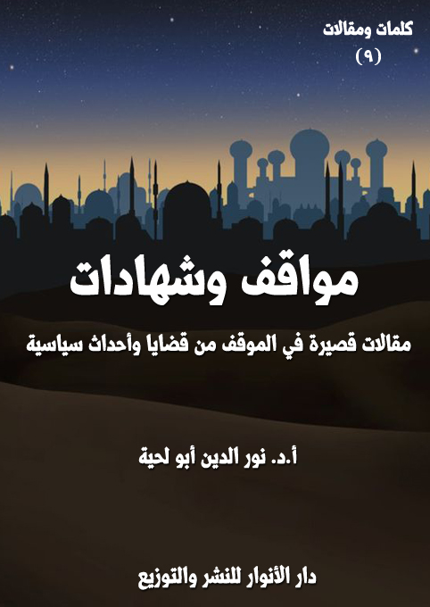

الكتاب: مواقف وشهادات
الوصف: مقالات قصيرة في الموقف من قضايا وأحداث سياسية
السلسلة: كلمات ومقالات
المؤلف: أ. د. نور الدين أبو لحية
الناشر: دار الأنوار للنشر والتوزيع
الطبعة: الثانية، 1443 هـ
عدد الصفحات: 217
ISBN: 978-3-330-97412-8
لمطالعة الكتاب من تطبيق مؤلفاتي المجاني وهو أحسن وأيسر: هنا

يحتوي هذا الكتاب على ما يقارب سبعين مقالة قصيرة نشرت في مجلات أو مدونات مختلفة، وهي تدور جميعا حول الموقف من بعض القضايا السياسية الكبرى، وخصوصا تلك التي لها علاقة بفلسطين ومحور المقاومة.
مواقف وشهادات (7)
يحتوي هذا الكتاب على ما يقارب سبعين مقالة قصيرة نشرت في مجلات أو مدونات مختلفة، وهي تدور جميعا حول الموقف من بعض القضايا السياسية الكبرى، وخصوصا تلك التي لها علاقة بفلسطين ومحور المقاومة، وهذه عناوينها:
1. هنيئا لنا بالمقاومة الفلسطينية
2. المشروع الصهيوني .. والمقاومة
3. الأماكن المقدسة .. وأبعادها الوظيفية
4. التطبيع مع الصهيونية .. والعلماء
5. الربيع العربي .. والقدس
6. الجماعات الإسلامية .. والقدس
7. لا تلوموا أمريكا
8. أمراء العرب .. والسباق نحو إسرائيل
9. لماذا كف الحمير عن النهيق؟
10. إلى المتباكين على الحمير
11. سيد كل الجبهات
12. حيث يجب أن نكون سنكون
13. حزب الله .. وأسرار الوعد الصادق
14. تحية للجندي المجهول
15. رسالة لسماحة السيد
مواقف وشهادات (8)
16. حزب الله .. والإرهاب
17. رسالة إلى مراجع الدين في العراق
18. دعوة إلى مجلس تعاون إيراني عراقي
19. العراق .. والمرجعية والقابلية الشعبية
20. اعتذار للإخوة في العراق لما حصل في مباراة الجزائر
21. رسالة الى الجمهور الكروي الجزائري
22. صدام حسين .. وتاجر المخدرات .. والمغفلون
23. أيها العرب .. ارحموا العراق .. أو دعوه وشأنه
24. هل قتل العراقيون الإمام الحسين؟
25. لماذا تحقدون على الحشد الشعبي؟
26. العراق .. والشقاق والنفاق
27. لماذا تقف مع الدولة السورية؟
28. لهذه الأسباب ستنتصر اليمن
29. لكن اليمن لا بواكي لها
30. أمل .. والبراءة المذبوحة
31. هذا جزاؤك يا عسيري .. وسيرى الظلمة أي منقلب ينقلبون
32. الأبعاد الحضارية لمحور المقاومة
33. محور المقاومة والصواريخ الصوتية
34. المقاطعة .. والمقاومة
35. جريمة الحياد
مواقف وشهادات (9)
36. دلوني على شيء أنتقد به إيران
37. لماذا علينا أن نحب إيران؟
38. هل هناك عداوة بين أمريكا وإيران؟
39. إيران ويهود أصفهان
40. الناقلات والسياسة والأخلاق
41. أسرار القوة الإيرانية
42. عندما يمرّغ أنف ترامب
43. الوطنية بين الروح والجسد
44. مارسوا جرائمكم بعيدا عن النبوة
45. احذروا الفتنة القادمة .. الفلم المسيء للصحابة
46. الذباب الالكتروني والمتاجرة بالفتن
47. أيها الساكتون عن الحق .. خذوا العبرة من الحائري
48. التوظيف السياسي للنبوءات النبوية
49. ترمب والثقب الأسود
50. مجزرة نيوزيلندا جريمة .. ولكن
51. سبعة أسباب لقتل الخاشقجي
52. الغرب .. وسياسة الحلب
53. جزيرة الشيطان
54. أدركوا ليبيا قبل أن تمزق
55. هل سيتواضع العالم بعد كورونا؟
مواقف وشهادات (10)
56. احذروا من تولي الشباب للمسؤوليات الكبرى
57. ليس كل النخبة ساسة
58. أراك معجبا بنظام ولاية الفقيه
59. أيها المتظاهرون الشرفاء
60. الانفتاح .. والقيم
61. الموقف من منتهكي حرمة شهر رمضان
62. المشكلة في الجزائر مشكلة شعب .. لا مشكلة سلطة
63. ما يحدث في الجزائر فتنة
64. زوبعة في فنجان
65. جمعية العلماء المعاصرة .. وبيان شيخ السلفية
66. أكلت يوم أكل الثور الأبيض
67. توضيح حول بيان شيخ سلفية الجزائر
68. حول بيان شيخ سلفية الجزائر
مواقف وشهادات (11)
هنيئا لنا بالمقاومة الفلسطينية
في زمن الذل العربي .. لا يثلج صدورنا، ولا يقر أعيننا، إلا أولئك المقاومين الفلسطينيين الأبطال الذين أبوا أن يصافحوا عدوهم، أو يتخلوا عن أرضهم، أو يبيعوا قضيتهم، على الرغم من كل تلك الإغراءات التي تعرض عليهم، وكل التهديدات التي يتعرضون لها، لكنهم يأبون، ويرددون مقالة رسول الله صلى الله عليه وآله وسلم: (والله لو وضعوا الشمس في يمينى والقمر في يساري على أن أترك هذا الأمر حتى يظهره الله، أو أهلك فيه ما تركته) (1)
ومقاومتهم الباسلة ليست في تلك الصواريخ التي يمطرون بها عدوهم فقط، ولكنها ممتدة كل حين، وبكل الوسائل .. وهم يعيشونها كل لحظة، ولا أحد يلتفت إليهم، أو يهتم بمعاناتهم، أو يدعو إلى نصرتهم، لأن الكل منشغلون ..
بعضهم منشغل بملكه، كيف يثبته، وكيف يجعله في أولاده، لا أولاد إخوانه أو بني عمومته، وهو لذلك يقدم الرشوة لكل العالم، ويبيع فلسطين حجرها وبشرها من أجل ذلك.
وبعضهم منشغل بتحسين صورته أمام العالم؛ حتى لو استدعى ذلك أن يدخل الوزيرة الصهيونية إلى المسجد، ويستمع لنشيد الصهاينة .. أو يستقبل رئيسهم .. أو يستقبل فرقهم الرياضية.
أما المتدينون .. والذين كان الأصل أن يدعوهم إيمانهم إلى المواجهة والنصرة واستعمال كل الوسائل في ذلك؛ فهم منشغلون أيضا بكل شيء ما عدا نصرة المقاومة .. فبعضهم منشغل بالانتصار للصحابة، وهو لا يعلم أن أولئك المقاومين هم صحابة هذا
__________
(1) سيرة ابن هشام (1/ 266)
مواقف وشهادات (12)
الزمان، ومن قعد عن نصرتهم، فهو متاجر بالصحابة، ولا يعرفهم، بل هو عدوهم اللدود .. فالصحابة هم أولئك الصادقون الذين تركوا كل شيء، وضحوا بكل شيء في سبيل نصرة الإسلام، ومن لم يكن معهم في هذا الخط، فهو مثل ذلك الذي حمل قميص بعضهم، وراح يتاجر به.
وبعضهم منشغل بالعترة الطاهرة، ويتاجر بهم في لندن وواشنطن، ويبث من قنواته كل ألوان الفتنة، وهو لا يعلم أن الإمام الحسين موجود بين أولئك المقاومين الأبطال، وأنه لا يزال يصيح في الأمة التي قعدت عن نصرته بمثل ذلك الصياح الذي خاطب به جيش يزيد قائلا: (تبّاً لكم أيّتها الجماعة وترحاً، أحين استصرختمونا والهِين، فأصرخناكم موجفين، سَللتم علينا سيفاً لنا في أيمانكم، وحششتم علينا ناراً اقتدحناها على عدوّنا وعدوّكم، فأصبحتم إلْباً لأعدائكم على أوليائكم) (1)
ثم يردد مخاطبا أولئك الذين يدعونه إلى التسليم والمذلة والتطبيع: (ألا وإنّ الدعي بن الدعي ـ يعني الأمراء والملوك الرؤساء العرب الداعين للتطبيع ـ قدْ ركز بين اثنتين، بين السلة والذلّة، وهيهات منّا الذلّة، يأبى الله لنا ذلك ورسوله والمؤمنون، وحُجور طابت وحجور طهرت، وأُنوف حمية، ونفوس أبية، من أن نؤثر طاعة اللئام على مصارع الكرام، ألا وإنّي زاحف بهذه الأسرة على قلّة العدد وخذلان الناصر)
وهكذا ينشغل الجميع عن كل التضحيات التي يقدمها الفلسطينيون المرابطون في سبيل الله، والمضحون بكل شيء في سبيل حفظ الأمة، وحفظ أرضها ودينها.
فلذلك كانت المقاومة الفلسطينية هي المعيار الذي نقيس به إنسانيتنا وإسلامنا ..
__________
(1) بحار الانوار 45: 8.
مواقف وشهادات (13)
فالإنسان هو الذي يقف مع الفلسطينيين، ولا يهم الدين الذي ينتسب إليه، ولا المذهب الذي يدين الله به .. فالشيوعي الذي يسكن أمريكا اللاتينية ويقيم المظاهرات كل حين للمطالبة بالحقوق الفلسطينية خير ألف مرة من ذلك الذي يكذب على نفسه، ويدعي الإسلام، وهو يمد يده إلى الخونة ومغتصبي الأرض من الصهاينة، ويقيم علاقاته الودية معه، وربما يمدهم بالمال الذي يستعينون به على ضرب إخوانه وبني عمومته.
لذلك لا نملك إلا أن نهنئ أنفسنا بأولئك المقاومين الأبطال، ونهنئها بعد ذلك بأن الله أكرمنا أن نكون معهم كل حين، وإن منعتنا الحدود عن نصرتهم؛ فقلوبنا معهم، وألسنتنا لهم، وأيدينا مستعدة كل حين لأن تجتمع مع أيديهم .. ونسأل الله أن نكون من أولئك الذين قال فيهم رسول الله صلى الله عليه وآله وسلم: (لقد تركتم بالمدينة أقواما ما سرتم مسيرا، ولا أنفقتم من نفقة، ولا قطعتم من واد إلا وهم معكم فيه)، قالوا: يا رسول الله، وكيف يكونون معنا وهم بالمدينة؟ قال: (حبسهم العذر) (1)
ونحن نقول لهم كذلك:
يا راحلين إلى البيت العتيق لقد ... سرتم جسوما وسرنا نحن أرواحا
إنا أقمنا على عذر وعن قدر ... ومن أقام على عذر فقد راحا
ومع ذلك كله نستغفر الله من التقصير في حق نصرتهم، ونسأله أن يجعلنا من الذين عذرهم؛ فقال: {لَيْسَ عَلَى الضُّعَفَاءِ وَلَا عَلَى الْمَرْضَى وَلَا عَلَى الَّذِينَ لَا يَجِدُونَ مَا يُنْفِقُونَ حَرَجٌ إِذَا نَصَحُوا لِلَّهِ وَرَسُولِهِ مَا عَلَى الْمُحْسِنِينَ مِنْ سَبِيلٍ وَاللَّهُ غَفُورٌ رَحِيمٌ وَلَا عَلَى الَّذِينَ إِذَا مَا أَتَوْكَ لِتَحْمِلَهُمْ قُلْتَ لَا أَجِدُ مَا أَحْمِلُكُمْ عَلَيْهِ تَوَلَّوْا وَأَعْيُنُهُمْ تَفِيضُ مِنَ الدَّمْعِ حَزَنًا أَلَّا
__________
(1) رواه البخاري برقم (2838) وأحمد (3/ 103).
مواقف وشهادات (14)
يَجِدُوا مَا يُنْفِقُونَ} [التوبة: 91، 92]
ونعوذ به أن نكون من الذين قال فيهم: {الَّذِينَ يَتَرَبَّصُونَ بِكُمْ فَإِنْ كَانَ لَكُمْ فَتْحٌ مِنَ اللَّهِ قَالُوا أَلَمْ نَكُنْ مَعَكُمْ وَإِنْ كَانَ لِلْكَافِرِينَ نَصِيبٌ قَالُوا أَلَمْ نَسْتَحْوِذْ عَلَيْكُمْ وَنَمْنَعْكُمْ مِنَ الْمُؤْمِنِينَ فَاللَّهُ يَحْكُمُ بَيْنَكُمْ يَوْمَ الْقِيَامَةِ وَلَنْ يَجْعَلَ اللَّهُ لِلْكَافِرِينَ عَلَى الْمُؤْمِنِينَ سَبِيلًا} [النساء: 141]
مواقف وشهادات (15)
يخطئ الكثير حول جانبين مهمين وخطيرين من [المشروع الصهيوني] في المنطقة الإسلامية:
الأول: حين يربطونه باليهود .. أو بالديانة اليهودية، وهذا غير صحيح، فاليهود جزء من المشروع، وليسوا كل المشروع، فأول القائمين والمؤسسين لهذا المشروع هي قوى الاستكبار العالمي التي تريد أن تستحوذ على المنطقة، وأول من يؤمن لها هذا الاستحواذ هو إقامة الكيان الغاصب الذي يسمونه [إسرائيل]، التي يريدون منها أن تصبح شرطي المنطقة، وموجهها وحارسها من أي تيارات تريد أن تعيد للدول الإسلامية سيادتها.
الثاني: حين يربطونه بمنطقة جغرافية هي [فلسطين] .. فالمشروع الصهيوني يريد المنطقة جميعا، ولا يريد تلك الحدود الجغرافية الهزيلة التي يقيم فيها اليهود .. ويمكننا من خلال الاطلاع على استراتيجيته في المنطقة أن نرى أنه يسعى لتحقيق ثلاثة أنواع من السيطرة:
1 ـ السيطرة السياسية: وذلك عبر التحكم في دوائر القرار في المنطقة الإسلامية جميعا، بحيث لا تتحرك إلا وفق المصالح الغربية ..
2 ـ السيطرة الاجتماعية: وذلك عبر البحث عن التطبيع بكل مستوياته مع الشعوب العربية، ليخترق الشعوب كما اخترق الساسة.
3 ـ السيطرة الحضارية والثقافية: عبر نشر المفاهيم الغربية العلمانية والمادية التي تأسست عليها الصهيونية والحضارة الغربية.
بناء على هذا فإن المقاومة لا تعني فقط حمل السلاح ضرب الكيان الصهيوني به، بل
مواقف وشهادات (16)
تعني كذلك كل أشكال الرفض، سواء على الجانب السياسي أو الاجتماعي أو الحضاري ..
ولهذا فإن كل ممارسة مهما كانت بسيطة ضد هذا الكيان وضد مشاريعه تشكل نوعا من أنواع المقاومة، سواء كانت مسيرة أو مقالا أو خطبة أو صورة توضع على وسائل التواصل الاجتماعي .. وغير ذلك .. يعتبر نوعا من أنواع المقاومة.
أما الجانب العسكري للمقاومة، وهو من جوانبها المهمة، ولا ينبغي الاستهانة به، ولكن ينبغي كذلك أن يكون محسوبا بدقة، فلا يمكن لفصيل ـ مهما كبر ـ مثل حماس أو الجهاد الإسلامي أو حزب الله، أو حتى دولة مثل سورية أن يقوم وحده بضرب إسرائيل، لأن نتائج ذلك ـ في الوقت الحالي ـ كارثية بالنسبة له، ولا يفيد شيئا .. بالإضافة إلى أنه قد يعطل التحضير الاستراتيجي للمعركة الحقيقية.
وهذا يذكرنا بمدى غباء الذين ينتقدون الدولة السورية لأنها لم تطلق رصاصة واحدة على إسرائيل .. لأن تفكيرهم بسيط، فإطلاق الرصاص استعراض، وليس له أي مردود فعلي ..
المردود الحقيقي هو رفض التطبيع، والمشاركة في محور المقاومة الرافض للمشروع بجملته .. أما تحرير الأرض عسكريا، فذلك يحتاج إلى زمن كاف للتحضير للمعركة الاستراتيجية الكبرى التي تنتهي لا باستقلال فلسطين وتحريرها فقط، بل بتحرير جميع المنطقة من كل سدنة المشروع الصهيوني، ابتداء بحراسه من العرب.
مواقف وشهادات (17)
الأماكن المقدسة .. وأبعادها الوظيفية
يختصر الكثير من الناس أدوار الأماكن المقدسة فيما يسمونه [السياحة الدينية]، أو في تلك المناسك التي تؤدى بطريقة طقوسية شخصية لا مقاصد سياسية أو اجتماعية من ورائها .. أو في تلك الأجور المضاعفة الموهوبة لمن يؤدي أي عمل خيري فيها.
ونحن لا ننكر كل هذا .. ولكن ننكر اختزال وظائف الأماكن المقدسة في هذه الجوانب .. فهذه الأماكن، وخصوصا الثلاثة منها: مكة والمدينة والقدس .. تحمل أدوارا وظيفية عالمية أخطر بكثير .. فهي في أصلها عواصم المؤمنين في كل العالم .. ولا يحق لأي دولة أو سياسة أن تتحكم فيها ..
لا يمكنني الحديث هنا عن كل وظائف هذه الأماكن بحسب ما تشير إليه النصوص .. ولكني أشير هنا إلى وظيفتين فقط:
الوظيفة السياسية: وهي الوظيفة التي تخول لها التدخل في كل ما يحصل في العالم من أحداث، لإبراز الموقف الديني الحقيقي منها بعيدا عن سياسات الدول المختلفة ومصالحها .. ومن العجيب تغييب هذا الدور الخطير .. وعن أخطر قضايا الأمة وقضايا الإنسانية .. ومن العجيب أن يتولى شأن هذه الأماكن أناس لا علاقة لهم بالعلم، ولا بالحكمة، ولا بالدين .. ليرسموا صورة مشوهة لها، ولوظيفتها الخطيرة.
الوظيفة الحضارية: وهي أهم الوظائف .. فلو أن هذه الأماكن حميت من تأثيرات الدول والسياسات، وتحولت إلى مثابات للمؤمنين والحكماء، لأصبحت مركزا للجامعة الإسلامية الموحدة، بل مركزا للجامعة الإنسانية .. يجتمع فيها حكماء العالم، ليحموا العالم من آثار ساسته والمستبدين فيه.
مواقف وشهادات (18)
وإذا حصل ذلك، فإنه يمكن للمسلمين بمدارسهم وطوائفهم جميعا أن يؤسسوا جامعاتهم ومدارسهم، وأن يقيموا حلقات درسهم، ليحصل الاحتكاك بين الطوائف جميعا .. والاحتكاك هو الذي يولد الاعتدال، ويمكن التعارف الذي يحمي من التطرف.
ولو أن الأمة منذ بداياتها الأولى حفظت لهذه الأماكن حرمتها، وتركتها لأهل الدين والعلم، يحتك بعضهم ببعض، ولم تتدخل السياسة بينهم، ولم تتدخل في الدين .. لكان للإسلام شأن آخر ..
مواقف وشهادات (19)
التطبيع مع الصهيونية .. والعلماء
لا يمكنني أن أكذب على جميع علماء المسلمين في جميع الفترة السابقة، فأذكر أن لهم ميولا إلى التطبيع مع الكيان الصهيوني الغاصب .. فلهم من التصريحات الكثيرة ما يفند دعواي.
لكني لا أستطيع أن أجزم أن هذا الموقف سيبقى دائما، وخلال الفترة الحالية، أو خلال الأيام والأسابيع القادمة، لأن هناك حركة حثيثة متسارعة من بعض هؤلاء لا تقل عن حركة السياسيين تتوجه نحو هذا المضمار أو تهون منه، أو تعطيه المشروعية، أو بعض المشروعية، وهي لذلك لا تزال تبحث في متون التراث لتخرج به في الوقت المناسب .. وما أسهل أن تجد ذلك.
وقد دعاني إلى هذا كلام كثير سمعته هذه الأيام في بعض الدول العربية، ومن بعض كبار العلماء المتبوئين لأعلى المناصب العلمية والدينية فيها .. يدعو فيه المتحمسين إلى مواجهة المشروع الصهيوني إلى استعمال الحكمة والروية والهدوء، ويذكر أن هناك أعداء لا يقلون خطرا، وينبغي التنبه لهم، ويذكر في نفس السياق أن رسول الله صلى الله عليه وآله وسلم دخل في جوار المطعم بن عدي المشرك .. ويكررها مرات كثيرة .. ويضع في كلامه سطورا على المشرك .. وينبه إلى أن المشرك أكثر كفرا من الكتابي .. وهو بالتالي أكثر كفرا من اليهود والنصارى .. ولذلك يمكن القياس عليه ..
بل إنه يضيف إلى ذلك فيذكر أن رسول الله صلى الله عليه وآله وسلم ضرب أروع الأمثلة في حفظ الجميل والوفاء لصاحبه، فبالرغم من أن المطعم بن عدي مات كافرا، إلا أن رسول الله صلى الله عليه وآله وسلم ظل حافظًاً لجميل المطعم بن عدي وموقفه معه حتى بعد موته على الكفر قبل غزوة بدر، فلما
مواقف وشهادات (20)
أسَرَ المسلمون في غزوة بدر سبعين من المشركين، قال صلى الله عليه وآله وسلم: (لو كان المطعم بن عدي حيا ثم كلمني (طلب الشفاعة) في هؤلاء النتنى لتركتهم له)
وطبعا .. هو لا يقصد في كل كلامه المطعم بن عدي، ولا المشركين .. وإنما هو يضع اللبنة الأولى للذين يتوقفون في التطبيع، واللبنة هي جواز الاستجارة بالعدو، وفضل الإحسان إليه ..
وإسرائيل عنده ليست أكفر من المطعم .. وإيران ليست أقل عداوة لرسول الله صلى الله عليه وآله وسلم من المشركين.
مواقف وشهادات (21)
لا أخفي عليكم، ولا على نفسي أني استبشرت كثيرا ببدايات الربيع العربي، وخاصة في نهجه المسالم، أي في تونس ومصر وليبيا قبل تحوله إلى نزاع مسلح ..
لكني ـ وبعد تحوله إلى نزاع مسلح ـ وبعد أن رأيت كبار علماء الأمة، وقادتها الروحيين، وخاصة من أبناء الحركة الإسلامية يتوسلون للناتو وأمريكا عرفت أن الأمر كان مجرد خدعة وكذبة كبيرة لوجوه متعددة:
أولها أن هذا الربيع لم يقصد كل المملكات الممتلئة بالفساد، والتي لا تعرف أي قيمة للديمقراطية، ولا لحقوق الإنسان .. بل العجيب أن تلك المملكات نفسها صارت راعية له، وداعية إليه.
وثانيها أن هذا الربيع لم يتعرض لقضايا الأمة الكبرى، ولم يشر إليها، فقد كان يكتفي بالدعوة للحرية المتمردة على كل الضوابط ..
وثالثها أن هذا الربيع لم يكن يحمل أي مضمون فكري، سوى التمرد، ولهذا لم يكن شعاره [إصلاح الأنظمة] وإنما كان شعاره [إسقاط الأنظمة] .. وليس بعد إسقاط الأنظمة سوى الفوضى.
ورابعها أنه لم يتول القيادة الروحية والفكرية لهذا الربيع أصحاب حكمة وروية وعقل وتدبير، وإنما تولى قيادته صبية وشباب، وعلماء لا يقلون عنهم طيشا وتهورا.
بعد كل هذا اقتنعت تماما أن هذا الربيع ما هو إلا قنبلة وضعت في جسم الأمة لتلهيها عن وحدتها وحقيقتها وقدسها ..
لقد كان هذا الربيع هو المقدمة التي سمعنا نتيجتها هذه الأيام .. فقد أدرك الغرب،
مواقف وشهادات (22)
وعلى رأسهم الشيطان الأكبر أن الأحقاد التي يحملها المسلمون على بعضهم بعضا أكبر بكثيرمن الأحقاد التي يحملونها على أعدائهم الصهاينة .. ولهذا كانت هذه الفرصة لإعلان القدس عاصمة لليهود لأن المسلمين الممتلئين بالأحقاد لا يحق لهم أن يتشرفوا بانتسابهم لها .. فلم نر طيلة الفترة الماضية يهوديا يقتل يهوديا بسبب طائفته على الرغم من أن الطوائف اليهودية مساوية لعدد أفراد اليهود.
مواقف وشهادات (23)
من أبشع صور التراجع الذي وقعت فيه الجماعات الإسلامية، وخصوصا السياسية منها، موقفها من قضايا الأمة، وخاصة القضية الكبرى [القضية الفلسطينية]، والتي كانت فرصة عظيمة لتوحيد الأمة وتجميع صفوفها، وبث الوعي بينها، والتنبيه إلى أعدائها الحقيقيين .. في نفس الوقت الذي كانت فيه من أعظم الأسباب التي تعطي مصداقية لهذه الجماعات، وتحصد لها الكثير من المؤيدين والأتباع.
لكن بحلول فتنة [الربيع العربي] بدأت هذه الجماعات تتراجع عن هذه القضية، بل سمعنا من قاداتها السياسيين من يتزلف للصهاينة، ويزعم أنه لا معركة بيننا وبينهم، بل إن هناك أنواعا من التحالفات والصداقات الحميمية يمكن أن تقام ..
وسمعنا من قادتها الروحيين من يتحدث حديثا لطيفا عن العدو الصهيوني، وديمقراطيته في نفس الوقت الذي يصب جام غضبه على أمته، وقادة أمته، بطريقة فجة غليظة.
لعل الكثير يبرر هذا السكوت بأن الفرصة لم تتح لها .. ولكن متى كانت الجماعات تنتظر الفرص، وهي التي كانت تحرك الشوارع لأبسط الأسباب، وتملأ الدنيا صراخا لأجل قضايا مختلف فيها .. وتملأ الفضاء ضجيجا لأجل حملاتها الانتخابية .. فهل حملاتها الانتخابية .. أهم من القدس وفلسطين وقضايا الأمة؟
لا بأس .. فليعتبروها حملة انتخابية، وينهضوا بكل ما لديهم من قوة، ليعيدوا لأنفسهم اعتبارها، وليكسبوا أنصارا جددا .. ومؤيدين جددا .. وليعيدوا بوصلتهم إلى قبلتها الحقيقية، ويخرجوا من تلك المصيدة التي وضعها لهم أعداؤهم وأعداء الأمة
مواقف وشهادات (24)
ليفككوها، وينشروا الفتن بينها.
مواقف وشهادات (25)
لا تلوموا أمريكا لأنها نقلت سفارتها من [تل أبيب]، وهي أرض عربية محتلة إلى [القدس]، وهي أرض محتلة أيضا .. مثلها مثل حيفا ويافا والخليل وجنين والناصرة .. ومثل الضفة الغربية وغزة؟
لا تلوموها .. بل لوموا أنفسكم أنتم الذين رحتم تستبدلون القضية الفلسطينية بالقضية السورية والقضية الليبيبة والقضية العراقية.
لوموا أنفسكم، فأنتم الذين استبدلتم العدو الصهيوني بالعدو الإيراني .. وأصبحتم تطلقون على بني صهيون [إسرائيل]، وتطلقون على إخوانكم الفرس [صفويين ومجوسا]
لوموا أنفسكم، فأنتم الذين لم تعترضوا على أمرائكم الذين أعطوها مئات المليارات من الدولارات .. ولم تعترضوا على علمائكم الذين توسلوا إليها لتضرب سوريا والعراق ولبنان لتخلصكم من المشروع الصفوي.
لوموا أنفسكم، فأنتم الذين خونتم من يعتبرها الشيطان الأكبر، وصادقتم من يعتبرها الملاك الرحيم .. أليس إمام حرمكم هو الذي اعتبرها قبلة السلام، وحاميه؟
لوموا أنفسكم، فأنتم الذين تتفرجون على أطفال اليمن، وهم يبادون من طرف الحليف الأكبر لأمريكا، ثم لا تسكب لكم دمعة، ولا يهتز لكم عرق .. أتراكم تعتبرون اليمن أقل شأنا من فلسطين؟ أم تراكم تعتبرون الطفل اليمني أحقر من الطفل الفلسطيني؟
اعذروني أن أستبدل لومي لأمريكا بشكرها .. فشكرا لها، لأنها أرتكم حقيقتها التي حاولتم كل جهدكم أن تستروها .. وانتظروا أياما قريبة تعلن فيها فرنسا وبريطانيا وكل الدول التي تلحسون أحذيتها لترضى عنكم نفس قرار أمريكا .. فما ذلك ببعيد.
مواقف وشهادات (26)
أمراء العرب .. والسباق نحو إسرائيل
وأخيرا خلع أمراء العرب وملوكهم تلك الأقنعة الكاذبة التي كانوا يضحكون بها على المغفلين، ويصورون لهم أنهم رمز النخوة والشهامة والمروءة، وأنهم ورثوا شجاعة عنترة، وكرم حاتم، ونخوة الزير المهلهل، وأنهم أصحاب السيادة والمجد والسؤدد، وأنهم أولى برسول الله صلى الله عليه وآله وسلم من غيرهم من الشعوب.
لقد ضاعت كل تلك الكلمات في مرجل خياناتهم الذي تفوح روائحه النتنة كل حين .. وها هي اليوم قد بلغت أوجها، حيث صار الكل عبيدا أمام سيدهم الإسرائيلي والأمريكي والأوروبي، وتخلوا عن كل تلك الأوسمة التي كانوا يلبسونها زورا وبهتانا، ولبسوا بدلها نياشين الخيانة واللصوصية والإجرام.
كانوا سابقا ـ خوفا من شعوبهم أو حياء منهم ـ يديرون خياناتهم تحت الطاولات، وبعيدا عن الإعلام، ويحضرون معهم من رجال الدين من يمسح كل آثار جرائمهم، ويحضرون من رجال الفن، من يحول من جرائمهم المكتومة بطولات موهومة.
لكنهم اليوم تخلوا عن كل ذلك الحياء الذي كان يلبسهم عند ممارسة كل خيانة، وصاروا أصحاب جرأة وشجاعة وهمة، لأن شعوبهم لم تعد في مستوى التحدي، بل صارت لا تختلف عن ذلك الشعب الذي رباه فرعون على عينه؛ والذي قال تعالى يصفه: {فَاسْتَخَفَّ قَوْمَهُ فَأَطَاعُوهُ إِنَّهُمْ كَانُوا قَوْمًا فَاسِقِينَ} [الزخرف: 54]
وكيف لا تكون كذلك، وهي التي كانت تطبل لضرب سوريا والعراق وليبيا وإثارة الفتن فيها، وهي التي كانت تغرد ضد كل الجيوش العربية، وتفرح لكل وابل من الصواريخ يسقط على أطفال اليمن .. لكنها اليوم، وبعد أن صار رؤساء الكيان الصهيوني
مواقف وشهادات (27)
المحتل ووزراؤه يزورون أراضيهم علانية بعد أن كانوا يزورونها سرا، ولا أحد يواجه، ولا أحد ينكر أو ينتقد، لأن أصواتهم بحّت وهي تحرض على الفتن، وعلى إبادة الجيوش العربية.
لست أدري ما أقول لتلك الشعوب التي يحكمها أولئك الملوك الأمراء، وهل يمكنني أن أحملهم جرائر ملوكهم وأمرائهم؟ وكيف لا يمكنني ذلك؟
وهل يمكن لشعب صاحب عقل أن يرى ملكه وهو يهدر كل ثروته، ويدفع منها مئات الملايير لأعدائه، ثم يقف ساكنا، لا ينبز ببنت شفة في نفس الوقت الذي فتح فمه بكل ألوان البذاءة عندما تعلق الأمر برؤساء دول أخرى، لم يفعلوا عشر ما فعله ملوكه وأمراؤه؟
وهل يمكن لشعب في هذا العالم المتطور أن يرضى باستبداد أسر مملوءة بالعفن تحكمه برغباتها وأهوائها، ثم يزعم بعد ذلك أنه إنسان حر، بل يزعم أنه أفضل الشعوب، وأنه يمثل خير أمة أخرجت للناس؟
لا يمكنني أن أجيب على هذه الأسئلة، ولكن هذه الصور التي تأتي كل حين عن زيارات رؤساء وملوك الصهاينة لإخوانهم في الإجرام العربي، إن لم تحرك ساكنهم، ولم يثر نخوتهم، ولم تستفز شهامتهم، فهذا لا يعني سوى شيء واحد، وهو أن هذه الشعوب مثل ملوكها وأمرائها ليست سوى أكذوبة، و {سَرَابٍ بِقِيعَةٍ يَحْسَبُهُ الظَّمْآنُ مَاءً حَتَّى إِذَا جَاءَهُ لَمْ يَجِدْهُ شَيْئًا} [النور: 39]
ولا أقول لهذه الشعوب سوى ما قاله رسول الله صلى الله عليه وآله وسلم محذرا لهم من هذه الخنادق التي وضعوا أنفسهم فيها: (ويل للعرب من شر قد اقترب، فتن كقطع الليل المظلم يصبح الرجل مؤمنا، ويمسى كافرا، يبيع قوم دينهم بعرض من الدنيا قليل، المتمسك يومئذ بدينه،
مواقف وشهادات (28)
كالقابض على الجمر) (1)
__________
(1) البخاري 6/ 274، ومسلم رقم (2880)، والترمذي رقم (2188)
مواقف وشهادات (29)
عندما كانت الحرب الناعمة تأكل الأخضر واليابس في دولنا العربية الممتلئة بالكآبة والتمزق، كان الخطباء والفقهاء ورجال الدين كلهم يحملون أعواد الثقاب وخزانات البنزين، ويشعلون النار في كل محل، ويدعون أن الحديث في السياسة من الدين، وأنه لا يمكن لهم أن يسكتوا عن الاستبداد، حتى لو قضوا على ثلثي الشعوب العربية، بل حتى لو لم يبقوا على واحد منها.
وكان من هؤلاء ثلة كبيرة معروفة أعلنت النفير العام، كالقرضاوي أبو الفتنة الأكبر، ومحمد حسان، والعريفي، والقرني، والريسوني، والضاري، والديلمي .. وغيرهم كثير .. كل عبر عن ذلك بطريقته الخاصة.
لكن بمجرد أن بدأت نيران تلك الفتنة تخمد، لتلد فتن جديدة أخرى، لا تقل عنها خطورة مثل ضرب اليمن، واستعمال كل الوسائل للقضاء على شعبها، ومثل تلك الفضيحة الكبرى التي فضح بها رأس الاستبداد العربي، والزيارات المتوالية لأعمدة الكيان الصهيوني للدول العربية، وخصوصا الخليجية منها .. سكت الجميع، وكأنهم بلعوا ألسنتهم، بل راح بعضهم يصرح بأنه لا يريد أن يتكلم في السياسة، لأن السياسية ليست من الدين.
وهكذا بقدرة قادر تحول أولئك الناشرون للخراب، والداعون للفتنة زهادا ورعين لا يريدون أن يلطخوا ألسنتهم بالسياسة النجسة، مع أنهم في حياتهم جميعا كانوا عبيدا مأجورين لسادتهم، يفتون بحسب ما يطلبون، ويرقصون بحسب النغمات التي يرددونها على مسامعهم.
فهم الذين دعوا إلى الجهاد في أفغانستان، وأرسلوا خيرة شباب الأمة ليقتلوا فيها،
مواقف وشهادات (30)
لا دفاعا عن أفغانستان، وإنما لأن السيد الأمريكي احتاج إلى من يدعمه في الحرب الباردة مع الاتحاد السوفيتي، فاستأجر بعض الحمير ليقوم بذلك.
وهكذا عندما احتاج إلى تمزيق سورية وليبيا والعراق وكل الدول العربية القريبة من إسرائيل، راح يستعمل نفس الحمير، لتنهق بنفس النهيق الذي حفظته وتعودت عليه؛ فملأت أرض العرب روثا ونهيقا ونجاسة ودمارا.
لكن عندما أصبح الأمر مرتبطا بالقواعد الأمريكية في الخليج، والدول التي تساندها، لم ينبزوا ببنت كلمة، ولم يطلبوا من ملوكهم وأولياء نعمتهم أن يكفوا عن إرسال تلك المعونات الكبرى لأمريكا وإسرائيل، ولم يطلبوا منها أن تكف عنتريتها على المستضعفين في اليمن، ولم يطلبوا منها أن تكف عن تطبيعها وتعاونها مع إسرائيل، ولم يطلبوا منها أن تخرج أولئك المعارضين من السجون السعودية والخليجية، والذين يُهددون كل حين بالإعدام، ولم يطلبوا منها أن تقف مع أولئك المجاهدين الغزاويين الذين يقابلون المحتل الصهيوني بصدورهم العارية.
والسبب بسيط هو أنهم حرموا على أنفسهم الحديث في السياسة الذي أوجبه عليهم الشرع المقدس، في الوقت الذي فتحوا أفواههم بكل النجاسات المرتبطة بها .. فهل بقي لهؤلاء حرمة؟ وهل ما زالت لحومهم مسمومة يحرم الاقتراب منها؟ وهل ما زالت لهم حصانة دينية تمنع من انتقادهم، بل من توبيخهم، بل من كيل كل تهم العمالة لهم؟ وهل نشفق عليهم، فلا نطلق عليهم لقب الحمير .. مع اعتذارنا للحمير؟
إذا فعلنا ذلك، فإننا لا نقرأ القرآن الكريم، ولا نعترف بموازين العدالة الإلهية، فالله تعالى حذر من أن يصير علماء هذه الأمة مثل حمير بني إسرائيل الذين هجاهم، فقال: {مَثَلُ الَّذِينَ حُمِّلُوا التَّوْرَاةَ ثُمَّ لَمْ يَحْمِلُوهَا كَمَثَلِ الْحِمَارِ يَحْمِلُ أَسْفَارًا بِئْسَ مَثَلُ الْقَوْمِ الَّذِينَ كَذَّبُوا
مواقف وشهادات (31)
بِآيَاتِ اللَّهِ وَاللَّهُ لَا يَهْدِي الْقَوْمَ الظَّالِمِينَ} [الجمعة: 5]
وأخبر أنهم يضلون الناس، ويتاجرون بالدين، ويتلاعبون بالفتاوى، فقال: {يَاأَيُّهَا الَّذِينَ آمَنُوا إِنَّ كَثِيرًا مِنَ الْأَحْبَارِ وَالرُّهْبَانِ لَيَأْكُلُونَ أَمْوَالَ النَّاسِ بِالْبَاطِلِ وَيَصُدُّونَ عَنْ سَبِيلِ اللَّهِ} [التوبة: 34]
وهكذا أخبر رسول الله صلى الله عليه وآله وسلم أن كثيرا من علماء الأمة سيتحولون إلى حمير مثل حمير بني إسرائيل، وسيصبحون مجرد مراكب للساسة والمستبدين والظلمة يركبونهم، ويحملون عليهم كل ما شاءوا من مظالم، ففي الحديث قال رسول الله صلى الله عليه وآله وسلم: (لأنا من غير الدّجّال أخوف عليكم من الدّجّال) فقيل: وما ذلك؟ فقال: (من الأئمّة المضلّين) (1)
__________
(1) أحمد.
مواقف وشهادات (32)
أعتذر لكل الذين تباكوا على الحمير .. ولهم الحق في ذلك، فأنا أيضا عاتبت نفسي كثيرا على ما كتبته عنها؛ فهي لم تسفك دما، ولم تفسد أرضا، ولم تفعل شيئا تلام عليه.
هي تبدأ حياتها وتنهيها بذلك الأكل الحلال الطيب الذي تقلعه بأسنانها من الأرض، ثم تمضي حياتها جميعا بنفس الوتيرة، تكد وتجد؛ فلا تبني قصرا، ولا تتولى منصبا، ولا تقبل هدايا الأمراء، ولا رشاوى الملوك، ولا تظهر على شاشات الفضائيات لتفتي بقتل إخوتها من الحمير، ولا بإبادة مزارع أصحابها من الفلاحين، بل تظل مخلصة لهم إلى أن يتوفاها الله، وهي بذلك الإخلاص والتجرد.
ولم نسمع في يوم من الأيام، وعلى مدار التاريخ بأن حمارا دعا حمارا إلى إسطبله، ثم قطعه إربا إربا، ثم دعا من فقهاء الحمير من يبرر له فعلته، ويثني عليه بسببها، ولم نسمع كذلك أن حمارا دخل مسجدا، وراح يحرض الحمير بعضها على بعض، ولم نسمع أبدا أن حمارا وصف صديقه الذي رفض العمل عند سيده بكونه رافضيا، ولا حمارا نبز حمارا بغير اسمه الذي سماه الله به؛ فسماه ثعلبا ماكرا، أو ذئبا مخادعا، أو حية رقطاء.
نعم لكم الحق في اعتبار صوت الحمير منكرا ومزعجا، ولكن ليس لكم الحق في اعتباره أكثر إزعاجا من تلك الأصوات الممتلئة بالحقد والكراهية، والتي سفكت بسببها الدماء، وهتكت الأعراض، وامتلأ البشر والحجر عذابا وآلاما .. وأنا أضمن أمام كل العالم أنه لو لم نسمع في الأرض إلا نهيق الحمير لما ظهر الفساد في البر والبحر، ذلك أن الفساد الذي ظهر ليس بسبب نهيق الحمير، وإنما بسبب نهيق البشر.
وبعد هذا لا تحسبوا أنكم وحدكم تعرفون الله وتعبدونه، فالحمير أيضا تعرف ربها،
مواقف وشهادات (33)
وهي تذكره وتسبحه وتحمده، وربما تفعل ذلك أكثر منكم، وربما تفعله بصوتها الذي ترونه مزعجا (1)، وقد أشار رسول الله صلى الله عليه وآله وسلم إلى ذلك في قوله: (لا تضربوا وجوه الدواب، فإن كل شيء يسبح بحمده) (2)
وفي حديث آخر نهى رسول الله صلى الله عليه وآله وسلم عن اتخاذ الحمير وغيرها كراسي، وعلل ذلك بذكرها لله، فقد روي أنه مر على قوم وهم وقوف على دواب لهم ورواحل فقال لهم: (اركبوها سالمة، ودعوها سالمة، ولا تتخذوها كراسي لأحاديثكم في الطرق والأسواق، فرب مركوبة خير من راكبها، وأكثر ذكرا لله منه) (3)
وقد قال بعض الصالحين مصورا هذا: (ما أحد سب شيئا من الدنيا دابة ولا غيرها، ويقول: أخزاك الله أو لعنك الله إلا قالت: بل أخزى الله تعالى أعصانا لله تعالى)
والميزة التي تفرق تسبيح الحمير عن تسبيح البشر أن الحمير لم تتاجر أبدا بذلك التسبيح، ولا بذلك الحمد، ولم تطلب من البشر أن يقتل بعضهم بعضا لأجل ذلك التسبيح، بل هي تسبح الله، وتعيش مع التسبيح كل ألوان السلام؛ فلم نسمع أبدا أن حمارا ارتدى حزاما ناسفا، ثم فجر نفسه في عرس الحمير أو ولائمهم، وهو يسبح الله ويكبره، ولم نسمع أبدا أن حمارا ذبح حمارا وهو يكبر الله .. بل لم نسمع في التاريخ أن حمارا قتل حمارا، أو جاء بالمنشار وقطعه ـ كما يفعل البشر ـ إربا إربا.
ولذلك أعتذر بشدة للحمير، وأقدر كل تلك الأصوات التي انتقدتني لكوني زججت بها في هذه المتاهة التي قام بها شياطين البشر، ليحققوا المشروع الشيطاني على
__________
(1) ويشير إلى هذا ما ورد في الحديث من نهيه صلى الله عليه وآله وسلم عن قتل الضفدع، وعلل ذلك بقوله: (نعيقها تسبيح) رواه النسائي وأبو الشيخ وابن مردويه ..
(2) رواه أبو الشيخ في العظمة وابن مردويه.
(3) رواه أحمد ..
مواقف وشهادات (34)
الأرض، ويملأوا الأرض غواية بعد أن ملأها الله هداية.
ولكني أقول لهم، بأن المشبه به في المثال ليس متساويا مع المشبه في كل الوجوه؛ فأنا لم أذكر الحمير باعتبارها شبها مطابقا لأولئك المتاجرين باسم الله، والمضلين لخلقه، وإنما ذكرته بناء على غفلتهم، وعلى جعل ظهورهم مطية لركوب كل الشياطين، وخصوصا الشيطان الأكبر.
وقد دفعني إلى ذلك القرآن الكريم، فهو الذي علمنا ذلك التشبيه؛ وهو الذي وصف علماء أهل الكتاب الذين يحملون كتب الله ولا يفقهون ما فيها بكونهم أشباه الحمر، فقد قال تعالى: {مَثَلُ الَّذِينَ حُمِّلُوا التَّوْرَاةَ ثُمَّ لَمْ يَحْمِلُوهَا كَمَثَلِ الْحِمَارِ يَحْمِلُ أَسْفَارًا بِئْسَ مَثَلُ الْقَوْمِ الَّذِينَ كَذَّبُوا بِآيَاتِ اللَّهِ وَاللَّهُ لَا يَهْدِي الْقَوْمَ الظَّالِمِينَ} [الجمعة: 5]
بل شبههم بالكلاب؛ فقال: {وَاتْلُ عَلَيْهِمْ نَبَأَ الَّذِي آتَيْنَاهُ آيَاتِنَا فَانْسَلَخَ مِنْهَا فَأَتْبَعَهُ الشَّيْطَانُ فَكَانَ مِنَ الْغَاوِينَ وَلَوْ شِئْنَا لَرَفَعْنَاهُ بِهَا وَلَكِنَّهُ أَخْلَدَ إِلَى الْأَرْضِ وَاتَّبَعَ هَوَاهُ فَمَثَلُهُ كَمَثَلِ الْكَلْبِ إِنْ تَحْمِلْ عَلَيْهِ يَلْهَثْ أَوْ تَتْرُكْهُ يَلْهَثْ ذَلِكَ مَثَلُ الْقَوْمِ الَّذِينَ كَذَّبُوا بِآيَاتِنَا فَاقْصُصِ الْقَصَصَ لَعَلَّهُمْ يَتَفَكَّرُونَ} [الأعراف: 175، 176]
وهكذا فعل علماؤنا، وقد كتب أحدهم كتابا جعل عنوانه [فضل الكلاب على كثير ممن لبس الثياب] (1)، ولا مانع في أن يكتب أحدنا كتابا، ويجعل عنوانه [فضل الحمير على أذناب كل ملك أو أمير]
__________
(1) هو كتاب ألفه الشيخ العلامة أبو بكر محمد بن خلف بن المرزبان المتوفى عام 309 هـ، وذكر فيه ماقيل في الكلب من أقوال الشعراء والأحاديث الشريفة وأقوال الحكماء، ووصايا الآباء للأبناء في الإحسان إلى الكلب، وأخبار الأدباء فيه ومنافعه.
مواقف وشهادات (35)
في جبهة المقاومة للعدو الصهيوني كان البطل الصنديد الذي أسقط أسطورة العدو الذي لا يقهر، وأسقط معها كل أساطير الرعب التي أجمع عليها الإعلام العالمي بمعونة الإعلام العربي .. وحول من إسرائل إلى كيان هش كهشاشة بيت عنكبوت.
وفي جبهة مقاومة التكفيريين والإرهابيين والمتطرفين كان صاحب الراية التي لا تسقط، وبسببه سقطت رايات النصرة وداعش والجيش الحر وجيش الإسلام وفيلق الإسلام، وكل الرايات التي مونتها إسرائيل وأمريكا ودول الخليج.
وفي جبهة المقاومة السياسية كان سياسيا محنكا يعرف كيف يدير أمور السياسة ويحفظ التوازنات .. ويحفط معها جميع القيم الأخلاقية الرفيعة .. ومع كونه صاحب قوة لا تغلب إلا أنه لم يستعملها إلا مع العدو الخارجي .. في سلوك لم يعرف التاريخ مثله.
وفي جبهة مقاومة المشاريع التقسيمية كان مثالا للذي يتحدث باسم الأمة، لا باسم الطائفة، ويوزع هدايا انتصاراته للإنسانية لا لقومه أو بني مذهبه وطائفته .. فطائفته هي الحق المجرد الذي أخلص نفسه له وعاش من أجله.
وفي جبهة المقاومة السلوكية كان شيخا مرشدا، ومربيا روحيا، وداعية إلى الله على بصيرة .. كلماته تنفخ الروح في قلوب الموتى، وتعيد لها الحياة.
وهكذا كان ولا يزال سيدا في كل الجبهات .. وكل المواقف .. هو سيد في تواضعه وأدبه وحلمه وعلمه .. وهو سيد في روحانيته وسموه وتوجهه للملأ الأعلى وزهده في كل المغريات .. وهو سيد بمواقفه الصلبة التي حاول كل العالم أن يثنيها أو يزحزحها، فلم يستطع.
مواقف وشهادات (36)
شكرا لهذا السيد الذي أتاح لنا أن نرى القيم الرفيعة كلها متمثلة في شخصه الذي كان نموذجا رفيعا للمسلم الذي ورث النبوة والولاية .. ومثلهما أحسن تمثيل.
مواقف وشهادات (37)
لم يهتز قلبي لكلمة كما اهتز لهذه الكلمة .. لأن قائلها لم يكن جبانا رعديدا يرهب أعداءه الكثيرين، ولا صاحب مصالح يخاف على مصالحه، ولا طالب جاه يخاف على سمعته.
بل كان عبدا خالصا في عبوديته، قد تشرب الصدق والإخلاص والتجرد، وحدد بوصلته بكل دقة، وصار يدور معها حيث دارت، لا يبالي بسايكس بيكو وحدوده، ولا بالبروغندا الإعلامية وتشويهاتها ..
لم يكن يبالي إلا بشيء واحد هو الحق الذي انتهض لقيامه، والراية التي تولى رفعها، والمقاومة التي رشحته لسيادتها .. وأثبت جدارته بتلك السيادة .. فهو الجبل الذي لا تحركه الأعاصير .. والأرض الثابتة التي لا تهزها الزلازل .. والقامة الفارعة التي يسقط أمامها كل الأقزام .. والمرآة الواضحة التي تكشف كل الأقنعة.
هنيئا لنا بأن نسمع كلماته .. وهنيئا لنا أنا عشنا زمنه .. وهنيئا لنا لأننا نعرفه .. وهنيئا لنا لأننا لم نقع ضحايا الشياطين التي راحت تشوهه.
مواقف وشهادات (38)
حزب الله .. وأسرار الوعد الصادق
حزب الله هو الحزب الوحيد الذي صدق في كل وعوده، وانتصر في كل معاركه، واستطاع أن يمثل القيم الأخلاقية والحضارية أحسن تمثيل، وهو الذي رفع رأس الأمة الذي انخفض لفترة طويلة، في نفس الوقت الذي أذل فيه الكيان الصهيوني بعد أن بنى له الأعراب قصورا من الكبرياء.
ولذلك كان حريا بكل عاقل أن يعرف أسرار قوته ومصداقيته، وأسرار وعوده التي لا تتخلف، ولم كان أهلا لكل تلك الانتصارات؟ .. ولم كان أهلا لأن يتحول في فترة قصيرة من مجموعة مجاهدين بأسلحة بسيطة إلى قوة إقليمية يتحدث عنها كل رؤساء العالم، بما فيهم رؤساء القوى العظمى أنفسهم؟ .. أما الجرائد والمجلات والقنوات الفضائية، فهي لا تتوقف عن الحديث عنه، وكيل كل السباب له، لعلها تنفس عن بعض غيظها منه، وحقدها عليه.
ونبادر، فنقول بأن اعتبار صواريخه وعتاده من الأسلحة هي سر قوته ومصداقيته، ليس جوابا كافيا، ذلك أن الدول العربية، وخاصة الخليجية منها، تملك من العدد والعدة والأسلحة المتطورة ما لا يمكن قياسه بما يملكه حزب الله، وهي مع ذلك تتمرغ في الهزائم؛ فلا تدخل معركة إلا وتنهزم فيها شر هزيمة، ولا تنطق بوعد إلا وتغير عليه جحافل الأيام؛ فتخلفه.
ولذلك كان للعاقل أن يبحث عن أسرار أخرى، وهي أسرار يعرفها العدو والصديق، لكن العدو يقرّ بها، ويذعن لها، ويتحدث عنها، ويصرح بذلك، ومن شاء أن يتعرف على ذلك، فليشاهد ما تبثه القنوات الفضائية للكيان الصهيوني، وليقرأ ما تكبته
مواقف وشهادات (39)
صحفها.
أما الصديق، أو من ينبغي أن يكون صديقا، وهم العرب، فهم يأبون الإقرار، ويظلون يسمون الحزب الذي تحول إلى قوة إقليمية باسم [المليشيات] في نفس الوقت الذي يعترفون فيه بوجوده السياسي، وبكونه القوة السياسية الكبرى التي اختارها الشعب اللبناني .. لكنهم يرفضون الإقرار له بالانتصار، لأن إسرائيل عندهم كيان لا ينهزم، والإرهابيون الذين انتصر عليهم الحزب يعتبرونهم ثوار ومجاهدون، ولا ينبغي الحديث عن هزيمتهم حتى لا يساء إليهم.
لكنا إن تركنا هؤلاء جميعا، وذهبنا نبحث عن الحقيقة بموضوعية وحياد، فسنجد أربعة أسرار كبرى، كانت هي السبب في كل تلك الانتصارات؛ فالله لا يعطي نصره إلا لمن وفر أسباب ذلك:
وأول تلك الأسباب هي القيادة الرشيدة للحزب، والمتمثلة في سماحة السيد حسن نصر الله ذلك الرجل الذي اجتمعت فيه كل خلال الزعامة؛ فهو صاحب قوة وأنفة وشهامة، وفي نفس الوقت هو صاحب لين ورحمة وعاطفة جياشة .. وهو صاحب روحانية وإيمان عميق، وفي نفس الوقت هو صاحب فكر استراتيجي ملهم، وعقل جبار .. فهذا الزعيم ركن أساسي في الانتصارات، ذلك أنه يمثل حزب الله أحسن تمثيل، بل يمثل الأمة بقيمها الرفيعة أحسن تمثيل ..
وللأسف كان يمكن لهذا الزعيم ألا يكتفي بعد كسره لهيبة إسرائيل، وتحويلها إلى بيت عنكبوت، أن يتحول إلى زعيم للوطن العربي جميعا، لكن الحاقدين أبوا له ذلك، لأنهم يعلمون أن زعامته لو امتدت للشعوب العربية التي أحبته لكان في ذلك قضاء مبرما على كل مشاريع الهيمنة، ولذلك راحوا يكيلون له أنواع التهم، ويستعملون ترسانة إعلامية
مواقف وشهادات (40)
ودينية ضخمة لتشويهه، وتبديل كل مكارمه مساوئ حتى اسمه [نصر الله] لم ينجو منهم، حيث راحوا يحرفونه بما تمليه عليهم أحقادهم.
وأما السبب الثاني، فهو أولئك الجنود البواسل، الذين قدموا كل ألوان التضحيات في كل الحروب التي فرضت عليهم، واستحقوا بذلك الوسام الرفيع الذي قلده إياهم قائدهم وزعيمهم حين أطلق عليهم لقب [أشرف الناس]، وهم الذين ملئوا تواضعا وإخلاصا وصدقا حتى أن جمهورهم المحب لهم لا يعرفهم إلا بعد أن يستشهدوا، حينها فقط يدرك مقدار التضحيات التي تحلوا بها.
وأما السبب الثالث، فهو تلك البيئة الشريفة التي احتضت حزب الله، وأمدته بكل شيء، بدءا من فلذات أكبادها، وهي بيئة لا يمكن أن نجد مثلها في مكان آخر، وكيف نجد أبا وأما يدفعان بابنهما الوحيد للمعركة، وحين يُرفض طلبهما، يظلان يبكيان ويصران إلى أن يقبل به جنديا في معركة، قد يعود لهما شهيدا في أي لحظة ..
وأما السبب الرابع، فهو تلك الأخلاق العالية التي تحلى بها الحزب، قيادة وأفرادا وجمهورا، فهو مع قوته وتحديه للكيان الصهيوني، وعدم تنازله معه عن أي حق، تجده في نفس الوقت هينا لينا مع أهل بلده، يتحاور معهم بكل هدوء، ويتنازل لهم عن الكثير من حقوقه، ولا يطالبهم بأي تكريم مقابل انتصاراته، بل يسكت عن كل الإهانات التي توجه إليه، سكوت الرجال أصحاب الشهامة والنبل.
وأما السبب الخامس، فهو مبدئيته وإيمانه العظيم بالقيم التي يحملها، فهو حزب بعيد عن التفكير البراغماتي المصلحي، وقد كان في إمكانه بعد السمعة العظيمة التي حازها، أن يكتفي بذلك، وألا يدخل في حرب جديدة مع الإرهاب لكنه لم يفعل، لأن مبادئه التي دعته لحرب إسرائيل هي نفس المبادئ التي دعته لحرب أدواتها .. وكان في إمكانه أيضا أن يسكت
مواقف وشهادات (41)
عن الجرائم التي تحدث في اليمن، لكنه لم يفعل، بل راح يصرخ في وجه الاستبداد والطغيان، وكان صوته أعلى الأصوات، مع أن أعداءه استعملوا كل ألوان الترغيب والترهيب لإسكاته لكنه لم يفعل، لأنه صاحب مبادئ، لا صاحب مصالح.
هذه بعض أسرار قوته .. أما السر الأكبر فهو تلك العقيدة التي تمتلئ بها جوانح قيادته وجنوده وبيئته الحاضنة، وهو أعمق الأسرار، ذلك أنه لا يمكن ـ بأدوات التحليل التي نعرفها ـ أن نفهم سر تلك العقيدة التي تجعل الشاب يندفع إلى أعدائه وحده، وبكل رباطة جأش، ليعود بعد ذلك إما منتصرا، وإما شهيدا.
مواقف وشهادات (42)
في غمرة الانتصارات، تنظر جماهير الناس للقادة، وتنسب كل الانتصارات لها، وهم غير ملومين على ذلك؛ فالقادة محترمون، وخاصة إن قدّموا من التضحيات ما يبرهن على صدقهم وإخلاصهم وسلامة مقاصدهم.
لكننا مع ذلك قد نلوم تلك الجماهير إن غضت بصرها عن أولئك الجنود المجهولين الذين يقضون حياتهم في زرع البذور وسقيها إلى أن تثمر بتلك الانتصارات التي نراها.
واللوم يزداد للجماهير، والجهات التي توجهها وتغذيها، إن فرحت بالانتصارات، وفرحت بالقادة الذين ساهموا في تحقيقها، ولكنها بدل أن تكتفي بتجاهل الجنود المجهولين، تستعمل كل الوسائل لحربهم وتشويههم، مع علمها أنه لولاهم ما تحقق انتصار.
ومن أولئك الذين تصدق فيهم هذه المظلمة من يلقب بـ[العتال] .. ذلك الذي ترك أجواء بيروت المملوءة برطوبة البحر، وجمال الشجر، وسحر الطبيعة .. ليقضي زهرة شبابه يسير في الصحارى، متخفيا، وهو يحمل الصواريخ المفككة ليوصلها لغزة، وعبر الأنفاق .. وليركبها بعد ذلك .. ويدرب المقاومين عليها ..
هذا الجندي المجهول هو سامي شهاب .. الذي صورته القنوات الفضائية بصورة الخائن المجرم .. والذي أودع سجون مبارك .. ولكن شاء الله له أن يخرج منه ليستمر في دوره المقاوم، وبكل التضحية التي قضى حياته، وهو يمارسها.
ولذلك نقول للذين يباركون للمقاومين الفلسطينين حرقهم للحافلة الإسرائيلية، ومواجهتهم للعدو الصهيوني، لا تنسوا سامي شهاب وإخوانه الصادقين المخلصين من أبناء أطهر أحزاب الأرض وأشرفها وأكرمها وأقدسها .. ذلك الذي غير كل معادلات
مواقف وشهادات (43)
الشياطين، وأعطانا الأمل بأن نصلي في القدس من جديد.
فلولا ذلك الظهر المبارك الذي كان يحمل صواريخ سام 6 السورية، وفجر 5 الإيرانية، والكورنيت الروسي، ما تحقق أدنى انتصار؛ فافرحوا كما يحلو لكم، ولكن لا يحق لكم أن تسبوا العريس في فرحه، ولا يحق لكم أن تتجاهلوا الأبطال الأخفياء الذين إذا ذكروا لم يعرفوا، وإذا غابوا لم يفتقدوا .. فبهم ينزل النصر، ومنهم تتنزل البركات .. وهل تنصرون إلا بالمخلصين؟
لا أقول لكم: تجاهلوا غيره .. فكل مجاهد، ولو بالكلمة يستحق الاحترام .. ولكن إن أبيتم إلا أن تتكلموا عنه، وتسيئوا إليه .. فطهروا أفواهكم قبل أن تتكلموا عنه؛ فهو أكبر من أن تفهموه، أو تفهمه تلك القنوات الشيطانية التي تسيء إليه.
مواقف وشهادات (44)
سماحة الأمين العام لحزب الله السيد حسن نصر الله.
اسمح لنا ـ سيدنا ومولانا ـ نحن المحبون لك، والمعترفون بفضلك علينا أن نتقدم إليك بهذا الطلب الذي نرجو أن تتأمل فيه، وأن تجيبنا إليه؛ فنحن نعقد عليكم ـ سيدي ـ آمالا كبيرة؛ فالله تعالى جعلكم سببا لوعينا، كما جعلكم سببا لهدايتنا واستبصارنا، بما آتاكم من قبول، وما آتاكم معه من فصاحة لسان، وبلاغة تعبير، وقدرة على تبسيط المعاني وتوضيحها، وقدرة على مخاطبة العقول والقلوب والمشاعر في آن واحد.
ومن خلال تجربتنا ـ سيدي ـ مع خطاباتكم التربوية والوعظية، وجدنا أنها ـ بالنسبة لنا نحن البعيدون عن مناطق الصراع المحلية والإقليمية ـ أكثر تأثيرا من سائر الخطابات؛ فنحن نوجّه من خلالها أنفسنا وأبناءنا، بل نستعملها وسيلة لتبليغ الإسلام المحمدي الأصيل؛ فكلامكم سيدي ليس كسائر الكلام، والجماهير أكثر ثقة بكم، وهي أطوع لحججكم منها لغيركم.
لكن، وباعتبار أعبائكم الكبيرة، وأدواركم الكثيرة، نجد مادة محدودة من خطاباتكم تتعلق بهذه الجوانب، وهي فوق ذلك مرتبطة بمناسبات خاصة كأيام عاشوراء، والعشر الأواخر من رمضان، وقد يختلط فيها السياسي بالديني.
ولذلك تمنينا ـ سيدي ـ وفي حدود الوقت المتاح لكم، أن تقوموا بتسجيلات تربوية ودعوية وتوجيهية وتصحيحية، تساهم في الدعوة إلى الإسلام المحمدي الأصيل، والتمسك به، وبقيمه النبيلة، وذلك في مواجهة الدوائر العالمية التي تسعى لتشويه الدين وتحريفه.
مواقف وشهادات (45)
ونحن نرجو من الله تعالى الذي نصركم في كل حروبكم العسكرية، كما نصركم في كل مواجهاتكم وسجالاتكم السياسية، أن ينصركم في هذا المجال أيضا، لتنشروا قيم الفضيلة من خلال القرآن الكريم، أو من خلال أحاديث رسول الله صلى الله عليه وآله وسلم وأحاديث أهل بيت النبوة.
ولن يكلفكم ذلك ـ سيدي ـ كثيرا، فيكفي أن يسمع الناس آيات القرآن الكريم، أو أحاديث رسول الله صلى الله عليه وآله وسلم أو كلمات الإمام علي، أو كلمات غيره من الأئمة مشروحة مبسطة من طرفكم، ليعرفوا محاسن القيم التي جاء بها أئمة الهدى لثقتهم الكبيرة فيكم، فهم لم يروا منكم إلا الصدق والإخلاص والأخلاق السامية النبيلة.
ولن أقترح عليكم ـ سيدي ـ شيئا في هذا المجال، فأنتم أدرى بحاجات الواقع، ولكن تمنينا لو سمعنا، وسمع أولادنا شروحا مبسطة منكم لرسالة الحقوق، أو رسالة الإمام علي لمالك الأشتر، أو غيرها من رسائله، أو أن تستثمروا المناسبات المختلفة المرتبطة بالأئمة، لتعرّفوا الأمة بهم، وبالقيم النبيلة التي جاءوا بها، أو تقوموا بالرد على تلك الشبهات الكثيرة التي تتعلق بالإسلام جميعا، أو بمدرسة أهل البيت خصوصا، كالموقف من القرآن الكريم، أو من أمهات المؤمنين أو غير ذلك.
وهكذا ـ سيدي ـ فإن الكثير من المواضيع يمكنكم طرحها بمنهجهم الذي يجمع بين الإقناع العقلي، والتأثير العاطفي، زيادة على ذلك التوضيح والتبسيط الذي يجعل من الحقائق الكبرى سهلة يتناولها الجميع من دون تعب ولا مشقة.
ولكم ـ سيدي ـ في أئمة أهل البيت خير أسوة في هذا المجال، فهم مع الظروف الشديدة القاسية التي مروا بها، إلا أنهم تركوا لنا ثروة كبيرة من المواعظ والدروس والأدعية التي لا تخاطب جيلهم فقط، بل تخاطب الأجيال جميعا.
مواقف وشهادات (46)
ولكم الأسوة كذلك بالإمام الخميني، وغيره من الرجال الكبار الذين قامت على كاهلهم الجمهورية الإسلامية الإيرانية، والذين لم تمنعهم أعباؤهم الكثيرة عن التوجيه والدعوة والتربية.
ختاما، نرجو ـ سيدي ـ النظر في هذا، إما بتخير المناسبات المختلفة، والحديث فيها عن هذه الجوانب، أو بالقيام بتسجيلات، تنشر على وسائل التواصل الاجتماعي لتؤدي دورها في المقاومة الثقافية والتربوية، كما أدت سائر خطاباتكم دورها في المقاومة السياسية والعسكرية.
وحفظكم الله لنا ولأجيال الأمة، وجعلكم سببا لهداية الأمة كما جعلكم سببا لنصرها.
مواقف وشهادات (47)
أطلقوا علي الأسماء التي ترون .. وسبوني كما تشاءون .. وصنفوني بحسب ما تملي عليكم شياطين الإنسن والجن .. وهددوني بما تجدونه مرضيا لأحقادكم ..
ولكن لن أسكت عن شهادتي لله في الزمن الذي تحول فيه المعروف منكرا، والمنكر معروفا، وتحول فيه المجرم مفتيا .. والظالم عادلا .. أشعر أني سأحاسب حسابا شديدا عند الله إن لم أدل بشهادتي .. ولا تهمني النتائج بعدها .. وليشهد كل واحد منكم بما يراه مناسبا عند سؤال ربه له ..
أما التصنيفات التي تضعونها فأنا لا أؤمن بها .. فإن الله أكرم وأعدل من أن يملي عليه جهلة خلقة ما يفعل بعباده ..
أما الإسلام الذي أعرفه وأدين الله به فهو مختلف كثيرا عن الإسلام الذي تعرفونه، وتتصورون أنكم تتقربون إلى الله به .. الإسلام الذي أعرفه هو دين الله لا دين السلف أو الخلف .. والقائد الوحيد فيه هو محمد صلى الله عليه وآله وسلم لا شيخ الإسلام، ولا رئيس اتحاد علمائه .. والكتاب الوحيد الذي هو النور والصفاء وحبل الله الممدود إلى عباده هو القرآن الكريم .. وما عداه يعرض على هذا الكتاب، فإن وافقه فبها، وإن خالفه فلا عبرة به ..
والدين الذي أدين الله به لا يعرف سنة ولا شيعة ولا غيرها من الفرق هو دين الله الذي قال في كتابه: {إِنَّ الَّذِينَ فَرَّقُوا دِينَهُمْ وَكَانُوا شِيَعًا لَسْتَ مِنْهُمْ فِي شَيْءٍ إِنَّمَا أَمْرُهُمْ إِلَى اللَّهِ ثُمَّ يُنَبِّئُهُمْ بِمَا كَانُوا يَفْعَلُونَ} [الأنعام: 159] وتصنيف الناس الى سنة ومبتدعة حق لله وحده .. فلا يحق لأحد من الناس أن يصنف أخاه .. بل على كل أحد أن يشتغل بالبحث عن التصنيف المناسب لنفسه .. والله وضح لنا في كتابه صفات المفلحين والناجين والفائزين
مواقف وشهادات (48)
وأصحاب الصراط المستقيم وغيرهم .. تلك هي تصنيفات الله لا تصنيفات الذين تصوروا أنفسهم أوصياء على عباد الله.
انطلاقا من هذه التمهيدات أدلي بشهادتي حول الحزب الذي تابعت حركته عبر وسائل الإعلام وعبر ما يكتب من تحليلات ووقائع .. كما تابعت غيره من الحركات الإسلامية .. وذلك باعتبار تخصصي أولا .. واهتمامي بقضايا الأمة ثانيا.
هذا الحزب الذي اتفقت إسرائيل وبعض الدول العربية الحليفة مع إسرائيل على تصنيفه إرهابيا هو في نظري وبأدلة لا يمكن حصرها أشرف حزب رأيته في حياتي، وأكثر الأحزاب إيمانا وتقوى وأداء للرسالة التي تخلفت الأمة عن أدائها .. وأعتبر أن مواجهته ومواجهة رجاله الذي يقدمون أنفسهم في سبيل الله كل يوم غفلة وغباء وجهل عظيم .. وأعتبر كل ساحة دخل فيها كان له الحق في ذلك .. وكانت له الرؤية الثاقبة، بل الرؤية الإيمانية العميقة .. سواء في حربه على إسرائيل التي وقفت فيها السعودية بساستها وعلمائها ضده .. بل كانوا يودون لو أن إسرائيل تقضي عليه .. ولكنهم لما لم يستطعوا فبركوا هذه الحروب الجديدة، وهذا الربيع العربي الجديد الذي أرادوا من خلاله أن يدمروا الجيوش العربية لأنها صمام أمان الدول وحافظ وحدتها.
راجعوا قناة العربية والجزيرة لتروا ما هي الهتافات التي كان الخليجيون يلقنونها للسوريين المغرر بهم .. كانت كلها هتافات حقد لا على النظام السوري وحده، بل على حزب الله وغيره .. تصوروا تلك الدول التي لا تملك دساتير ولا تعرف انتخابات أصبحت تحمل راية الإنسانية والديمقراطية .. والعلماء الذين يفتون بحرمة المظاهرات في بلادهم يفتون بوجوب الانشقاق على الجيوش ومواجهتها في بلاد أخرى.
في هذا الوضع، وبعد ان بلغ السيل الزبى قام حزب الله بوظيفته التي لا تقل عن
مواقف وشهادات (49)
وظيفته في مواجهة إسرائيل .. قام في مواجهة كل الإرهابيين الذين ذقنا في الجزائر مرارتهم .. وكان للسعودية والفكر الذي تصدره السعودية اليد الطولى في ذلك ..
لن أسترسل في التفاصيل .. ولكني أريد أن اسال سؤالا واحدا للذين يتغنون بالطائفية .. أقول لهم ائتوني بتنظيم إسلامي مسلح واحد من الطائفة التي تتبنونها يملك كل تلك الترسانة من الأسلحة، ومع ذلك يتعامل سياسيا في بلده بكل هدوء .. بل ينال أقل نصيب من الوزارات .. ولا يحاول الانقلاب على الحكومة.
دلوني على فصيل واحد أعطى صورة حسنة للمسيحيين والاعلاميين والفنانين ولكل الناس .. وهو عقائدي الى درجة كبيرة .. ولكنه مع ذلك متسامح ولين ويتعامل بأخلاقية عالية ..
لن أضيف على هذا إلا أني اشكر وزارة الخارجية الجزائرية على موقفها المشرف، وهو موقف نبيل اتخذته اتجاه القضية الفلسطينية وكل من يساندها، واتخذته اتجاه احترام الدول وحقها في تقرير مصيرها مع عدم التدخل في شؤونها.
أما أولئك المنبطحون لدول الخليج فسيأتي دورهم .. فلم يأتنا منهم إلا الشر، فقد صدروا لنا الإرهاب الذي عانينا منه .. وهم يصدرون لنا الآن التقشف، وكم كانوا يحلمون لو حصل لدولتنا الكريمة ما يحصل الآن في ليبيا وسوريا وغيرها من البلاد.
هذه شهادتي، والله على ما أقول وكيل .. ومن يخالفني فأمره الى الله .. وليبحث .. وليكن صادقا مع نفسه .. وليصدر ما يشاء من آراء بعيدا عني، فلا طاقة لي أن أقر موقفا يتفق فيه مسلم مع إسرائيل التي كانت أول المستبشرين بقرار دول الخليج.
مواقف وشهادات (50)
رسالة إلى مراجع الدين في العراق
بعد أحداث البصرة، وما سبقها من تسلل الدواعش، وما سبقها من الاحتلال الأمريكي، وما سبق ذلك كله من الاستبداد والظلم والمعاناة التي لاقاها العراقيون في فترة صدام حسين، وما ابتليت به العراق في كل هذه الفترات من الفساد السياسي، لم يبق من أمل للعراق إلا في موقف حازم وحكيم وجريء من المرجعيات الدينية بمختلف توجهاتها ومدارسها.
فالعراق ـ بحسب التجارب التي مر بها ـ لا ينقذه السياسيون، وإنما تنقذه المرجعيات الدينية، وأكبر دليل على ذلك تلك الفتوى العظيمة للسيد السيستاني وغيره من المراجع الكرام من السنة والشيعة، والذين توحدوا على الدعوة لقيام الحشد الشعبي الذي أنهى المؤامرة في فترة قياسية قصيرة.
وكان يمكن لهؤلاء المراجع أن يستمر عطاؤهم ودورهم لإنقاذ البلاد من الدوامة التي تعيش فيها، ومن المخططات الخارجية التي تتربص بها، ولكن للأسف راحوا يتريثون ويضيعون الفرص في الوقت الذي تنبغي فيه العجلة، وينبغي فيه ابتهال الفرص، وذلك ما وضع العراق في هذا الموضع الحرج الذي صارت بسببه لقمة سائغة لكل المتآمرين والحاقدين.
ولذلك كان على المرجعيات الدينية أن تجتمع وتوحد موقفها، لا بلسان متفرق، وإنما بلسان واحد لتضع الأمور في نصابها الصحيح.
ومع أني لم أتشرف بأن أكون عراقيا، ولا بأن أسكن العراق، ذلك البلد الحبيب، لكن واجب النصيحة يدعوني لأقول كلمتي، وأضع اقتراحاتي؛ فالمسلمون أمة واحدة، ويسعى
مواقف وشهادات (51)
بذمتهم أدناهم.
وبناء على هذا أتقدم للمرجعية الكريمة بكل احترام وتقدير أن تسعى في تحقيق الطلبات التالية:
أولها: إصدار فتاوى وبيانات مشددة تطالب بإنهاء التواجد الأمريكي والتحالفات التي شكلها، فما مبررات وجوده، وما مبررات تدخله في الشأن الداخلي العراقي؟
ثانيها: تحديد الموقف من كل الذين ساهموا في ضرب العراق وحصاره، ابتداء من دول الخليج، ومطالبتها بالتعويض، لا أن يُطالب العراقيون في هذه الظروف الصعبة بالتعويض، لأن جرائم صدام حسين في حقها لا يصح أن يتحملها الشعب العراقي.
ثالثها: تحديد الموقف من الذين ثبت فسادهم، واستغلالهم لمناصبهم السياسية، والمطالبة باسترجاع كل درهم سرقوه، والمطالبة فوق ذلك بعزلهم سياسيا، ومحاكمتهم قضائيا، وتقرير القانون الشرعي في مثل هذا، وهو [من أين لك هذا؟]
رابعها: الدعوة للخروج من العشائرية والطائفية في الممارسة السياسية، لأنها الأدوات التي يستخدمها المستكبرون للسيطرة على مقدرات المستضعفين.
خامسها: الدعوة لبناء دولة المؤسسات، ومراعاة المجتمع العراقي المحافظ في ذلك؛ فليس بالضرورة أن تكون المؤسسات العراقية هي نفس المؤسسات الموجودة في الدول الغربية؛ فالديمقراطية الغربية لا تصلح لبلادنا العربية، ذلك أنه سرعان ما يتسلل المفسدون للبرلمان بسبب الدعاية ورؤوس الأموال التي يستفيد منها المفسدون في نفس الوقت الذي يغفل فيه الشعب عن المصلحين.
سادسها: الدعوة لكتابة دستور يصلح للعراق، وللشعب العراقي، ويخدم مصالحه، ولا يكون فيه أي أثر لتوجيهات المحتلين.
مواقف وشهادات (52)
سابعها: الاستفادة من تجربة الولي الفقيه في إيران، والتي ثبت نجاحها في تحقيق الاستقلال والسيادة، ولذلك يمكن أن يشكل المراجع مجلس خبراء، وينتخبوا من بينهم أفقههم وأورعهم ليكون الناطق الرسمي باسمهم، وتكون له بذلك السلطة العليا التي بموجبها يراقب كل حركة تحدث في الدولة من السياسيين وغيرهم، ويفتي على أساسها، لتجمع العراقيين جميعا على كلمة واحدة.
وفي الأخير قد يضحك الكثير من العراقيين وغيرهم من هذه المطالب، ويتصورون استحالتها، والحقيقة أن الأمر ليس كذلك؛ فليس هناك شيء مستحيل، ويمكن للمراجع أن يؤدوا دورهم، ويخرجوا العراق من وضعه الراهن، وبأقل الخسائر، وفي أقصر مدة.
مواقف وشهادات (53)
دعوة إلى مجلس تعاون إيراني عراقي
على غرار مجلس التعاون الخليجي الذي يضم السعودية والبحرين وقطر والكويت وعمان، وعلى غرار مشروع الوحدة المغاربية الذي يضم المغرب والجزائر وتونس وليبيا، تمنيت لو حصل مجلس تعاون بين إيران والعراق لاعتبارات تاريخية وواقعية كثيرة جدا.
أولها، أننا لو درسنا التاريخ لوجدنا أن أكثر الشخصيات العلمية العراقية كان لها تواصل مع المدن الإيرانية، وكانت الرحلات العلمية متبادلة بين الطرفين، فأبو حنيفة كان فارسيا لكنه نشر مذهبه في بغداد، وأحمد بن حنبل أصله من مرو ونشر مذهبه حينها في العراق، وهكذا نجد فقهاء المذاهب الأربعة وتلاميذهم مترددين بين المدن العراقية والإيرانية، بل كان التواصل بين المدارس وتبادل الأساتذة متوفرا على مدار التاريخ.
أما في المدرسة الشيعية، فنجد الكثير من أعلام العراق مراجع في قم ومشهد وطهران، ونجد أعلاما من الإيرانيين مراجع في النجف وكربلاء وعموم العراق، حتى أن السيد الخوئي والسيد السيستاني والسادة الشيرزايين كلهم إيرانيون.
ولذلك فالمسافة بين إيران والعراق قريبة جدا، وهي تمتد في أعماق التاريخ إلى ما قبل الإسلام، حيث كانت العراق وإيران تشكلان دولة واحدة مترامية الأطراف.
وثانيها، أن الواقع الاجتماعي، وهو أهم من الواقع السياسي، يجعل المسافة بين البلدين كبيرة جدا، فحلم كل إيراني أن يزور كربلاء أو النجف أو الكاظمية أو سامراء .. وحلم كل عراقي أن يزور مشهد وقم والكثير من المشاهد الموجودة في كل المدن الإيرانية .. ولذلك تمنيت لو أن التأشيرة ألغيت بين البلدين، وأن سكك الحديد، وكل وسائل النقل ربطت بينهما حتى تحقق لكلا المجتمعين أحلامهما المشروعة، وتحقق بذلك نوعا من الوحدة
مواقف وشهادات (54)
الجزئية بين المسلمين.
وثالتها، أن العراق وإيران كلاهما مستهدفان من الأعداء، واتحادهما، وتأسيسهما لعلاقات استراتيجية يجعل منهما قوة عظمى يستحيل أن يفكر في مواجهتها أحد، ذلك أن أمريكا والاستكبار العالمي، لا تنفرد إلا بالمستضعفين الممزقين.
ورابعها، أن الحصار الاقتصادي الذي طبق في العراق، ولا يزال يطبق في إيران، يمكن مواجهته بالاتحاد والتعاون، ذلك أن لكلا البلدين من الثروات المادية والإنسانية ما يجعلها غنية عن كل دول العالم.
هذه بعض مبررات تأسيس اتحاد وتعاون بين هاتين الدولتين الشقيقتين المتصدرتين لتأسيس الحضارة الإنسانية، ويجمعهما فوق ذلك كله الموقع الاستراتيجي والثقافة المشتركة، والهموم المشتركة.
طبعا لا يعني هذا الاتحاد إلغاء الخصوصيات، أو أن يتحكم الإيراني في العراقي، أو العراقي في الإيراني، ولكن يعني تجاوز هذه المعاني، والاهتمام بالمقاصد، وتحقيق المطالب المشروعة لكلا البلدين، ولا يهم بعد ذلك أن يتم تحقيق تلك المطالب بيد إيرانيين أو عراقيين، مثلما حصل ذلك في المجالات الدينية عندما نجد مراجع عراقيين يقلدهم إيرانيون، ومراجع إيرانيين يقلدهم عراقيون، ولا يستكبر أحدهما على الآخر.
مواقف وشهادات (55)
العراق .. والمرجعية والقابلية الشعبية
من خلال النظر في الأحداث الجارية في العراق، قبل سقوط الإرهاب وبعده، نلاحظ محاولات شديدة من معسكرات مختلفة تستعمل كل الوسائل للتهوين من أمر المرجعية، وتحقيرها، والتعامل معها مثل التعامل مع السياسيين، واستعمال بعض التنويريين لذلك، والذين راحوا يعتبرون المراجع والعلماء والفقهاء لصوص الله، وأنه لا يمكن أن تتحرر العراق إلا بعد التحرر منهم.
وهذا مخطط أمريكي وخليجي وصهيوني يخاف أن تتكرر التجربة الإيرانية في العراق؛ فيصبح للفقهاء والعلماء والحكماء دورهم في تحريك الشارع، وفي بناء المؤسسات، وفي اتخاذ القرارات، ولذلك راحوا يستعملون أمثال تلك الحيل.
ومن أشرسها، وأكثرها خداعا، اتهام المراجع بالجمود والجبن والخوف، وأنهم أضعف من أن يقرروا قرارا جريئا .. وهذا غير صحيح.
فالمراجع والفقهاء والمجتهدون لا يمكنهم أن يصدروا بيانا ما لم يروا القابلية الشعبية لتقبله؛ فالقابلية هي الأساس الذي تنطلق منه المرجعية لأداء دورها الإصلاحي.
وهذا ما نلاحظه في سنن الأنبياء عليهم الصلاة والسلام، وسنن ورثتهم، فقد كانت مواقفهم مبنية على مواقف أتباعهم؛ فما حصل للمسلمين في أحد لم يكن إلا بسبب مخالفة بعض الصحابة لوصية رسول الله صلى الله عليه وآله وسلم.
وهكذا نرى الإمام علي لا يجد بدا من أن ينفذ ما طلبه منه أصحابه من التحكيم مع كونه لم يكن مقتنعا بذلك.
وهكذا نرى الإمام الحسن لم يكن ليعقد ذلك الصلح مع معاوية لو لم ير في بعض
مواقف وشهادات (56)
أتباعه من الخور ما جعله يختار ذلك الحل مضطرا.
هذا حال هؤلاء العظام من الأنبياء، ومن أهل بيت النبوة؛ فكيف بغيرهم ممن هو أدنى منهم بكثير؛ فلذلك من يريد من المراجع مواقف قوية عليه أن يوفر لنفسه القابلية لذلك.
وهذا يستدعي حركة شعبية علمية ومنظمة تتبنى المواقف الحكيمة، لتؤيدها بعد ذلك المرجعية، وتوجهها، وتعطيها دعمها المعنوي، وتنتقل الفكرة بعد ذلك من النخبة إلى العامة.
وهذا هو المنهج الصحيح، لا إسقاط المراجع واتهامهم، لأن ذلك بمثابة الانتحار؛ فالمجتمع إن احتقر مرجعا، أو أساء الأدب معه، سيتجرأ بعد ذلك على سائر المراجع، وسيصبح حينها المراجع مثل السياسيين، يتهكم بهم، ويسخر منهم، وليس في ذلك مصلحة لأحد.
لذلك كانت رسالتي للمراجع رسالة لأتباعهم لأن يوفروا لأنفسهم القابلية، وحينها لن يتخلف الفقيه عن الفتوى، ولا عن البيان، ولا عن التوجيه.
ولهذا نرى الخميني يثني كثيرا على الشعب الإيراني، ويذكر أنه لولا قابليته ما استطاع أن يسقط حكم الشاه المستبد الظالم، وما استطاع بعد ذلك أن يواجه كل تلك المؤامرات التي ووجهت بها الدولة الفتية.
مواقف وشهادات (57)
اعتذار للإخوة في العراق لما حصل في مباراة الجزائر
أخبرني بعض الأصدقاء من العراقيين متأسفا على موقف حصل من بعض الجزائريين، في مباراة رياضية، وذكر لي أن الجمهور المشجع للفريق الجزائري، راح يشيد بصدام حسين، ذلك الطاغية المجرم الذي كان ذيلا من ذيول أمريكا، والذي تسبب في قتل مئات الآلاف من الأبرياء، والذي لا تزال آثار جرائمه شاهدة عليه في العراق وإيران والخليج، بل حتى في الجزائر؛ فالكثير من الوثائق تدل على أنه تسبب في قتل بعض السياسيين الجزائريين، بل حتى الرئيس السابق هواري بومدين نفسه.
ولكن نتيجة لذلك الضخ الإعلامي الذي مارسته الكثير من القنوات، بالإضافة إلى ما يمارسه بعض الدعاة من سياسة التجهيل، أصبح الجماهير يتصورون صدام حسين بطلا وشهيدا ومناضلا وزعيما .. ولست أدري ماذا فعل؟ وهل هناك جريمة لم يتجرأ على اقترافها؟ وهل هناك خدمة لأمريكا وإسرائيل لم يقدمها؟
نتأسف كثيرا لإخواننا العراقيين، ونقول لهم: لا تؤاخذونا {بِمَا فَعَلَ السُّفَهَاءُ مِنَّا} [الأعراف: 155]، وفي الجزائر عقلاء كثيرون، وطيبون كثيرون، وعشاق كثيرون للعراق الحبيب، وأهله الطيبين؛ فلا تحكموا على الجزائر من خلال ذلك الرهط من المراهقين.
مواقف وشهادات (58)
رسالة الى الجمهور الكروي الجزائري
عاتبني الكثير من أصدقائي وغيرهم على تقديم اعتذاري لإخواننا في العراق الحبيب على ذلك السلوك غير الأخلاقي، ولا المسؤول الذي أبداه الجمهور الكروي الجزائري في تلك المباراة المشؤومة، وتصوروا أن ذلك حصل لخلل في وطنيتي، وأنا أجيب هؤلاء بالوجوه التالية:
أولا ـ أنا مسلم قبل أن أكون جزائريا، وإسلامي يدعوني إلى الإنصاف، والاعتذار ممن وقع الخطأ في حقه، وبما أنني أنتسب إلى أهل بلد وقع منهم الخطأ؛ فالحكم الشرعي يوجب علي الاعتذار، وأنا لم أعتذر نيابة عن الشعب، وإنما اعتذرت نيابة عن نفسي، ومن أجل إبراء ذمتي عند الله، حتى لا أتحمل أوزار غيري؛ فالسكوت عن البيان وقت الحاجة لا يجوز.
ثانيا ـ أن القضية لم تعد خاصة بتلك المباراة الرياضية المشؤومة، بل تعدتها إلى أن تحولت هذه الرياضة إلى وسيلة من وسائل التفريق بين المسلمين، ولا نزال نذكر ما حصل بين الجزائر ومصر، ولا زلنا نعاني آثارها إلى الآن، وأنا اعتذرت لإخواني المصريين في زيارة قمت بها في ذلك الحين لمصر، كما أعتذر الآن لإخواني في العراق.
ثالثا ـ أنا أعتبر الوطنية أخلاقا عالية وقيما رفيعة، تجعل صاحبها حريصا على سمعة بلاده من أن تشوه، وأنا رأيت بأم عيني، وليس في مناسبة واحدة، بل في مناسبات كثيرة كيف يقوم ذلك الجمهور الأبله ـ لا أقصد جميعه ـ بتشويه سمعة بلده، وتحويلنا في أذهان العالم إلى رعاع لا أخلاق لهم، ولا آداب تجعلهم يراعون حق الضيف، ويتأدبون معه، وذلك عكس ما عليه الشعب الجزائري الأصيل.
مواقف وشهادات (59)
رابعا ـ أنا لا أحب إيجاد المبررات على الأخطاء، أو الدفاع عن المخطئين، لأن ذلك لن يزيد طين المشكلة إلا بلة، لذلك أتمنى أن تعالج هذه الظاهرة حتى لا تتسبب لنا في قطيعة مع جميع إخواننا من بلاد العالم الإسلامي، وأقترح لذلك أن تجرى المباريات في ملاعب مغلقة، أو يأتي الجمهور بشهادة تزكية قبل حضورهم المباريات.
خامسا ـ دعاني ما حصل إلى مقارنة ما فعله العراقيون مع الجزائريين الزائرين، وقد رأيت أن الأمر مختلف تماما؛ فالعراقيون أثبتوا مدى أخلاقهم وآدابهم، مقارنة بما فعله أولئك البله المغفلون من جمهورنا، والذين لطخوا سمعة بلدهم من غير حاجة.
سادسا ـ أتمنى أن يقوم الأئمة ورجال التربية والمثقفون بحملة عامة يدعون فيها الشعب الجزائري عموما، والجمهور الكروي خصوصا، إلى الالتزام بالأخلاق والآداب، وأولها احترام مشاعر الآخر؛ ولست أدري ما علاقة جمهور كروي بصدام حسين، وذكره أمام فريق ولد في ظل الحصار الذي سببته مغامراته الصبيانية.
سابعا ـ أدعو كل جزائري مخلص وصادق يخاف الله ويتقيه، ويحرص على سمعه بلده، وعلاقته بالعراق الحبيب أن يقدم اعتذاره لهذا الشعب الكريم الذي عانى كثيرا، ولا يزال يعاني، وبدل أن نكرمه، ونزيل عنه بعض ما أصابه، رحنا نضيف إلى عنائه عناء جديدا.
وفي الأخير .. أجدد اعتذاري لإخواننا في العراق، كما أجدده لإخواننا في مصر، وفي كل بلاد أهانها أولئك المغفلون الذين لا يمثلون إلا أنفسهم.
مواقف وشهادات (60)
صدام حسين .. وتاجر المخدرات .. والمغفلون
قصة صدام حسين ومواقف المغفلين منه تشبه إلى حد كبير قصة تاجر مخدرات كبير دخل بلدة آمنة مطمئنة؛ فراح يعبث بشبابها، ويسقيهم سمه الزعاف، ويستدرجهم إليه بكل الوسائل إلى أن تحولت تلك البلدة إلى مستنقع من مستنقعات الجريمة.
وبعد أن قبض عليه، أطلق لحية، وراح في المحكمة يرتل القرآن، ويدافع عن جرائمه، ولا يبرأ إلى الله منها، وكان في الحضور مغفلون كثيرون، لم ينظروا إلى كل سوابقه، واكتفوا بتلك المسرحيات التي كان يمثلها أمامهم، وعندما نُفذ فيه حكم الإعدام بسبب جرائمه، أطلق عليه المغفلون لقب [الشهيد]، وسموا عليه أبناءهم، ونصب له بعضهم أضرحة، وراح يزورها، ويتمسح بها.
هذه القصة تشبه تماما قصة صدام حسين ذلك الذي لم يكن يختلف عن فرعون والنمروذ ويزيد والحجاج والمتوكل وهتلر وبوش .. كان مثلهم جميعا في حقده وكبره وظلمه ودهائه واستعلائه وجبنه .. وكل القبائح التي تفرقت فيهم، اجتمعت فيه.
لكن المغفلين نظروا إلى تلك الصواريخ الكرتونية التي رمى بها في زعمه إسرائيل، ونسوا أنه كان أكبر من خدمها في المنطقة ..
ففي الوقت الذي كانت فيه إيران حليفة لإسرائيل، وعميلة لأمريكا، كان خاضعا ساكنا مستسلما، لا يتفوه نحوها بكلمة، لكن بمجرد أن أغلقت سفارة إسرائيل وأمريكا راح يستعرض عضلاته عليها، ويزج بخيرة أبناء شعبه لقتالها، ويعتبرها مجوسا، ويعتبر نفسه سعدا يريد أن يحيي القادسية من جديد.
وبقيت الحرب التي أعانه عليها كل مجرمي العالم ثمان سنوات كاملة، من غير أن
مواقف وشهادات (61)
يفلح في تحقيق شيء، فاضطر إلى أن يعيد الأمر إلى ما كان عليه، وكأن شيئا لم يحدث، وكأن كل تلك الدماء التي سالت لم تكن دماء شعبه.
وبعدها، وبعد أن انقلب عليه أولئك الذين حرضوه على حرب إيران، وبعد أن أخلفوا وعودهم له أصبح يدعي أنه محرر العرب وزعيمهم، وبدأ فتوحه الجديدة، ودخل الكويت، بترتيب خدعته به السفيرة الأمريكية التي صورت له أن العالم سيسكت على فعلته، كما سكت على جرائمه مع إيران.
لكنه بمجرد أن فعل ذلك أُعلنت الحرب عليه، وأعطيت له الفرصة ليسحب جنوده، لكنه لم يفعل؛ واجتمع الحلفاء عليه، وقُتل عراقيون كثير، لم يبك لهم أحد، وإنما راح الجميع يهللون للبطل الذي أعاد لهم أمجاد عنترة والمهلهل، وأعاد معها حروب داحس والغبراء.
وبعدها، وبعد أن حوصر العراق حصارا شديدا، وذاق العراقيون الويلات من جراء ذلك الحصار، لم يبد أي شهامة أو مروءة؛ فيعتذر لشعبه، ويتنازل عن الحكم ليُرفع الحصار، بل ظل مستكبرا مستبدا يقتل العلماء والصالحين، ويقمع كل من يثور ضده، ويعتبر فوق ذلك كله نفسه بطل أم المعارك، وهو الجبان الرعديد الذي كان يكتفي بإرسال جنوده، ويختبئ في قصوره وحصونه المنيعة.
وهو في كل ذلك لم يذق ما ذاق العراقيون من عناء، وإنما كان يهدم كل يوم مصرا، ويبني كل يوم قصرا، ويعيش حياة البذخ .. ويطلق صيحاته العنترية كل حين.
وبعد أن اتهم العراق بحيازة أسلحة الدمار الشامل، وطولب بتفتيش منشآته، كان في إمكانه ـ لو كان له بعض الذكاء والشجاعة ـ أن يمنع تفتيش المؤسسات العسكرية، مثلما تفعل إيران الآن، لكنه لم يفعل، بل أذن لهم أن يتجسسوا على كل المؤسسات العسكرية
مواقف وشهادات (62)
والمدنية، بل أذن لهم في الدخول إلى قصوره، وتفتيش ملابس نسائه.
ولم يكتفوا بتلك الإهانات، بل طالبوه بالاعتذار للكويت؛ فاعتذر ذليلا مهينا، وهو الذي لم يعتذر لشعبه، وبعد أن أخذوا منه كل شيء، راحوا يطالبونه بالاستقالة، لكنه لم يفعل، لا لأنه صاحب عزيمة ونخوة، ولكن لكونه مستبدا ظالما مستكبرا، لا يتصور نفسه إنسانا عاديا كسائر الناس؛ فوجوده كسائر المستبدين مرتبط بزعامته.
وهكذا ضُرب العراق، ودمرت بنيته الداخلية، بعد كل ذلك الحصار المرير، وكان في إمكانه ليحفظ بعض ماء وجهه أن ينزل مع جنوده، ويقاتل معهم، لكنه لم يفعل، بل ذهب واختبأ في حفرة، وهناك طالت لحيته .. وهناك أيضا قبض عليه، من غير أن يبدي أدنى مقاومة.
وكان في إمكان من قبضوا عليه أن يقتلوه مثلما فعلوا مع القذافي، لكنهم لم يفعلوا، لأنهم يريدون استخدامه لآخر لحظة، ولذلك راحوا يعقدون له محاكمات علنية، ويأذنون له بالحديث، لينفذ كل ما يطلبونه منه، رجاء أن يطلقوا سراحه بعد ذلك عن طريق تهريبه، ولذلك ظل في تلك المحاكمات يردد ما كان يردده عن إيران المجوسية، وعن الأكراد المظلومين الذين استعمل معهم كل أنواع الأسلحة المحرمة.
وهكذا صار مثل ذلك التاجر في أعين المغفلين .. فعندما أعدم صار في أعينهم شهيدا وزعيما وبطلا، لأنهم لم ينظروا إلى تاريخه الإجرامي الطويل، وإنما اكتفوا بتلك اللحظات التي لعب بها الدهاة على عقولهم؛ فقدسوا المجرم، وشتموا الضحية، وفعلوا مثلما كان يفعل المستعمر عندنا، والذي كان يدخل القرية، فيعتقل شبابها، وعند مغادرتها يعطي صبيانها بعض الحلوى؛ فتتأثر العجائز، وتذرف دموعها، وتقول: ما أعظم رحمة الفرنسيين بالصبيان، ليتنا كنا مثلهم.
مواقف وشهادات (63)
أيها العرب .. ارحموا العراق .. أو دعوه وشأنه
ربما لم يبتل بلد من البلاد العربية في العصر الحديث بما ابتلي به العراق من طرف إخوانه وجيرانه العرب الذي فعلوا به من الجرائم مالم يفعله الصهاينة مع الفلسطينيين .. ولذلك نقول لهم: كفوا أيديكم عنه، وارحموه، ودعوه وشأنه، ولا تتدخلوا في شؤونه، وأجمل ما تفعلونه معه هو أن تبنوا بينكم وبينه جدرا وحصونا حتى لا تتسرب روائحكم الكريهة إليه.
منذ تولى عميلكم صدام حسين الحكم على العراق بلد الحضارة والإيمان والقيم الرفيعة، وأنتم تستعملونه ضد شعبه شر استعمال ..
وكان أسوأ تلك الاستعمالات استعماله واستعمال الشعب العراقي وقودا لحرب وكالة شننتموها على النظام الإيراني الجديد الذي خفتم أن يصدع عروشكم، وبدل أن تقاتلوه بأنفسكم، رحتم تحرضون ذلك المغرور المستكبر، وترشُونه بكل ما يشتهي من أموال من أجل أن يصد عنكم الخطر الذي توهمتموه.
وبقي العميل المرتشي يخوض الحرب وهو يظن أنه سينتصر فيها بسبب كل تلك الأسلحة المحرمة التي زودتموه بها، بما فيها الأسلحة الكيميائية، لكن ظنه خاب، وعلم أنه يخوض معركة لا نهاية لها إلا الخسارة المؤكدة؛ فلذلك راح يقترح عليكم أن يوقف الحرب، وكنتم تردونه كل حين، تغرونه حينا بالمزيد من الأموال والأسلحة، وترهبونه حينا بأن يرد لكم كل ما أخذه منكم من أموال.
ولم يجد العميل الخائن، بعد ثمان سنوات من الحرب الضروس مصلحة في تلك الحرب التي رأى أنها لو استمرت، فستقض عرشه؛ فلذلك راح يوقفها، ورحتم تهددونه،
مواقف وشهادات (64)
وتطلبون منه أن يرد إليكم مليارات الدولارات التي سلمتوها له حتى يقضي على خصمكم الإيراني.
وفي ذلك الحين، وبعد أن غاب عقله من جراء الصدمة، وبعد تطمينات من الاستكبار العالمي راح يغزو الكويت .. ليعيد ماء وجهه عند شعبه، وليعيد بعض الاعتبار، ومعه الكثير من المال .. ولم تسكتوا طبعا .. ولم تحاربوه بأسلحتكم أو جيوشكم طبعا؛ فأنتم أضعف من أن تفعلوا ذلك .. فلذلك رحتم تتوسلون إلى أمريكا، وتدفعون لها مئات المليارات من الدولارات، لترد عنكم زحفه.
فراحت أمريكا بمرتزقتها، تدمر كل ذلك العمران الذي كان يفخر به، وكل تلك البنية التحتية التي تصور أنه بناها .. ولم تكتفوا بذلك، بل رحتم تطالبون بأن يمارس عليه كل أنواع الحصار؛ فجوعتموه، وأظمأتموه، ومنعتم عنه كل مرافق الحياة لأكثر من عشر سنوات.
وعندما انتفض الشعب العراقي ضد تلك الحياة المريرة التي كان يعيشها، لم تستغلوا الفرصة لتقضوا عليه، وكيف تقضون عليه، وهو عميلكم، فلذلك رحتم تزودونه بكل ألوان الأسلحة ليقضي على شعبه، لأن هدفكم لم يكن صدام، وإنما كان هدفكم الإنسان العراقي والحضارة العراقية، فأنتم ـ لحسدكم وحقدكم وكبركم ـ لا تريدون جارا يزاحمكم، أو يظهر بصورة أكثر تطورا منكم.
وبعد أن مات الكثير من العراقيين بسبب تلك الأسلحة المشؤومة والحصار الجائر، رحتم تشنون حربكم عليه، ومن قواعدكم، وبأسلحة حبيبتكم أمريكا؛ فأكملتم هدم ما بقي من البناء، وقتل ما بقي من الشعب.
ولم تكتفوا بذلك .. ولم يرو ظمأ حقدكم كل ما حصل فيه، بل رحتم تستأجرون كل
مواقف وشهادات (65)
الحركات المسلحة، لتنفذ عملياتها الانتحارية في أسواقه ومساجده وحسينياته، بل حتى في عتباته المقدسة.
ولم تكتفوا بذلك .. بل رحتم تتدخلون في سياسته وحكامه؛ وعندما رأيتم أنه بدأ يستعصي عليكم رحتم تستأجرون الدواعش، وتحمونهم بالتحالف الدولي، ليحتل العراق جميعا.
وهكذا لا تزال جرائمكم، وأحقادكم تسلط عليه .. وهي جرائم لم نجد مثلها حتى في معاملات الكيان الصهيوني للفلسطينيين .. فلذلك نقول لكم: ارحموه بابتعادكم عنه، واتركوه وشأنه؛ فهو لم يذق الآلام إلا منكم، ولم ير الحرمان والمجاعة وصور الدمار والهدم إلا عند مطالعته لصوركم الشيطانية الكريهة.
مواقف وشهادات (66)
هل قتل العراقيون الإمام الحسين؟
لم تقتصر مظالم العراقيين على تلك الحكومات المستبدة الجائرة التي تداولت عليه على مدار التاريخ، وإنما تعدتها إلى مظالم أخرى لا تقل شأنا؛ وأخطرها، وأعظمها، وأكثرها إيلاما ما ينسبه إليهم من يزعمون لأنفسهم الإسلام، بل احتكار الإسلام، واحتكار السنة، وكل مصادر الدين.
وتلك التهمة الخطيرة المؤلمة الجاهزة التي نسمعها على القنوات الفضائية، ونقرؤها في الكتب، ويرددها الخطباء على المنابر، حتى صارت وكأنها حقيقة مطلقة لا يجوز مناقشتها، ولا البحث فيها هي [اتهام العراقيين بقتل الإمام الحسين]، واتهامهم قبلها بخذلان الإمام علي، واتهامهم بعدها بكل الرزايا والمقاتل التي حلت بأهل بيت النبوة.
وأنا أحب في هذا المقام أن أسأل هؤلاء سبعة أسئلة، لا ليجيبوني عنها؛ فأنا لا أضرهم، ولا أنفعهم، ولكن ليجيبوا أنفسهم، أو ليحضروا الإجابة التي يجيبون بها الله حين يطلب منهم الدفاع عن أنفسهم أمام عشرات أو مئات ملايين العراقيين على مدار التاريخ، والذين رموهم بهذه الفرية العظيمة التي تنهد لها الجبال:
أولا ـ لنفرض أن العراقيين الذين عاصروا الإمام الحسين والإمام علي هم الذين حصلت منهم تلك الجريمة؛ فهل يجوز في الدين أن نرمي الأبناء والأحفاد بجرم الآباء والأجداد؟ .. وهل يمكن أن تزر وازرة وزر أخرى؟ .. وهل يمكن أن يحاسب الشخص على عمل لم يفعله؟ .. وهل هذا يتناسب مع الدين وأخلاق الدين وقيمه الرفيعة؟
ثانيا ـ قارنوا بين ما فعله أهل الكوفة الذين خذلوا الإمام الحسين، والذين لا تزالون تتهمونهم، بل لا تزالون تتهمون أحفادهم، بما فعله يزيد وعمر بن سعد وكل أولئك
مواقف وشهادات (67)
المجرمين الذين تتولونهم، وتدافعون عنهم .. نعم أهل العراق يقرون بأن الخذلان حصل من بعض أهل الكوفة، لكن القتل تم بيد أولئك الذين لا تزالون تنتصرون لهم، ولآبائهم وأحفادهم؛ فأنتم لا تزالون تعتبرون خلفاء بني أمية ـ أولئك الذين حرفوا الدين، وقتلوا الصالحين ـ من أئمتكم الاثني عشر، كما نص على ذلك ابن تيمية، وكما نص عليه كل من قلده .. بل تعتبرونهم أجدادكم الذين تفخرون بهم؛ فمن قتل الحسين هل أولئك الذين قصروا في حقه، أم أولئك الذين سلوا سيوفهم عليه، ورفعوا رأسه الشريف على الرمح، وساقوا أهل بيته أذلاء للخليفة الذي تترضون عليه، وتعتقدون أن الله غفر له، وأنه لم يفعل سوى ما يوجبه عليه منصبه لحفظ الوحدة والنظام؟
ثالثا ـ من دلائل أحقادكم على العراق وأهل الكوفة، وعدم موضوعيتكم وصدقكم أنكم التفتم إلى الخذلان، ولم تلتفتوا إلى التوبة، بل رحتم تتهمون التائبين بالخروج، وترمونهم بالعظائم؛ فأنتم إلى الآن تشوهون حركة التوابين، وتكفرون المختار الثقفي، وكل من راح يكفر عن تقصيره في حق الإمام الحسين، في نفس الوقت الذي تعتبرون فيه عمر بن سعد من الرواة الثقاة العدول المحترمين الذين لا يجوز نقدهم، ولا ذكر مثالبهم.
رابعا ـ أنتم نظرتم إلى ذلك الخذلان من أهل الكوفة، ورحتم تضحكون عليه، ولم تعرفوا سببه، وهو وإن كان جريمة؛ فسببه أشد إجراما منه، وأنتم تقرون ذلك السبب، بل تدافعون عنه؛ فأنتم لا تزالون تعظمون ابن مرجانة، وكل الطواغيت الذين كانوا يحيطون به، والذين كان قهرهم واستبدادهم هو السبب في الخذلان الذي حصل من أهل الكوفة.
خامسا ـ أنتم إلى الآن تصرون ـ كما يذكر شيخكم ابن تيمية ـ على أن حركة الإمام الحسين كانت خطيئة، وتصرون ـ كما يذكر شيخكم ابن العربي ـ على أن الإمام الحسين قتل بسيف جده، وترددون كل حين بألم: ليت الإمام الحسين قبل نصيحة ابن عمر، ولم يخرج،
مواقف وشهادات (68)
وأنتم تعلمون أن الإمام الحسين لم يكن خروجه بسبب طلب أهل الكوفة فقط، بل كان بسبب الهروب من بيعة الطاغية، وحتى تسير خلفه الأمة جميعا في ذلك الخروج، ولذلك كان الخذلان من أهل الحرمين قبل أن يكون من أهل الكوفة، ومن أولئك الذين نصحوه، وهم يعلمون أنه سيد شباب أهل الجنة قبل أن يكون من غيرهم.
سادسا ـ لاشك أنكم ترون دموع العراقيين وآلامهم، على مدار التاريخ، على ذلك الحادث العظيم الذي لم يفارق خيالهم، ولا حياتهم .. فهل يمكن أن نتهم قوما عاشوا حياتهم كلهم يرددون: لبيك يا حسين، وضحوا بأنفسهم وكل شيء من أجل ذلك .. هل يمكن أن نتهم هؤلاء بالخيانة والخذلان .. أم نتهم الذين يعتبرون حب الحسين شركا، واحترامه خرافة، وزيارة ضريحه قبورية؟
سابعا ـ أنتم لم تكتفوا فقط بتعظيم قتلة الإمام الحسين من أهل الشام، ولا تعظيم من خذلوه من أهل الحرمين، وإنما أضفتهم إليه تعظيم من حاربوه وحاربوا مواليه في جميع فترات التاريخ .. بل رحتم تقدسون كل من هدم ضريحه، وسوى به الأرض، وتعتبرونه محييا للسنة، وقامعا للبدعة .. ألستم تعظمون المتوكل وابن عبد الوهاب وآل سعود الذين فعلوا ما فعلوا بأهل كربلاء؟ .. فأنتم قتلتم الحسين وخذلتموه حيا وميتا في نفس الوقت الذي تتهمون فيه غيركم بما هو بريء منه.
هذه أسئلتي التي لا أريدكم أن تجيبوني عنها؛ فأنا لا أضركم ولا أنفعكم، كما أني لا أخافكم ولا أهابكم، لكن حضروا أجوبتها جيدا لتدافعوا بها عن أنفسكم يوم يحشر الخلائق، ويتلاقى الخصوم، وتنصب الموازين .. حينها يمكنكم أن تجيبوا الله، والله هو العدل الذي لا يضيع عنده حق، ولا ينتصر عنده باطل.
مواقف وشهادات (69)
لماذا تحقدون على الحشد الشعبي؟
من العجائب التي تتحير فيها العقول، وتشيب لها الولدان، وتتحطم عندها كل البراهين المنطقية، تلك الأحكام الجائرة التي شنت، ولا تزال تشن، على الحشد الشعبي العراقي الذي قام يدافع عن أرضه في وجه أشرس وأحقر خلق الله، وأكثرهم ظلما وإرهابا، في الوقت الذي تلمّع فيه صورة أولئك الإرهابيين من شذاذ الآفاق الذين تركوا بلادهم، وراحوا ينشرون الخراب في سورية والعراق، وغيرها من بلاد الإسلام.
ولو كانت تلك الهجمات والأحقاد المنبعثة منها صادرة عن أمريكا الشيطان الأكبر، أو من إسرائيل الغدة السرطانية، لكان ذلك شيئا عاديا، لكن أن يصدر من مسلمين متدينين؛ فذلك شيء عجيب.
ولذلك سنجيب هؤلاء، لعلهم يستعملون بعض ما وهبهم الله من عقل، أو لعلهم يرجعون إلى مصادرهم الفقهية التي رموها وراء ظهورهم، ويتخلصوا من تلك الكبرياء التي يتعاملون بها مع ذلك الحشد المقدس الذي استطاع أن يطيح بكل المؤامرات التي استهدفت ضرب العراق، لتجعله بعد ذلك قاعدة لضرب كل المنطقة؛ وذلك من خلال الوجوه السبعة التالية:
أولا ـ أن هذا الحشد لم يجتمع من تلقاء نفسه، ولا اجتمع من خلال طلب الحكام الذين تزعمون أنهم جاءوا على ظهر الدبابة الأمريكية، وإنما تجمع من خلال فتوى فقيه، تقر الأمة جميعا بفقهه وعلمه وتقواه .. ومن لم يقر بذلك يمكنه أن يذهب إلى كتبه الكثيرة، أو يبحث في سيرته الممتلئة بالتقوى والورع .. ومن لم يكفه ذلك يمكنه أن يسأل كل فقهاء العراق، ومراجعهم، ومن كل الطوائف، وهل وافقوا على تلك الفتوى أم لا؟
مواقف وشهادات (70)
وبذلك؛ فإنه قبل أن يوجه اللوم إلى الحشد الشعبي يوجه اللوم إلى الفقهاء، أو تقام المناظرات وأنواع الحجاج مع الفقهاء، لا مع الحشد، لأن أي جندي في الحشد عندما يسأل، سيقول: أنا لا علم لي بالفقه، ولكن بما أن فتوى المرجعية ألزمتني بذلك، واعتبرتني آثما إن قصرت فيه؛ فقد قمت لأداء واجبي، ولو طلبت مني أن أعود لبيتي لعدت.
ثانيا ـ أن الأدلة الشرعية جميعا، والواردة في المصادر السنية والشيعية، بل في القرآن الكريم نفسه تدعو إلى النفير العام في حال دخول العدو، وتتوعد بالعقاب العظيم على كل من قصر في ذلك، أو ركن إلى الدنيا؛ فالله تعالى يقول: {وَمَا لَكُمْ لَا تُقَاتِلُونَ فِي سَبِيلِ اللَّهِ وَالْمُسْتَضْعَفِينَ مِنَ الرِّجَالِ وَالنِّسَاءِ وَالْوِلْدَانِ الَّذِينَ يَقُولُونَ رَبَّنَا أَخْرِجْنَا مِنْ هَذِهِ الْقَرْيَةِ الظَّالِمِ أَهْلُهَا وَاجْعَلْ لَنَا مِنْ لَدُنْكَ وَلِيًّا وَاجْعَلْ لَنَا مِنْ لَدُنْكَ نَصِيرًا} [النساء: 75]
فهذه الآية الكريمة تنطبق تماما على ما حصل في الكثير من المدن العراقية من تسلط المستكبرين الظالمين على المستضعفين الآمنين العزل، وقد رأى العالم أجمع كيف أهين أولئك المستضعفون، وقتلوا، وشردوا، وصودرت أموالهم، وبيعت نساؤهم، وبذلك، فإن الآية الكريمة تحمل كل مؤمن مسؤولية حماية المستضعفين والدفاع عنهم.
ولذلك، فإن الفتاوى المرتبطة بوجوب تشكيل الحشد الشعبي ليست خاصة بالسيد السيستاني، أو غيره من المراجع، وإنما نجد أمثالها في جميع مصادر الفقه السني.
ففي المذهب الحنفي نجد هذه الفتوى للكاساني، والتي يقول فيها: (فأما إذا عم النفير بأن هجم العدو على بلد، فهو فرض عين يفترض على كل واحد من آحاد المسلمين ممن هو قادر عليه؛ لقوله سبحانه وتعالى: {انْفِرُوا خِفَافًا وَثِقَالًا وَجَاهِدُوا بِأَمْوَالِكُمْ وَأَنْفُسِكُمْ فِي سَبِيلِ اللَّهِ ذَلِكُمْ خَيْرٌ لَكُمْ إِنْ كُنْتُمْ تَعْلَمُونَ} [التوبة: 41] .. ولأن الوجوب على الكل قبل عموم النفير ثابت؛ لأن السقوط عن الباقين بقيام البعض به، فإذا عم النفير لا
مواقف وشهادات (71)
يتحقق القيام به إلا بالكل، فبقي فرضا على الكل عينا بمنزلة الصوم والصلاة، فيخرج العبد بغير إذن مولاه، والمرأة بغير إذن زوجها؛ لأن منافع العبد والمرأة في حق العبادات المفروضة عينا مستثناة عن ملك المولى والزوج شرعا، كما في الصوم والصلاة، وكذا يباح للولد أن يخرج بغير إذن والديه؛ لأن حق الوالدين لا يظهر في فروض الأعيان كالصوم والصلاة) (1)
وفي المذهب المالكي نجد هذه الفتوى للقرطبي، والتي يقول فيها: (وقد تكون حالة يجب فيها نفير الكل .. وذلك إذا تعين الجهاد بغلبة العدو على قطر من الأقطار، أو بحلوله بالعقر، فإذا كان ذلك وجب على جميع أهل تلك الدار أن ينفروا ويخرجوا إليه خفافا وثقالا، شبابا وشيوخا، كل على قدر طاقته، من كان له أب بغير إذنه ومن لا أب له، ولا يتخلف أحد يقدر على الخروج، من مقاتل أو مكثر) (2)
وفي المذهب الشافعي نجد هذه الفتوى للإمام النووي، والتي يقولها في: (الضرب الثاني، الجهاد الذي هو فرض عين؛ فإذا وطئ الكفار بلدة للمسلمين أو أطلوا عليها ونزلوا بابها قاصدين ولم يدخلوا صار الجهاد فرض عين على التفصيل الذي نبينه إن شاء الله تعالى .. ويجوز أن لا يحوج المزوجة إلى إذن الزوج كما لا يحوج إلى إذن السيد ولا يجب في هذا النوع استئذان الوالدين وصاحب الدين) (3)
وفي المذهب الحنبلي نجد هذه الفتوى لابن قدامة، والتي يقول فيها: (وإن خرج في جهاد تطوع بإذنهما، فمنعاه منه بعد سيره وقبل وجوبه، فعليه الرجوع، لأنه معنى لو وجد
__________
(1) بدائع الصنائع في ترتيب الشرائع، (ج 15، ص 271 و 272)
(2) تفسير القرطبي، (ج 8، ص 151 و 152)
(3) روضة الطالبين وعمدة المفتين، (ج 4، ص 1)
مواقف وشهادات (72)
في الابتداء منع، فإذا وجد في أثنائه منع، كسائر الموانع، إلا أن يخاف على نفسه في الرجوع، أو يحدث له عذر، من مرض أو ذهاب نفقة أو نحوه، فإن أمكنه الإقامة في الطريق، وإلا مضى مع الجيش، فإذا حضر الصف، تعين عليه بحضوره، ولم يبق لهما إذن. وإن كان رجوعهما عن الإذن بعد تعين الجهاد عليه، لم يؤثر رجوعهما شيئا) (1)
ومن العجيب أن هؤلاء الذين ينكرون على المرجعية الفقهية العراقية فتواها، ويعتبرونها طائفية هم أنفسهم يعظمون مشايخهم الذين أفتوا بجواز الاستعانة بأمريكا وغيرها لمحاربة صدام حسين عند غزوه الكويت .. وهذا ما يجعلنا نحتار .. فهل النفير واجب على الأمريكان، وحرام على العراقيين؟ وهل كل الفقهاء الذين أفتوا بوجوب النفير من السنة والشيعة مخطئون في تلك الفتاوى؟
ثالثا ـ أنه لو فرضنا أن أمثال تلك الفتاوى الواردة في المصادر السنية قبل الشيعية، لم تصدر، ولم يفت السيد السيستاني، ولا غيره من الفقهاء؛ فإن العقل المجرد، والفطرة الصافية، وحدهما يدعوان إلى تشكيل ذلك الحشد؛ فتشكيله من المعقولية والفطرية والبداهة بحيث لا يحتاج إلى فتوى فقيه.
فكيف يقعد من يسكن بلدا عاش من خيراته، وهو يرى قوما من المستكبرين العتاة الظالمين يهاجمون المستضعفين، ويتسلطون على أموالهم وأرواحهم، ولم يكتفوا بذلك، بل راحوا إلى الأعراض يهتكونها، ويبيعون الحرائر المصونات جواري وإماء، أمام منظر العالم أجمع .. فهل يمكن لصاحب نخوة ومروءة أن يفعل ذلك؟ وهل تبقى له بعد ذلك أي نخوة أو مروءة؟
__________
(1) المغني، (ج 20، ص 436)
مواقف وشهادات (73)
وأحسب أن هذا الحشد لو لم يشكل، ولم تصدر فتوى المرجعية، وبقي الإرهابيون متسلطين على العراق، لراح أولئك المغرضون الحاقدون على الحشد الشعبي، يسخرون من العراق وأهله، ويرمونهم بالجبن والخور، وربما يلقون اللائمة على فقهاء الشيعة، ويرمون مذهبهم بتعطيل الشريعة، وربما يقرؤون عليهم ما سردنا من نصوص فقهاء المذاهب الأربعة، ليفخروا عليهم بما ورد في المذاهب السنية.
بل إني سمعت هذا الحديث في بعض القنوات المغرضة، وفي بداية الأزمة، وعند دخول الإرهابيين إلى الموصل، وبعد استنجاد بعض السياسيين بأمريكا والحلفاء، حينها راح يضحك ويقول: انظروا إلى جبن الشيعة .. هم يستنجدون بأعدائهم، لأن فقههم المتخلف يحرم عليهم الجهاد.
رابعا ـ أن العاقل الذي يرى ما فعله الإرهابيون في المدن العراقية، وفي المناطق السنية خصوصا، لا يحتاج إلى البحث عن الذين شكلوه، وهل هم سنة أم شيعة، وهل هم مسلمون أم نصارى؟ .. لأن هذا واجب شرعي، وتقصير بعض الجهات فيه، لا يعفي غيرها.
ولذلك لو فرضنا أن هذا الحشد لم يشارك فيه إلا الشيعة، أو السنة؛ فالشرف لمن شارك، والخزي والعار على من لم يشارك، وبذلك فإن صيحة أولئك المغفلين من أن هذا حشد شيعي غمز ولمز لإخوانهم من أهل السنة، ذلك أنهم يرمونهم بالتقصير في الواجب الشرعي الذي نص عليه فقهاء السنة، كما نص عليه فقهاء الشيعة، كما نصت عليه قبل ذلك النخوة والمروءة والغيرة والكرامة.
خامسا ـ أن أكبر ما يدل على مصداقية هذا الحشد، هو تلك التضحيات العظيمة التي قدمها، وفي سبيل الحق المجرد الخالص الخالي من أي شبهة؛ فهو لم يذهب ليستعمر أرضا،
مواقف وشهادات (74)
أو ليغزو قوما آمنين مثلما فعل صدام حسين الذي يعظمونه ويقدسونه، وإنما ذهب ليخلص المستضعفين من نير المستكبرين، وهو بذلك قام بأعظم سلوك أخلاقي يستحق المدح عليه، لا الذم.
بل إن الزعم بكون الحشد مشكلا من الشيعة فقط، يزيد من تكريمهم وتعظيمهم وتوقيرهم، ذلك أن الإرهاب ضرب المناطق السنية، ولم يضرب المناطق الشيعية؛ وذلك يدل على مدى إخلاص وتجرد وصدق ذلك الحشد، وإلا فإنه لو كان حاقدا على إخوانه من أهل السنة، لقال مثلما يقول المغرضون كل حين: اللهم اضرب الظالمين بالظالمين، وأخرجنا من بينهم سالمين ..
لكن الحشد الشعبي لم يفعل ذلك، ولم يقل ذلك، وإنما راح الشيعي منهم يقدم دمه فداء لأخيه السني، لأنه يعلم أن نجدته واجبة، وأنه لا علاقة للطائفية بهذا الجانب، كما لا علاقة لها بغيره.
بل إن الكرم الذي أبداه الشيعة لإخوانهم من أهل السنة لم يقتصر على ذلك؛ فقد آووهم في ديارهم، وحموهم بكل ما يملكون من قوة إلى أن تحررت أرضهم، وعادوا إليها، وشهاداتهم الكثيرة كلها تدل على ذلك.
سادسا ـ أن هذا الحشد لم يحمل السلاح على بلده، ولا على مؤسساته، ولم يحارب جيشه مثلما يفعل الجيش الحر والنصرة وغيرها في سوريا، والذين لقوا التأييد الكبير من الذين يتهمون الحشد الشعبي.
بل إن التنسيق كان جاريا بين الحشد الشعبي والجيش، بل إن كل مؤسسات الدولة كانت موافقة ومقدرة لجهوده، وإن بدر منها التقصير في إعطائه حقوقه، وبذلك فإن اعتباره مليشيات ـ كما يسميه المغرضون ـ جريمة في حقه، وضرب للشرعية التي أعطاها له الشعب،
مواقف وشهادات (75)
كما أعطتها له الدولة، كما أعطاها له قبلهم الفقهاء جميعا.
سابعا ـ أن أكبر من واجه هذا الحشد أمريكا وذيولها في المنطقة، ولذلك فإن الذي يتهمه أو يدنسه أو يحاربه أو يشوه سمعته ليس سوى عميل من عملاء أمريكا شعر أو لم يشعر.
وقد شاهد الناس جميعا الطائرات الأمريكية وهي تصب نيرانها على الحشد الشعبي في نفس الوقت الذي تحمي فيه الدواعش، وتزودهم بأنواع الأسلحة.
ولذلك فإن كل تلك التشويهات التي حصلت للحشد الشعبي من القنوات المغرضة، ليست سوى فبركات إعلامية قصدت تشويهه لتبقى أمريكا وحدها في المنطقة، وتستعمل الدواعش ورقة ضغط، لا للعراق وحده، وإنما لجميع دول المنطقة؛ فلم يكن يخدمهم أحد كما يخدمهم أولئك الدواعش.
وفي الأخير أدعو كل من يتكلم بسوء عن هذ الحشد المقدس لأن يقرأ جيدا قوله صلى الله عليه وآله وسلم: (إن الله تعالى قال: مَن عادى لي وليًّا، فقد آذنتُه بالحرب) (1)؛ فذلك الحشد الذي قدم الشهداء والجرحى الكثيرين، يستحق التكريم والاحترام والدخول إلى تاريخ الشرفاء من بابه الواسع، ولا يستحق تلك المعاملات اللاأخلاقية، وتلك الأوصاف التي تدل على أن قلوب أصحابها ليست سوى مستنقعات ومزابل للحقد، ولو أنها تطهرت وصفت لاكتشفت غبن ما وقعت فيه.
__________
(1) رواه البخاري (6502)
مواقف وشهادات (76)
من العبارات التي يرددها الكثير من غير أن يحسب حسابا للعواقب المترتبة عليها، قولهم: (إن العراق بلد الشقاق والنفاق)، هذه المقولة الخطيرة التي لا تغتاب فردا واحدا من المسلمين، وإنما تغتاب شعبا كاملا، وترميه بأدهى الدواهي، وأعظم الكفر، وهو النفاق الذي توعد الله أصحابه بأن يكونوا في الدرك الأسفل من النار.
وأنا أريد في هذا المقال أن أرد على هذه المقولة، لا دفاعا عن العراق؛ فهو أكرم من أن يحتاج إلى دفاعي، ولكن نصحا لأولئك الذين يهرفون بما لا يعرفون، ويوردون أنفسهم المهالك، وهم لا يشعرون، وسيكون ردي ونصحي ـ كالعادة ـ من سبعة وجوه:
أولا ـ أن هذه المقولة تشق عن قلوب الناس، وتعبر عن حقائقهم وبواطنهم، وذلك يستدعي أن يكون مصدرها معصوما، عالما بالغيب، بينما لا نرى في ذلك أي نص معصوم، وكل من يدعي أن ذلك من رواية الأئمة؛ فهو كذب وتدليس، ومن وضع أعدائهم (1).
بل إن هذه المقولة بحسب المصادر السنية والشيعية صادرة عن أعداء بيت النبوة، ومنهم معاوية الذي قال للوليد بن جابر الطائي: (وإنك لتهددني يا أخا طي بأوباش العراق، أهل النفاق، ومعدن الشقاق) (2)
ومنهم الحجاج بن يوسف ذلك الطاغية المجرم المستبد، والذي قال في خطبته المعروفة، والتي يحفظها بعضهم كما يحفظ القرآن، ويستنبط منها الأحكام كما يستنبط الفقهاء: (يا أهل العراق، يا أهل الشقاق والنفاق ومساوئ الاخلاق، أما والله لألحونكم
__________
(1) نسب هذا القول الى الإمام علي في بعض المصادر، ولكنه ورد مرسلا دون سند، بالإضافة إلى أن المصادر السابقة عليه نسبت نفس الكلام للحجاج مخاطبا به أهل العراق.
(2) شرح نهج البلاغة ج 16 ص 130.
مواقف وشهادات (77)
لحو العصا، ولأعصبنكم عصب السلم، ولأضربنكم ضرب غرائب الإبل)، وفي خطبة أخرى: (يا أهل العراق يا أهل الشقاق والنفاق، إن الشيطان استبطنكم) (1)
وهكذا ظل المستبدون وولاة السوء يرددون أمثال هذه المقولة حتى حولوها دينا يتدين به الناس، يزاحمون به حقائق القرآن الكريم والسنة المطهرة والروايات الشريفة، والتي تحرم الخوض في أعراض آحاد الناس؛ فكيف بمجموعهم.
ثانيا ـ أننا لا ننكر أن يكون في العراق منافقون ومشاققون وظالمون ومستبدون أمثال صدام حسين وغيره؛ فذلك مما لا تخلو منه دولة من الدول، ولا مدينة من المدن، ولا شعب من الشعوب، لكن هل يجوز لنا شرعا أن نحكم على بلدة من خلال أشرارها ومفسديها؟
هذا لا يتناسب مع العدالة التي طولبنا بها، والتي أمرنا الله تعالى بها في قوله: {يَاأَيُّهَا الَّذِينَ آمَنُوا كُونُوا قَوَّامِينَ لِلَّهِ شُهَدَاءَ بِالْقِسْطِ وَلَا يَجْرِمَنَّكُمْ شَنَآنُ قَوْمٍ عَلَى أَلَّا تَعْدِلُوا اعْدِلُوا هُوَ أَقْرَبُ لِلتَّقْوَى} [المائدة: 8]
ولو أنا أجزنا لأنفسنا هذا؛ فلنطبقه على الجميع، ونعتبر مكة التي حارب أهلها رسول الله صلى الله عليه وآله وسلم، وأخرجوه من داره، [دار كفر وضلال]، ونعتبر المدينة المنورة التي امتلأت بالمنافقين، [دار شقاق ونفاق]، ونستدل لذلك، لا بقول معاوية والحجاج، وإنما بالقرآن الكريم نفسه الذي قال: {وَمِمَّنْ حَوْلَكُمْ مِنَ الْأَعْرَابِ مُنَافِقُونَ وَمِنْ أَهْلِ الْمَدِينَةِ مَرَدُوا عَلَى النِّفَاقِ لَا تَعْلَمُهُمْ نَحْنُ نَعْلَمُهُمْ} [التوبة: 101]
ثالثا ـ أن تعميم تلك المقولة على أهل العراق، يضع أكثر علماء الأمة الذين ولدوا في العراق، وعاشوا فيها، في جملة المنافقين، وكيف يكون، ذلك وهم أئمة المذاهب السنية قبل
__________
(1) شرح نهج البلاغة ج 1 ص 243 ـ 345.
مواقف وشهادات (78)
الشيعية؛ ففي العراق نشأ الإمام أحمد وهو مؤسس المذهب الحنبلي، وفيه بدأ الشافعي تأسيس مذهبه القديم، قبل أن يعود إلى مصر، وفيه كبار أئمة المذهب المالكي، الذين تقوم عليهم المدرسة المالكية بأصولها وفروعها، وفيه ولد أبو حنيفة، بل ولد في كوفته، ومثله أكثر أئمة المذهب الحنفي.
وفي العراق نشأ أكبر الصوفية كالجنيد والشبلي والنوري ومعروف الكرخي .. وغيرهم كثير من الذين أسسوا للتصوف الإسلامي، بل فيه ابتدأت الطرق الصوفية؛ فمنه ابتدأت الطريقة القادرية، أكثر الطرق انتشارا وامتدادا في جميع العالم الإسلامي.
وفي العراق نشأ أبو الحسن الأشعري مؤسس المذهب الأشعري أكبر المذاهب العقدية الإسلامية، ومثله أئمة المعتزلة، وأكثر المدارس العقدية الإسلامية، بما فيها المدرسة السلفية نفسها.
فهل كل هؤلاء الفقهاء والأصوليون والمتكلمون والصوفية كانوا أهل شقاق ونفاق؟ فإن لم يكونوا كذلك، فلم التعميم، ولم لا يقال بأن في العراق شقاق ونفاق، كما في جميع بلاد الله التي لا تخلو من الصالحين، ولا من المنافقين.
رابعا ـ أن رسول الله صلى الله عليه وآله وسلم أشار في أحاديث كثيرة صحيحة إلى البلاد التي تنشأ منهم الفتن، وتنتشر منها الزلازل، وحددها بدقة، وهي بلاد نجد التي يطلع منها قرن الشيطان، وقد دل الواقع على ذلك؛ فالحركة الوهابية التي كفرت المسلمين وقاتلتهم، ولا تزال تقاتلهم نشأت فيها، والدولة السعودية التي جعلت أرضها محطة للطيران الإجرامي لضرب العراق وأفغانستان واليمن، وجعلت من نفسها شرطيا يؤدب الدول الإسلامية تصدر قراراتها من النجد الذي أخبر عنه رسول الله صلى الله عليه وآله وسلم .. فلم لا تسمى هذه الدولة دولة شقاق ونفاق، أو دولة زلازل وفتن، مع أن الذي أخبر عنها ذلك هو رسول الله صلى الله عليه وآله وسلم، لا
مواقف وشهادات (79)
معاوية، ولا الحجاج .. لكنهم للأسف يناقضون أنفسهم؛ فيسمون الدولة المارقة دولة توحيد، ويسمون الدول المؤمنة دول شقاق ونفاق.
خامسا ـ نحن نقر بأن أصحاب الإمام علي وأصحاب الإمام الحسن، والذين كاتبوا الإمام الحسين لم يكونوا في مستوى أئمتهم، ولكن هل كان غيرهم في المستوى .. ولماذا لا نتساءل عن سر نقل الإمام علي لعاصمته من المدينة إلى الكوفة، ولماذا لم ينتقل للشام، ولماذا لم يذهب الإمام الحسين إلى مصر أو المغرب أو غيرها.
لقد فعل ذلك، لأنه يعلم أن أهل العراق، وأهل الكوفة، وإن كان في بعضهم الخذلان والانحراف؛ فهم أفضل من غيرهم .. والذي يتيه على هؤلاء، ويفخر عليهم، يشبه ذلك الصبي الراسب في دراسته عندما يسب صبيا آخر، لا بسبب رسوبه، وإنما بسبب كونه لم ينل معدلا عاليا .. وهكذا الأمر بالنسبة لأهل الكوفة خصوصا، وللعراقيين عموما؛ فإنهم وإن لم ينالوا نقاطا عالية في الولاء، لكنهم مع ذلك كان فيهم من الولاء ما لم يكن عند غيرهم.
سادسا ـ أن هذا الحكم التعميمي يناقض كل النصوص التي تعتبر كل شخص مسؤولا عن عمله، وأنه لا يجبر أحد على فعل، وأن الزمان والمكان لا علاقة لهما بالتكليف والأفضلية .. ولو كان الأمر كذلك لاحتج من حكم عليهم بذلك عند الله، وكانت لهم الحجة، حيث يقولون: ربنا لقد ولدنا في البلاد التي كتب على أهلها أن يكونوا أهل شقاق ونفاق؛ فلا تؤاخذنا بما لم تكسب أيدينا.
وقد يقال هنا: فكيف ذكر رسول الله صلى الله عليه وآله وسلم نجدا، وأنها مركز الزلازل والفتن؟ .. والجواب على ذلك بسيط؛ فرسول الله صلى الله عليه وآله وسلم بما أنبأه الله من الغيب، لم يخبر أن كل سكان نجد بتلك الصفة، ومعاذ الله أن يكونوا كذلك؛ فقد كان فيها الكثير من الصالحين الذين قتلتهم
مواقف وشهادات (80)
الوهابية، ولكن رسول الله صلى الله عليه وآله وسلم أخبر أنها المنطلق الذي تنطلق منه الفتن، وقد كان الأمر كما أخبر.
سابعا ـ أن المؤمنين مطالبون بأن ينشروا الفضيلة والأمل، وأن ينزهوا ألسنتهم عن كل ما يساهم في نشر الرذيلة أو الإحباط أو الإشاعات الكاذبة المغرضة، وتلك المقولة تناقض تلك التكاليف الشرعية، بل إنها تقذف شعبا كاملا، وبأبشع أنواع التهم وأخطرها، وقد قال رسول الله صلى الله عليه وآله وسلم: (أيما امرئ قال لأخيه: يا كافر، فقد باء بها أحدهما، إن كان كما قال، وإلا رجعت عليه) (1)
وفي حديث آخر قال رسول الله صلى الله عليه وآله وسلم لأسامة بن زيد بعد قتله لرجل قال: لا إله إلا الله: (يا أسامة! أقتلته بعد ما قال لا إله إلا الله!؟)، قال أسامة: كان متعوذا، إنما قالها خوفا من السلاح .. فقال له رسول الله صلى الله عليه وآله وسلم: (أفلا شققت عن قلبه حتى تعلم أقالها أم لا!؟)، قال أسامة: فما زال يكررها علي حتى تمنيت أني لم أكن أسلمت قبل ذلك اليوم (2).
ونتمنى من إخواننا أن يحفظوا حديث أسامة، وأن يرددوا مقولته، وأن يعتذر كل شخص منهم رمى العراق بالشقاق والنفاق، قبل أن تنصب الموازين، ويدعي عليه كل عراقي، بما فيهم أئمته الذين يدعي انتسابه إليهم، وأولهم أحمد بن حنبل وأبو حنيفة وأبو الحسن الأشعري والشيخ عبد القادر الجيلاني والجنيد وغيرهم كثير .. بالإضافة إلى أولئك الأئمة من أهل البيت الذين تشرفت العراق باستقبالهم، وكونها مثوى لأجسادهم، من الإمام علي، والإمام الحسين، والإمام الكاظم، والإمام الجواد، والإمام الهادي، والإمام العسكري.
__________
(1) رواه البخاري 10/ 428، ومسلم رقم (60).
(2) رواه البخاري (46)، ومسلم في الإيمان (40: 5).
مواقف وشهادات (81)
وفي الأخير أتمنى من إخواني أن يستبدلوا تلك المقولة الحجاجية، بمقولة أكرم وأشرف، يدل عليها الواقع، وتدل عليها حركة التاريخ، وهي [العراق بدل الانعتاق والانطلاق]؛ فالعراق سيكون بحول الله، البلد الذي ينعتق به العرب، ويتحررون، ومنه سيكون المنطلق لتحقيق الحكومة الإلهية العادلة التي لا تشمل العراق وحدها، بل تشمل العالم أجمع .. فمن العراق بدأت الحضارة، وإليها ستنتهي رغم أنف الحاقدين.
مواقف وشهادات (82)
سألني بعضهم عن سبب وقوفي ـ من خلال منشوراتي ومقالاتي ـ مع الدولة السورية وجيشها الباسل، وحلفائها الأوفياء الصادقين، وعدم وقوفي مع المعارضة، وجوابا له أقول:
أولا ـ أن عقلي لم يستسغ تلك المعارضة التي تؤيدها دول لم تمارس الديمقراطية في يوم من أيام حياتها .. تلك الدول التي تمارس كل أنواع الديكتاتورية والاستبداد والظلم في حق شعبها، وفي حق الكثير من الشعوب المستضعفة .. وهي فوق ذلك كله سبب كل المصائب التي نزلت ببلادنا، وجميع بلاد العالم الإسلامي .. وفي إمكان أي عاقل أن يراجع أرشيف تلك الدول ليبحث عن القواعد العسكرية التي ضرب بها العراق وأفغانستان واليمن .. وغيرها من بلاد العالم الإسلامي.
ثانيا ـ أن عقلي لم يستسغ أن ترعى تلك المعارضة أمريكا راعية الإرهاب العالمي، وإسرائيل أخطر سرطان تعرفه المنطقة، فهما جميعا ـ بمعونة المعارضة المستحمرة ـ يستعملان كل الوسائل لانهيار الدولة السورية، فلم يكتفوا بتجنيد أولئك الحمقى والمغفلين في المعركة الخاسرة التي يقومون بها، بل أضافوا إلى ذلك ضرباتهم العلنية لهذه الدولة المقاومة.
ثالثا ـ أنا أعرف سورية قبل أن يحصل لها ما حصل، وكانت من أحسن الدول العربية، وأكثرها حضارة وتطورا وتسامحا، وكانت مساجدها ممتلئة بالمشايخ الربانيين، بل كانت تقام بها الحضرات الصوفية على الملأ .. وكانت الحكومة السورية من أكثر الحكومات تساهلا مع الزوار والسواح العرب مهما اختلفت مشاربهم، وكان من الممكن لأي عربي أن ينال الجنسية السورية بكل سهولة، وأن يدرس في مدارسها، وينال الشهادات العليا من
مواقف وشهادات (83)
جامعاتها .. وذلك كله لم يعجب السلفية الوهابية التي تريد أن تحول بلاد الشام مركزا من مراكز التطرف والعنف والإرهاب، فلذلك اعتبرتها دولة شركية كافرة، وأحلت قتالها في نفس الوقت الذي تحرم فيه القيام بمظاهرة أو إضراب في مملكاتها المستبدة.
رابعا ـ أن التوجه المقاوم لسورية وموقفها من القضية الفلسطينية ومن القضايا العربية والإسلامية لا يماثله أي موقف .. ومن العجب أن يشكك في هذا الموقف بدعوى أنهم لم يطلقوا رصاصة واحدة على إسرائيل .. وأي غبي هذا الذي يطلق رصاصة أو صاروخا استعراضيا لا ينفع ولا يضر .. لقد كان الموقف السوري موقفا استراتيجيا لا يفهمه إلا أصحاب العقول .. لا أصحاب الاستعراضات .. فيكفي أن تدعم حركات المقاومة، وأن تقف ضد التطبيع، وأن تحضر نفسك للمعركة الأخيرة .. هذه هي المقاومة الحقيقية التي يخافها الصهاينة، ولا المقاومة الاستعراضية .. وأنا متأكد تماما أن سورية لو فعلت ما طلبه منها هؤلاء ورمت صاروخا أو رصاصة فسيكون أول من يطعنها في الظهر أولئك الذين يتحالفون مع إسرائيل فوق الطاولة وتحت الطاولة.
خامسا ـ أنني أعلم علم اليقين أن كل ما تتفوه به قنوات الفتنة من الكيميائي وغيرها مسرحيات مدبرة لدعوة الغرب للتدخل في سورية .. فالجيش السوري العظيم استطاع أن يحقق انتصاراته مع حلفائه من غير حاجة لاستعمال ذلك السلاح أو غيره.
سادسا ـ أنا أستغرب من الطريقة التي يفكر بها أولئك الذين يدعون الجيش السوري إلى عدم تحرير المدن أو الأحياء المغتصبة من طرف الجماعات الإرهابية .. فهل يرضون هذا لبلادهم .. تصوروا أن فئة من الناس ومعها الجيش راحت تحتل الرياض .. ألا يقوم الجيش السعودي باستعمال كل الوسائل لإنقاذها، وإعادتها إلى الوطن .. بل إن هذا في الغرب نفسه الذي يدعونا إلى الحرية، فلو أن أي فئة احتلت باريس أو لندن .. فهل يمكن أن يسكت
مواقف وشهادات (84)
جيش فرنسا أو جيش بريطانيا؟
سابعا ـ أنا أعلم جيدا أن البديل الوحيد المدبر لسورية هو نفسه البديل الوحيد المدبر لليبيا ولغيرها من بلاد العالم الإسلامي، وهو ما عبر عنه بوضوح وعلى الملأ ولي ولي العهد السعودي عندما قال عن إيران: (سننقل الحرب إلى داخل إيران) .. فهؤلاء ليس لهم من دور سوى إشعال الفتن، لتتحول جميع الدول العربية والإسلامية إلى عبس وذبيان، وتقوم الحروب الجاهلية بينها، لتتحول إسرائيل وحلفاءها العرب إلى أقوى دول المنطقة.
وأخيرا .. فإنني منسجم في موقفي هذا مع نفسي ومع كل شيء .. فلا أؤمن بأي معارضة مسلحة في أي دولة، ولا أؤمن بأي انشقاق عن أي جيش، ولا أؤمن بتخريب مؤسسات أي دولة .. أؤمن فقط بالحوار الهادئ والتغيير المسالم .. أما العنف، فلن يجلب إلا العنف.
أما أولئك الذين يعاتبونني، فهم ممتلئون بأنواع التناقض، فهم يدعون أنهم يقفون ضد الإرهاب في بلادهم، بينما يؤيدونه في بلاد أخرى .. وهذا من التطفيف في الميزان، والكيل بالمكاييل المزدوجة ..
وليس الأمر ـ للأسف ـ متوقفا عند سورية .. فأولئك الإسلاميين الذين وقفوا بكل قوة لتخريب سورية وتدميرها هم أنفسهم يقفون الآن ضد الجيش المصري، ويتمنون أي بوادر للانشقاق فيه، لأنه لا مشروع لهم إلا الفوضى التي ورثوها من أيام بني أمية.
مواقف وشهادات (85)
عندما نتأمل في حركة التاريخ، والسنن التي تحكم المجتمعات، بعيدا عن الذاتية، والتفكير الرغبوي، ثم ننظر إلى الواقع بعين استشرافية لا تؤثر فيها الوقائع المحدودة، ندرك جيدا أن اليمنيين سينتصرون انتصارا واضحا، لا إشكال فيه، بل إنهم سيتحولون من قوة قادرة على حماية نفسها، والاحتفاظ بسيادتها، وتحقيق استقلالها التام إلى قوة مواجهة، يمكنها أن تتمدد، ويتحول أعداؤها من معسكر المحاربين والمواجهين إلى معسكر المدافعين عن أنفسهم، أو الساعين إلى طلب عقد المعاهدات التي تحميهم.
وقد أشار إلى هذا البعد الاستشرافي كبير الاستشرافيين والمحللين الاستراتيجيين العرب محمد حسنين هيكل في أكتوبر 2015، وذلك عند ذكره لموقفه من العدوان على اليمن، مع العلم أن اليمنيين حينها لم تبدو لهم هذه القوة التي أظهروها هذه الأيام، والتي جعلت السعودية تعقد القمم لاستجداء النصرة ممن تعتقد أنهم حلفاؤها.
فقد أكد هيكل حينها بأن الدور السعودي سينتهي في اليمن، وإلى الأبد، وأن السعودية ومن وراءها ومن تحالفات سيفشلون في حربهم على اليمن، وأن اليمنيين سينتصرون في النهاية.
وما ذكره هيكل هو ما تدل عليه سنن التاريخ .. التي لا تقصر نظرتها على ما تبدو عليه الدول أو المعسكرات من القوة، وإنما تنظر إلى ما هو أبعد من ذلك .. وهما أمران أساسيان في كل انتصار، أولهما يرتبط بالمنتصر، والثاني بالمنتصر عليه.
أما السبب الأول، وهو المرتبط بالذي حقق الانتصار .. فهو أن اليمنيين كانوا إلى فترة قريبة يشعرون بالتبعية المطلقة للسعودية، وربما كانوا يتصورون أنهم لا يستطيعون
مواقف وشهادات (86)
الفكاك منها أبدا، لكونها تستولي على كبار قادتها من السياسيين والاجتماعيين.
ولذلك كان مجرد توجيه أي نقد للسعودية محركا للمجتمع بطبقاته المختلفة، ذلك أن السعودية، وإن كانت تسيء إلى اليمنيين بفرض تبعيتها عليهم إلا أنها كانت تحاول أن تستر ذلك بهدوئها ولطفها، والذي لم يكن عوام الناس يرون غيره، ولذلك كانوا يعتبرون قبول السعوديين للعمالة اليمنية، أو إقامتها لبعض المشاريع فيها، مكرمة من مكارمها.
لكنهم بعد الحرب المعلنة عليهم، تحول الأمر إلى عكس ذلك تماما، فالسعودية أصبحت مساوية عند اليمنيين للكيان الصهيوني، فقد غرست في كل بيت، وفي كل شارع من يعلن الكراهية والحقد عليها .. وليس ذلك في المناطق المرتبطة بأنصار الله فقط، بل في كل اليمن .. فكلهم يصيحون بكراهيتها، وكراهية الجرائم التي قامت بها.
وهذا ما جعل اليمنيين يرجعون إلى أنفسهم وتاريخهم الحضاري الطويل الذي لا يساوي معه التاريخ السعودي شيئا .. وقد جعلهم هذا يستشعرون هويتهم، ويعودون إلى ذواتهم، ويتخلصوا من تلك العقد التي أفرزتها تبعيتهم للسعودية.
وذلك ما جعلهم يعلنون التحدي بإبراز قدراتهم التصنيعية لتلك الأسلحة التي استطاعت أن تقهر الجبروت السعودي، وتجعله محتارا في هذا الشعب الذي حوصر ومُنع عنه كل شيء، ومع ذلك تتضاعف قوته كل حين.
واكتشاف اليمنيين لقدراتهم على ذلك، سيجعلهم يشعرون بقدرتهم على التحدي والمواجهة في كل المجالات، ولهذا نرى الكثير منهم الآن لا يكتفون بإعلان احتفاظهم بمدنهم في وجه الزحف السعودي، وإنما يعلنون دعوتهم إلى تحرير الرياض نفسها من آل سعود.
وكل هذا ـ وبترسيخه عبر المقاومة والمواجهة ـ سيجعل اليمنيين جميعا متحدين، حتى
مواقف وشهادات (87)
أولئك الذين يتصورون السعوديون أنهم معهم بينما هم في الحقيقة يفرحون بكل صاروخ أو مسيرة يوجهها اليمنيون لأعدائهم من السعودية أو الإمارات وغيرهما.
وأما السبب الثاني، فيرتبط بالمنتَصَر عليه، وهم السعوديون خصوصا، فهم الآن في أسوأ أوضاعهم، فتلك الصورة التي كان يحملها العالم عن السعودية وآل سعود، لم تعد بذلك الجمال، بل صار النظام السعودي يمثل الإجرام بأبشع صوره ..
ولذلك صاروا يدفعون الجزية ـ وكل حين ـ حرصا على بقائهم في الحكم، خشية من انقلاب الناس عليهم .. وهو أمر وارد، وفي أي لحظة، فبعد أن انقلب العالم كله على السعودية، سيأتي الدور للسعوديين أنفسهم، والذين سيتحينون أقرب فرصة لذلك الانقلاب.
ومما يؤكده أو يقربه حصول المفاصلة بين رجال الدين والحكم في السعودية، خاصة مع التحديثات الجديدة التي أجراها الأمراء والملوك، والتي خرجت من السر إلى العلانية .. وبذلك فإن السعودية لا تتعرض لمواجهة خارجية فقط، وإنما لمواجهة داخلية أيضا.
وبوادر هذه المواجهة تبدو كل حين عبر الخطباء الذين يصرحون بعدم قبول الوضع الراهن الذي آلت إليه دولتهم التي كانوا يتصورون أنها دولة محافظة.
وبذلك فإن السند الأكبر الذي استند إليه آل سعود منذ بداية حكمهم إلى الآن، يكاد يفلت من بين أيديهم، وقد يفلت قريبا، وهو ما يجعل النصر اليمني محتوما، عبر تلك المواجهة الخارجية، وعبر ذلك التفلت والتمرد الداخلي.
وربما يكون أعداء السعودية يدركون هذا، لكنهم بدل أن يتركوا الفرصة للسعوديين للتخلص من استبداد أمرائهم وملوكهم، وتأسيس دولة جديدة قوية تحترم جيرانها، سيحاولون التأسيس لدويلات تمزقها، وتنشر الحروب بينها.
مواقف وشهادات (88)
كلما أرى تلك الصور الفظيعة لما يحصل في اليمن من دمار وأمراض وسفك للدماء مع التجاهل الإعلامي والديني لكل ذلك، والبكاء في نفس الوقت على تلك المسرحيات المزيفة التي يقوم بها الإرهاب العالمي كل حين في سورية أتذكر ما ورد في الحديث الشريف أن رسول الله صلى الله عليه وآله وسلم لما رجع من أحد؛ فجعلت نساء الأنصار يبكين على من قتل من أزواجهن، فقال رسول الله صلى الله عليه وآله وسلم: (ولكن حمزة لا بواكي له) (1)
وهذا ما يصدق تماما على اليمن الجريح المظلوم الذي يعيش الفقر والجوع والحصار مع كونه صاحب آبار بترول كثيرة نهبت منه منذ أكثر من قرن من الزمان، ونهب معها الكثير من ثرواته، وعندما نهض يطالب بحقوقه، ويسترجع سيادته على أرضه، رفعت شماعة علاقته بإيران ليُقتل أطفاله، وتُدمر مؤسساته بسببها.
مع أن القوانين الدولية تتيح لأي دولة أن تقيم علاقاتها مع من تشاء، وكيف تشاء .. لكن المجرمين الذين يقومون بالتطبيع مع إسرائيل كل حين، ويقومون بإمداد أمريكا بكل ما يجبونه من أموال الأرض والسماء، يرفضون ذلك، ويحاربون لأجل ذلك حفاظا على أمنهم القومي، متناسين إسرائيل التي هي المهدد الأكبر لأمن المنطقة، ومتناسين أمريكا أعظم دولة إمبريالية في التاريخ.
والمشكلة أن هذه الدولة العربية تضرب باسم الحفاظ على العربية، ولست أدري أي عربية يقصدون؟ .. وهل كانت اليمن في يوم من الأيام دولة غير عربية؟ .. وهل خرج
__________
(1) تتمة الحديث: (فبلغ ذلك نساء الأنصار فبكين لحمزة، فنام رسول الله صلى الله عليه وآله وسلم ثم استيقظ وهن يبكين فقال: يا ويحهن ما زلنا يبكين منذ اليوم فليسكتن ولا يبكين على هالك بعد اليوم) رواه الحاكم (1407) وعلق عليه بقوله: (هذا حديث صحيح على شرط مسلم ولم يخرجاه، وهو أشهر حديث بالمدينة فإن نساء المدينة لا يندبن موتاهن حتى يندبن حمزة وإلى يومنا هذا)
مواقف وشهادات (89)
العرب من غيرها؟ .. وهل العروبة إلا تلك الشهامة والنخوة اليمنية؟ .. وهل وجد في التاريخ حضارة عربية غير الحضارة اليمنية التي ذكرها القرآن الكريم وأشاد بها؟
لكن الأعراب الذين ذكرهم القرآن الكريم، واعتبرهم {أَشَدُّ كُفْرًا وَنِفَاقًا وَأَجْدَرُ أَلَّا يَعْلَمُوا حُدُودَ مَا أَنْزَلَ اللَّهُ عَلَى رَسُولِهِ} [التوبة: 97]، راحوا يعتبرون أنفسهم الأوصياء على العرب، فيؤدبون من شاءوا، ويقربون من شاءوا، وينسون أنهم عبيد لأمريكا وأذنابها، وأنهم لا يفعلون شيئا من دون مشورتها.
وينسون أن اليمن هي مهد المقاومة العربية ضد الصهيونية وكل أشكال الاستعمار التابعة لها، ولا زال أنصار الله الذي هم جزء أساسي من اليمن يرفعون شعار الموت لأمريكا وإسرائيل.
لكن كل ذلك يتجاهله الإعلام المغرض، ويتجاهله أولئك الذين يزعمون لأنفسهم تمثيل الدين والنطق باسمه مع أنهم ليسوا سوى أدوات للصهيونية والامبريالية الأمريكية والغربية، لا يتحركون إلا وفق مشيئتها.
إن مسؤوليتنا عن اليمن عظيمة، فسنسأل جميعا عن كل صبي قتل، وعن كل امرأة ترملت أوثكلت بأبنائها .. وسنسأل عن تلك الأعراس التي تحولت إلى مآتم، وعن تلك الزهور التي حولها الطيران العربي إلى قبور .. وسنسأل عن جزيرة سقطرى ذلك الأرخبيل اليمني الموجود في المحيط الهندي، والذي يحاول الأعراب تحويله ـ مثل بلادهم ـ إلى وكر من أوكار الرذيلة، ويتصارعون من أجل ذلك.
سنسأل عن كل ما حصل ويحصل في اليمن .. ولم لم نبك عليها؟ .. ولم لم نرفع أصواتنا استنكارا لما يحصل لها؟
إن اختبار اليمن لن ينجو منه إلا الصادقون الذين لا يخافون إلا الله، ولا يتوجهون
مواقف وشهادات (90)
بعبوديتهم ألا له .. لذلك أدعو كل صادق إلى نصرة اليمن .. ولو بكلمة أو بصورة معبرة .. أما السكوت، فهو علامة الرضا، والحياد في هذا الوقت ليس سوى اصطفاف مع الظلمة، وفي المواقف يتبين الرجال، ويتميز الأبطال.
مواقف وشهادات (91)
وأخيرا .. عرجت روح أمل إلى بارئها لتكون سفيرا لكل أولئك الأطفال اليمنيين الذين يُذبحون كل يوم بدم بارد، وعلى مرأى العالم جميعا ..
ذهبت لتشهد في محكمة العدل الإلهية المنصوبة في كل الأوقات، بأن يزيدا والحجاج وكل المجرمين قد بعثوا من جديد، وأن أطفال مسلم بن عقيل الذين ذبحوا في العصر الأول، يذبحون من جديد، وبآلات أكثر تطورا، ومن جهات كثيرة تدعي أنها تؤمن بحقوق الإنسان، بينما هي تهتز لقتل شخص واحد، ولا تهتز لملايين الأطفال الذين يشردون ويقتلون ويجوعون وتصيبهم كل أنواع الأوبئة .. ولا أحد يهتم بهم، بل الكل يبارك لجلاديهم.
ذهبت لتشهد في محكمة العدل الإلهية بأن من يتصورون أنهم حماة الحرمين، قد اشتروا من كل مجرمي العالم وقطاع طرقه أغلى أنواع الأسلحة وأفتكها، لا ليضربوا بها عدوهم الذي احتل أرضهم، ولا ليحموا بها أمنهم الذي وكلوه لأعدائهم، وإنما ليضربوا بها ذلك الشعب الفقير المسكين المستضعف، ليخيروه بين الولاء لهم، وللصهاينة، والشيطان الأكبر، أو الموت بكل ألوانه: الأسود والأحمر والأبيض.
ذهبت لتخبره أن منابر الحرمين الشريفين، والتي ورثها علماء السلطان من سلفهم من أتباع يزيد ومروان والحجاج، لا يزالون يرتقون تلك المنابر، ولا يزالوا يسبحون بحمد العتاة والطغاة والمستبدين، ولا يزالون يرددون ما ردده سحرة فرعون قبل توبتهم، وقولهم: {بِعِزَّةِ فِرْعَوْنَ إِنَّا لَنَحْنُ الْغَالِبُونَ} [الشعراء: 44]، ولا يزالون يطلبون من الظلمة أن يملأوا أرض اليمن خرابا ودماء.
مواقف وشهادات (92)
وذهبت لتخبره أن تلك الحركات التي زعمت أنها تريد أن تستعيد شريعة ربها، وحاكميته، ولغت هي الأخرى في دماء أطفال اليمن، ونسائه، وشيوخه، ورجاله، وأنها اهتمت بكل القضايا، ونددت بكل الجرائم إلا الجرائم التي تحصل في اليمن، لسبب بسيط، وهو ذلك الحقد الذي ورثته من كل متعلق بأهل بيت النبوة، مثلما فعل قتلة أطفال مسلم بن عقيل تماما، والذين كانت جريمتهم الوحيدة هي تلك النسبة الشريفة التي ينتسبون إليها.
ذهبت أمل لتخبر الله وملائكته ورسله وأولياءه أن الرحمة قد ارتفعت، والعدل قد رفع، وأن المظالم صارت تجارة رائجة، والكل يصفق لها ..
ذهبت جائعة ضمآنة في نفس الأيام التي حصلت فيها أعظم ملحمة في التاريخ، ملحمة كربلاء، لتكون شهيدة الجوع والضمأ .. ولتحيي بشهادتها شهادة عبد الله الرضيع، وعلي الأكبر، والقاسم بن الحسن، وأبي الفضل العباس، وسيد الشهداء .. وغيرهم كثير .. أولئك الذين استشهدوا، وهم يحنون إلى قطرة ماء.
ولست أدري ماذا نفعل بعد ذهابها .. وبعد تلك النظرات الأليمة التي نظرت بها إلى العالم، وهي تودعه .. هل نبكيها، أم نبكي أنفسنا نحن الذين شهدنا موتها من غير أن نحرك ساكنا، أو نقوم بأي حركة تدعو إلى اجتثاث الاستبداد والفساد والظلم.
هل نبكيها أم نبكي أولئك العلماء والدعاة أصحاب البطون الكبيرة، والسيارات الفخمة، والذين امتلأت الأرض من نعيقهم ونهيقهم .. ولم نسمع أحدا منهم في يوم من الأيام يدعو إلى وقف المجازر، والكف عن الظلم .. بل الكل بارك، والكل شارك، والكل راح يستعمل ما في جعبته من كلام ربه المقدس ليبرر الجريمة.
لا نملك في الأخير إلا أن نعتذر لها، ولكل أطفال اليمن، بل لكل شعب اليمن
مواقف وشهادات (93)
المسكين .. ونقول له: صبرا أيها الشعب المبارك، فأنت في طريق النصر، وسيأتي اليوم الذي يظهر فيه المختار، وستقطع رأس حرملة، وسيلعن الناس يزيدا من جديد .. وستكون أنت ـ بصبرك وتضحيتك ـ أيقونة النصر القادم، وصاحب راية التي لا تضل، وصاحب النصر الذي لا يعرف الهزيمة.
مواقف وشهادات (94)
هذا جزاؤك يا عسيري .. وسيرى الظلمة أي منقلب ينقلبون
من منا لا يعرف ذلك العسيري الذي جعله تحالف المستكبرين لسانه الناطق للجرائم التي يمارسها في اليمن، والذي كان يتحدث باللغات المختلفة، ليبرر قتل الأطفال، وتدمير المؤسسات.
ومن منا لم يسمع ذلك التحذير شديد اللهجة الذي أرسله عبر القنوات الفضائية، وبجميع اللغات مخاطبا المستضعفين في اليمن قائلا لهم بكل كبرياء: (ابتداء من اليوم، وكما سبق وأن أعلنا من خلال وسائل الإعلام، ومن خلال المنشورات التي أسقطت طائرات التحالف على مران وصعدة فإننا نُعلن أن هذه المناطق صارت أهدافا عسكرية لذلك وجبَ على المدنيين اليمنيين مُغادرة المدينتين باتجاه مناطق أخرى لأنّ الحرب ستأخد مجرى آخر .. هذا هو التحذير الأخير وابتداء من الساعة السابعة من مساء اليوم ستبدأ قوات التحالف بالرد الفوري على الميليشيات التي تستهدف أمن وسلامة المواطنين السعوديين منذ الآن وحتى تحقيق هذه العملية أهدافها .. هناك مناطِق أخرى ستتحول في وقت لاحق إلى أهداف عسكرية وذلك بسبب استيطان ميليشيات الحوثي لها لذلك نكرر نداءنا إلى المدنيين ونطلب منهم الابتعاد عن هذه الجماعات وترك المناطق الواقعة تحت سيطرة الحوثيين)
وقد كانت لهجة ذلك النداء قاسية شديدة إلى الدرجة التي قامت فيها كبرى منظمات حقوق الإنسان مثل [هيومن رايتس ووتش] وغيرها بانتقادها في نفس الوقت الذي نزلت فيه بردا وسلاما على أولئك الإسلاميين الذين راحوا يهللون ويكبرون، ويتصورون أن عهد أمجاد الأمة قد عاد، وأن الفتوحات الإسلامية ستبدأ من جديد، وعبر قتل رجال اليمن وتدمير مؤسساته.
مواقف وشهادات (95)
وكان العسيري ـ اللسان الناطق باسم المجرمين ـ بالنسبة للكثيرين نموذجا للمعتصم وصلاح الدين وجميع من يرتسم في مخيلتهم من أبطال.
ولم يكن للعسيري ـ صاحب الطموح العالي ـ ليكتفي بذلك، بل نُدب في السر لمهمة لا تقل قذارة وخطورة؛ فقد كلف ـ بسبب إتقانه للغات الأجنبية، وحبه لأهلها، وانغماسه في ثقافتها ـ إلى أن يجلس في مائدة واحدة مع الشيطان الأكبر، لا للتخطيط لمستقبل السلام في العالم ـ كما يكذب السديس على رعاياه ـ وإنما ليضعوا الخطط الإجرامية للقضاء على إيران ونظامها الإسلامي، وليكتموا أصواتها الداعية للوقوف مع المستضعفين.
وقد كشفت صحيفة [ديلي بيست الأميركية] قبل فترة قصيرة أن ولي العهد السعودي محمد بن سلمان أوفد العسيري للقاء فريق الرئيس الأميركي دونالد ترامب عقب فوزه في الانتخابات الرئاسية لتنسيق جهود الطرفين في حملة مبكرة لتغيير النظام في إيران.
وذكرت الصحيفة أنه حضر للقاء المشترك مستشار الاعلام الصهيوني جول زامل، والذي كان وثيق الصلة بالاستخبارات الإسرائيلية، بالإضافة إلى مستشار ترامب للشؤون الاستراتيجية ستيف بانون.
وقد كان محور الاجتماع هو تطبيق جملة من الإجراءات الاقتصادية والعسكرية، بما فيها أعمال تخريب ضد المؤسسات الإنتاجية الإيرانية لزعزعة استقرار البلاد.
وهكذا ظل العسيري يصعد في سلم الارتقاء الذي وفره له سادته، بسبب قدراته في الحقد والظلم والكبرياء، والذي يذكر بالطريقة التي كان فيها الظلمة ينتقون أعوانهم؛ فقد روي أن عبد الملك بن مروان قال للحجاج بن يوسف: ما من أحد إلا وهو عارف بعيوب نفسه، فعب نفسك، ولا تخبئ منها شيئا، فقال: (يا أمير المؤمنين .. أنا لجوج حقود حسود)، فقال له عبد الملك: إذا بينك وبين إبليس نسب، فقال: (يا أمير المؤمنين إن الشيطان إذا رآني
مواقف وشهادات (96)
سالمني)
وروي أن الحجاج قال لرجل، وقد أراد أن ينفذه في بعض أموره: أعندك خير؟ قال: لا ولكن عندي شر .. فقال الحجاج: (إياه أردت)، وأنفذه فيه.
وهكذا كان العسيري رجل المهمات القذرة الذي ارتقوا به إلى أعلى درجة في ناطحة سحاب الأهواء، وهناك علقوا له الكثير من الأوسمة والنياشين، مثل نوط الابتكار، ونوط الإتقان، والميدالية الذهبية للدفاع الوطني الفرنسية، ووسام الاستحقاق من درجة فارس من المملكة المغربية، والوسام الوطني من درجة فارس من جمهورية النيجر، ووسام الأسد الوطني من درجة فارس من جمهورية السنغال، بالإضافة إلى نوط الخدمة العسكرية الذي ناله مرات عديدة.
وبعد أن ذاق حلاوة تلك النياشين .. رمي من ذلك الشاهق الذي يراه كل البشر، ليكون عبرة لكل المخدوعين بالظلمة والمستبدين، {وَسَيَعْلَمُ الَّذِينَ ظَلَمُوا أَيَّ مُنْقَلَبٍ يَنْقَلِبُونَ} [الشعراء: 227]
والعاقل هو الذي لا يختصر الانتقام الإلهي في العسيري، ولا في سعود القحطاني، ولا في جمال خاشقجي، ولا في من لا زال الدور لم يصلهم بعد .. وإنما الذي يرى يد العدالة الإلهية وهي تمارس دورها مع كل الظلمة وأعوانهم والواقفين معهم والمصفقين لهم، ليستفيد منها المزيد من التواضع، وليتعلم منها الوقوف مع المظلومين، ويعرف منها اتجاه البوصلة حتى لا يغرق في محيطات الظلمة، وهو يتصور أنه ينصر الإسلام والعدالة.
مواقف وشهادات (97)
الأبعاد الحضارية لمحور المقاومة
من خلال تحليل القسم العربي من خطبة الجمعة التي ألقاها مرشد الثورة الإسلامية في إيران بتاريخ 17/ 1/2020 نرى الكثير من الطروحات المهمة التي تحدد الأهداف والأبعاد الاستراتيجية لمحور المقاومة، ومن أهمها ضرورة مواصلة المقاومة العسكرية لمواجهة الصلف الأمريكي وعملائه وذيوله في المنطقة، مبينا إمكانية ذلك، فـ (الحرس الايراني دك بضربة متقابلة أولية صاروخية القاعدة الامريكية، وسحق أبهة وغطرسة تلك الدولة الظالمة المتكبرة)
لكنه لم يكتف بذلك، بل بين أن أهداف محور المقاومة أعظم من أن تنحصر في المجال العسكري، أو أن المجال العسكري مجرد بعد من أبعادها يهدف إلى تحرير كل المنطقة من الهيمنة الأمريكية عبر استعمال كل الوسائل الممكنة، كما عبر عن ذلك حين اعتبر الضربة الموجهة لأمريكا مجرد صفعة، وأن الهدف الاستراتيجي هو إخراجها من المنطقة.
والأهداف الأبعد من ذلك ـ كما يرسمها مرشد الثورة الإسلامية ـ أو التي تلي ذلك، أو تتزامن معه، هي تحقيق نهضة حضارية جديدة للأمة، تنطلق من التخلص من كل آثار الهيمنة الغربية على الشعوب الإسلامية، والتي وصفها بقوله: (القوة الغربية بالاعتماد على العلم والتقنية، وبالسلاح العسكري، والإعلام الكاذب، والأساليب السياسية الماكرة استطاعت ان تهيمن على بلدان المنطقة، ومتى ما اضطرت الى الجلاء من بلد على إثر نهضة شعبية فانها لن تكف قدر ما استطاعت عن التآمر والاختراق التجسسي، والسيطرة السياسية والاقتصادية، وزرعت الغدة السرطانية الصهيونية في قلب بلدان غرب آسيا، وعمدت إلى وضع بلدان المنطقة في تهديد مستمر)
مواقف وشهادات (98)
وبناء على هذا وصف الإمام الخامنئي الأبعاد الحضارية التي على الشعوب مراعاتها للتخلص من كل أشكال الهيمنة، والتي يمكن تلخيصها في الأبعاد التالية:
وهو أول الأبعاد، وأهمها، ذلك أن أمريكا لم تكن لتتسلط على شعوب المنطقة، لولا استعمالها لسياسة التفريق الطائفي أو العرقي، وعبر استعمالها للفتن والحرب الناعمة، كما عبر عن ذلك بقوله: (الامتحان العسير الذي مرت به سوريا والفتن المتوالية في لبنان والاعمال الاستفزازية والتخريبية المستمرة في العراق نماذج لذلك .. الاغتيال الصريح لابي مهدي القائد الشجاع للحشد الشعبي وقائد الحرس الكبير سليماني نماذج نادرة لهذه الفتن في العراق .. هؤلاء يريدون ان يحققوا اهدافهم الخبيثة في العراق عن طريق اثارة الفتن والحروب الداخلية وبالتالي تقسيم العراق وحذف القوى المؤمنة والمناضلة والمجاهدة الوطنية)
وهو يشير بذلك إلى ضرورة توفر مقاومة أخرى، غير المقاومة العسكرية، وهي مقاومة التوعية وبث مفاهيم الوحدة بين شعوب المنطقة، مما يحميها من آثار الفتن التي يبثها محور الشر والفتنة الذي تقوده أمريكا وعملاؤها.
وقد أشار الإمام الخامنئي إلى الدور المناط بالعلماء في تحقيق ذلك، فقال: (على العالم الاسلامي أن يزيل عوامل التفرقة: وحدة علماء الدين قادرة على أن تكتشف اسلوب الحياة الاسلامية الجديدة)
وأشار كذلك إلى دور وسائل الإعلام في ذلك، فقال: (والتنسيق بين وسائل اعلامنا بامكانه ان يصلح جذور الثقافة العامة والتلاحم بين قوانا العسكرية سيبعد المنطقة كلها من الحروب والعدوان)
مواقف وشهادات (99)
وقد أشار إليه الإمام الخامنئي عند حديثه عن النهضة الحضارية الجديدة، فقد قال: (وتعاون مجتمعنا من شأنه أن يرتقي بالعلم والتقنية، وبذلك تستطيع أن تضع أساس الحضارة الجديدة)
والعلم والتقنية في خطابات الإمام الخامنئي لا يقصد بهما فقط ما يحقق التفوق العسكري، وإنما التقدم العلمي والتقني في كل المجالات .. ولذلك يعتبر في خطاباته الكثيرة أن صراع الغرب وأمريكا خصوصا مع إيران ليس لأجل تخصيب اليورانيوم، وإنما لأجل تحققه على يد علماء إيرانيين، وبقدرات محلية، وهو ما قد يسمح بتطور علمي في مجالات أخرى كثيرة.
وأهمية هذا البعد تتجلى في كونه السلاح الأكبر الذي تواجه به الغطرسة الأمريكية والغربية، والتي تستغل تقدمها العلمي والتقني في الهيمنة على الشعوب، بدل خدمتها والتعاون معها.
وهو يشير في خطاباته الأخرى عند ذكر الحضارة الجديدة إلى أهمية البعد الأخلاقي والروحي، والذي لم يتوفر في الحضارة الغربية، وبذلك فإن العلم والتقنية التي يسعى محور المقاومة لتحقيقها في الواقع، لا يقصد منها الهيمنة ولا السيطرة، وإنما خدمة الإنسانية.
ولهذا يذكّر كثيرا بحرمة استغلال التقدم التقني النووي في صناعة الأسلحة الذرية، لمنافاته مع الأبعاد الأخلاقية والإنسانية، على عكس النظرة الغربية التي جوزت لنفسها صناعة هذا السلاح واستعماله، بسبب خلوها من البعد الأخلاقي.
وهو البعد الثالث الذي أشار إليه الإمام الخامنئي بعد البعدين السابقين، وقد عبر
مواقف وشهادات (100)
عنه بقوله: (والارتباط بين اسواقنا سيحرر اقتصاد بلداننا من سيطرة الشركات الناهبة)
وهو بذلك يشير إلى أن أمريكا ومحور الشر بناء على فهمهم الخاطئ للحضارة، استغلوا الاقتصاد في الهيمنة على الشعوب والسيطرة عليها، ولذلك يهددون كل دولة تريد أن تخرج من سلطانهم بالمقاطعة الاقتصادية.
ولعله يشير بذلك أيضا على تلك التهديدات الأمريكية للعراق بالحرب الاقتصادية في حال رغبته في إخراج قواعدها.
وهو من أهم الأبعاد، وقد أشار إليه الإمام الخامنئي بقوله: (وتبادل الزيارات بين شعوبنا سيقرب القلوب والافكار ويخلق روح الوحدة والمودة بينها)
وأهميته تتجلى في كونه المظهر الأكبر للخروج من الهيمنة الغربية، ذلك أن الغرب ـ منذ استعماره للمنطقة ـ استطاع أن يضع الحواجز الكبيرة بين الشعوب، حتى لا تتحقق وحدتها، أو يتم التعاون بينها.
وأول القائمين على تحقيق هذا البعد في الواقع هو العلماء والإعلام، والذين يمكنهم عبر الدعوة للوحدة والقيم المرتبطة بها إزالة كل الحواجز التي تحول بين الشعوب، وبين تحققها.
وقد ختم الإمام الخامنئي كلمته للعرب بقوله: (العالم الاسلامي لابد أن يفتح صفحة جديدة، والضمائر اليقظة والقلوب المؤمنة يجب أن تحيي الثقة بالنفس في الشعوب، ويجب أن يعلموا أن طريق نجاة الشعوب هو في التدبير والاستقامة وعدم الرهبة من العدو)
وهو ينبه هذه الشعوب إلى أن ما يشاع عن إيران ودورها في المنطقة من الخدع التي يستعملها الغرب؛ فإيران هدفها مصلحة المنطقة، ولا تسعى لأي نفوذ تحققه فيها، يقول:
مواقف وشهادات (101)
(إعلام العدو يتهم ايران باثارة حروب بالنيابة وهذه فرية كبرى فشعوب المنطقة قد استيقظت، وقدرة ايران في القلوب والافكار وقدرة ايران في مقاومتها الطويلة أمام خبث امريكا قد نزل اثره في الجو العام للمنطقة وفي معنويات الشعوب)
مواقف وشهادات (102)
محور المقاومة والصواريخ الصوتية
بعد كل إطلالة للأمين العام لحزب الله السيد حسن نصر الله، أو إطلالة لغيره من القادة في محور المقاومة، يظهر الكثير من المحللين الاستراتيجيين والعسكريين على القنوات العربية المطبعة مع إسرائيل تحت الطاولة أو فوق الطاولة، وهم يسخرون من تلك الكلمات القوية الموجهة للصهاينة، ويعتبرونها مجرد صواريخ صوتية لا قيمة لها.
وأنا أريد هنا أن أوافقهم في كونها صواريخ صوتية، ولكن ليس تهكما، ولا سخرية، وإنما من باب الحقائق التي دل عليها قياس آثار تلك الكلمات، أو تلك الصواريخ التي يطلقها سماحة الأمين العام أو غيره من القادة عند كل إطلالة.
وأول آثار تلك الصواريخ على الكيان الصهيوني نفسه؛ فهو يشعر بآثارها الخطيرة عليه، وعلى التركيبة الاجتماعية الهشة التي يتشكل منها .. فكل صهيوني يسمع خطابات التحدي التي يطلقها الأمين العام، يبدأ في الاستعداد للخروج من البلاد التي يحتلها بغير حق، والعودة إلى البلاد التي جاء منها .. أما غيره ممن يقيم خارج فلسطين، فإن تلك الخطابات أو الصواريخ الصوتية تدعوه لئلا يفكر أبدا في الذهاب إلى فلسطين، ولا الاستقرار فيها، على الرغم من عقيدته السياسية أو الدينية، وهذا ما يقوض المشروع الصهيوني الذي بدأ بفلسطين كمحطة أولى، لا كمحطة أخيرة.
وهذا الأثر ليس تحليلا، ولا تخمينا، ولا أمنية، ولا تفكيرا رغبويا، وإنما هو الحقيقة التي يقر بها الصهاينة أنفسهم، والذين وضعوا سماحة الأمين العام لحزب الله باعتباره العدو الأول والأكبر والأكثر تأثيرا؛ فكل خطاب من خطاباته التي يصدقها المجتمع الصهيوني، تحدث آثارها النفسية، والتي لها امتدادها المستقبلي الاستراتيجي.
مواقف وشهادات (103)
لذلك فإن ما يتوهمه البعض من أن نبرات التحدي التي يطلقها الأمين العام، يقع فيها التكرار الكثير، مخطئون في ذلك، ذلك أن كل خطاب بمثابة الصاروخ الذي قد لا ينفجر في لحظات الإطلاق، ولكنه سينفجر بعد حين، وستكون له آثاره المدوية التي تساهم في تحرير الأراضي المحتلة.
وهذا ما يتفق عليه كل خبراء الحروب؛ فهم يذكرون أن الحرب النفسية أخطر من الحرب العسكرية، ذلك أنها تمتد إلى عقيدة الجيش؛ فتقضي عليها، والجيش الذي لا يحمل عقيدة يدافع عنها، يصبح جبانا رعديدا يفر من أي معركة، ولا يستطيع أن يواجه أي خصم.
وثاني تلك الآثار على الشعوب العربية والإسلامية، والتي حاول المطبعون والساخرون من حركات المقاومة أن يقضوا على كل آثار عزتها وكرامتها إلى الدرجة التي صار الرئيس الأمريكي فيها يتجرأ على ملوكها، وخدام حرمها، ومع ذلك لا ينبزون ببنت كلمة دفاعا عن أنفسهم، بل يستقبلونه بالأحضان، ويرقصون معه، ثم يسلمونه بعد ذلك كل خزائن الذهب والفضة التي حرموا منها شعوبهم.
في مقابل ذلك نرى خطابات محور المقاومة القوية، والتي لا تكتفي بالرد على النظام الأمريكي المستكبر، وإنما تسميه شيطانا أكبر، وتخاطبه بكل ندية وقوة، ولا ترضى أن تجلس معه، ولا أن تفاوضه، بل تتحداه في كل حين.
ومثله الموقف من الكيان الصهيوني؛ فقبل تلك الخطابات كان يبدو في أذهان العرب قوة عظمى، لا يفكرون ولو مجتمعين في غزوها، أو النيل منها، ولذلك يكتفون بالرضوخ للأمر الواقع، والذي مثله السادات حين افتتح التطبيع العلني مع إسرائيل .. إلى أن انطلق ذلك الصاروخ القوي الذي اعتبر فيه الأمين العام لحزب الله إسرائيل بيت عنكبوت، أو
مواقف وشهادات (104)
أنها أوهن من بيت العنكبوت، ثم توالت بعدها الخطابات الكثيرة التي تفسر سر تلك التسمية، والتي جعلت العرب يشعرون أنها حقيقة كذلك، وهو ما دل عليه الواقع في كل المواجهات التي حصلت بين العرب والصهاينة منذ ذلك الخطاب .. وذلك ما أزال الوهم الكبير الذي كان يصور إسرائيل قوة عظمى لا يمكن التغلب عليها.
بالإضافة إلى ذلك، فإنه لولا تلك الخطابات التي لا تزال تذكر كل عربي ومسلم أنه لا يوجد شيء اسمه إسرائيل، وإنما هي فلسطين المحتلة، والمستوطنون فيها هم محتلون غاشمون صهاينة .. لولا ذلك لما بقيت هذه المفردات، ولا معانيها، ولصارت إسرائيل دولة مثل سائر الدول العربية، بل ربما صار العرب يدفعون الأموال الكثيرة من أجل الحصول على تأشيرتها للتشرف بزيارتها.
وثالث تلك الآثار، والتي يستفيد منها المتأمل في خطابات السيد حسن نصر الله، أو غيره من قادة المقاومة، تلك المعاني التربوية والأخلاقية في التعامل مع الأعداء بمختلف أصنافهم؛ فالحرب التي يمارسها محور المقاومة ليست قذرة، وإنما هي طاهرة ممتلئة بكل المعاني الأخلاقية، ولذلك اشتهر الأمين العام لحزب الله عند الصهاينة أنفسهم بكونه الصادق، ووعوده صادقة؛ فهو لا يبرر لنفسه استعمال الوسائل اللامشروعة، أو اللا أخلاقية، وإنما يكتفي بالوسائل المشروعية والأخلاقية.
ولهذا تنضح تلك الخطابات بالبراهين العقلية، والحجج المنطقية، ومخاطبة الفطرة بكل الأساليب التي تفهمها .. وهي بذلك ليست خطابات عاطفية مجردة، وإنما هي مرافعات قضائية تبين الجور العظيم الذي يحكم القوانين الدولية التي أسسها المستكبرون ليحموا استكبارهم.
هذه بعض آثار الصواريخ الصوتية التي يطلقها كل حين قادة المقاومة، وهي جزء
مواقف وشهادات (105)
مهم من المعركة مع الأعداء، والتي لا يكفي فيها الصواريخ العسكرية، ذلك أن آثارها محدودة مؤقتة مرتبطة بالحروب الفعلية، بينما تأثير الصواريخ الصوتية باق في كل وقت، ويحدث آثاره في كل بيئة.
مواقف وشهادات (106)
عندما مُنع الحجاج الفلسطينيون والسوريون والقطريون والإيرانيون وغيرهم من الحج، وأغلقت في وجوههم أبواب بيت الله الحرام، كما أغلقت على رسول الله صلى الله عليه وآله وسلم قبل ذلك بأكثر من أربعة عشر قرنا، تمنيت لو أن المسلمين جميعا، وفي جميع بقاع الأرض، وقفوا وقفة رجل واحد، وقالوا بصوت واحد مقالة بعض أصحاب الإمام الحسين ليلة عاشوراء عندما طلب منهم الانصراف عنه، والفرار بأنفسهم، وتركه لمصيره: (لا والله لا نخلّيك حتى يعلم الله إنّا قد حفظنا غيبة رسول الله صلى الله عليه وآله وسلم وذرّيته فيك، والله لو قتلت ثم أُبعث حيّاً، ثم أحرق، ويفعل بي ذلك سبعين مرة ما تركتك وحدك، وكيف أفعل ذلك وإنّما هي موتة وقتلة واحدة ثم بعدها الكرامة التي لا انقضاء لها أبدا) (1)
وتذكرت حينها الإمام الحسين، وهو يغادر مكة المكرمة، في يوم التروية، اليوم الثامن من ذي الحجة، وكان يمكنه أن يضيف يومين أو ثلاثة، ويكمل الحج بعدها، لكنه لم يفعل لأنه كان يعلم أن هناك حجا آخر ينتظره، هو أزكى وأعظم، والهدي الذي يقدمه فيه هو نفسه وولده وأهله وأصحابه.
وكان في إمكان أولئك النساك والعباد الذين عاصروه، والذين توهموا أن الله أمرهم بالطواف حول البيت فقط، أن يلتفوا بإمامهم الذي يغادرهم غاضبا، ويمدوا أيديهم إليه، ويسيروا معه، ليحققوا معجزة الحج الكبرى، ويعيدوا للبيت هيبته .. لكنهم لم يفعلوا .. بل ركنوا إلى أشواقهم في الطواف والسعي إلى أن رماهم الطغاة بالحجارة، وهم يطوفون .. وهدموا البيت الحرام على رؤوسهم، وهم يطوفون.
__________
(1) روضة الواعظين (ص 184)
مواقف وشهادات (107)
تذكرت في ذلك الموقف ذلك الرجل المجاهد في فلسطين أو العراق أو لبنان أو سورية، والذي كتب لصاحبه في مكة المكرمة ـ الذي آثر جوار بيت الله على مواجهة أعداء الله ـ يقول له:
ياعابد الحرمين لو أبصرتنا ... لعلمت أنك في العبادة تلعب
من كان يخضب خده بدموعه ... فنحورنا بدمائنا تتخضب
أو كان يتعب خيله في باطل ... فخيولنا يوم الصبيحة تتعب
ريح العبير لكم ونحن عبيرنا ... رهج السنابك والغبار الأطيب
ولقد أتانا من مقال نبينا ... قول صحيح صادق لا يكذب
لا يستوي غبار خيل الله في ... أنف امرئ ودخان نار تلهب
هذا كتاب الله ينطق بيننا ... ـ ليس الشهيد بميت ـ لا يكذب
بعد أن تذكرت هذا وغيره رحت أبالغ في أحلامي وتمنياتي، فتصورت أن كل من سمح له بالحج والعمرة، وبعد بدأ تلك المعركة المشؤومة التي يسمونها معركة الحزم والظلم والإجرام، راحوا إلى المطارات، لا ليركبوا الطائرات الفاخرة، ويتوجهوا إلى البقاع المقدسة، وإنما ليصرخوا في وجه الطغيان اليهودي والسعودي بأن يكف عن إجرامه.
ثم تصورت الإعلام الدولي، وهو يصور ذلك الموقف الشجاع، ويبثه على قنوات العالم جميعا، ليدرك شعوب العالم أن المسلمين أمة واحدة، وأنه إذا أصاب الجرح يد أحدهم أصابتهم الحمى جميعا.
ورحت أبالغ في تمنياتي؛ فتخيلت أن ذلك الفريق الذي لم يقاطع، وركب الطائرات، وتوجه إلى الحرمين، لم يكن خائنا، ولا خاذلا لرفقائه، بل ذهب هناك، وقام بعملية اعتصام كبرى أمام الكعبة المشرفة، وفي المسجد النبوي، وفي كل المحال المقدسة، وطالب بإنهاء
مواقف وشهادات (108)
الجرائم السعودية والصهيونية في جميع البلاد الإسلامية.
ورحت أبالغ في تمنياتي، فتصورت الحج مؤتمرا سياسيا كبيرا يجتمع فيه المسلمون، لا ليناقشوا القضية الفلسطينية فقط، وإنما ليناقشوا قبلها قضية الحرمين الشريفين، والآثار التي هدمت، ومصير أولئك العتاة الذين يتهمون الحجاج والمعتمرين بالشرك، مع أن الحج حق للمسلمين جميعا، وبمدارسهم المختلفة، ولا يحق لأحد أن يفرض قناعته على غيره، ولا يحق لأحد أن يتهم غيره بالشرك، أو ينهاه عن أي سلوك قال به فقهاؤه وعلماؤه ..
ورحت أبالغ في تمنياتي؛ فتصورت أن المسلمين جميعا اكتفوا بالحج الواجب، ثم راحوا يصرفون تلك الأموال الزائدة الكثيرة التي يبذرونها في العمر التطوعية لمشاريع الخير والأوقاف، فيحيون سنة الصدقة الجارية، ويبعثوا بتلك الأموال الروح في نفوس الفقراء واليتامى والمساكين.
وراح عقلي يقوم بعمليات حساب كثيرة وجدت بعدها أن أموال العمرة التطوعية لو بنيت بها مدارس وقفية، ومكتبات عمومية، وملاجئ للفقراء والمساكين، لسدت الأمة الإسلامية الكثير من ضعفها وفقرها وجهلها.
لكني فجأة .. وبعد كل هذه التمنيات العميقة .. استيقظت من غفوتي لأرى الواقع المؤلم الذي لا يعرف من الدين إلا طقوسه، ولا من القرآن إلا حروفه.
مواقف وشهادات (109)
يتصور الكثير أننا عندما نتحدث عما يقع في الواقع العربي من فتن بسبب ما يسمونه [الربيع العربي] لم نحدد البوصلة، وكنا كأولئك السلبيين الحياديين الذي يغمضون أعينهم عما يجري في الواقع، لا يدافعون عن مظلوم، ولا ينتصرون لظالم .. أو كأولئك الذين يقفون مع الضحية والجلاد، ويترضون عن القتيل والقاتل .. أو كأولئك الذين يتركون ذلك كله لينشغلوا بأي شيء آخر.
لسنا من هؤلاء جميعا، لأن الحياد في هذا العصر، وفي كل عصر جريمة من الجرائم؛ فلا تخلوا فتنة من الفتن من ظالم وصاحب حق .. لذلك كان البحث عن صاحب الحق ونصرته واجبا، لا خيار لنا فيه.
ولو أن أكثر الناس في العصر الأول استوعبوا هذا، ولم يكسروا سيوفهم، وراحوا يوازنون بين تلك الثلة الطيبة التي أوصى بها رسول الله صلى الله عليه وآله وسلم وبين الباغين عليهم؛ واختاروا الثلة الباقية، ونصروها لما صرنا إلى ما صرنا إليه اليوم ..
لكن الكثير من أولئك اعتبروا ما حصل فتنة، وكسروا سيوفهم، ثم سرعان ما وجدوا أنفسهم في صف أهل الباطل ينصرونه وينافحون عنه، أبوا أو كرهوا.
وفي عصرنا الحالي كذلك .. من أعطاه الله البصيرة؛ فإنه لن يصعب عليه أن يفرق بين رايات الحق ورايات الباطل .. وليس عليه أن يبحث عن هذه الرايات، بل يكفيه أن يرى المحاربين لها، مثلما فعل الصادقون في العصر الأول حين ميزوا رايات أهل الحق من خلال الباغين المحاربين لهم.
وهكذا فإن عدو سورية واليمن هو الذي يحدد لنا بوصلة الحقيقة .. فأعداؤهما هم
مواقف وشهادات (110)
محور الشر العالمي الذي يبدأ من الكيان الصهيوني، ثم يمر إلى الشيطان الأكبر، ثم ينتهي بقرن الشيطان، ومن يقف معه من ذيول العرب والعجم.
والذي يقف ضد سورية أو اليمن اليوم، أو يسكت عن الجرائم التي تحصل فيهما، ليس سوى جندي من جنود محور الشر العالمي، عرف ذلك أو جهله .. ولا ينفعه حياده، ولا ينفعه تلك التبريرات الشيطانية التي يكذب بها على نفسه؛ فإن كان حقا يقف مع الشعوب ضد ظالميها فإن أول الشعوب مظلومية هي تلك الشعوب التي يحكمها أولئك الملوك المستبدون الذين أهدروا ثرواتها، وتلاعبوا بخيراتها، وراحوا يستبيحون كل ما بقي لها من كرامة، ليجعلوها عرضة لكل لعنات الأطفال والمظلومين.
مواقف وشهادات (111)
طلب مني بعض الفضلاء المحترمين الحريصين على مصلحتي أن أكتب مقالا ولو قصيرا في نقد الجمهورية الإسلامية الإيرانية، ونعتها بالأوصاف التي تعودنا على سماعها من الكثير من الإسلاميين، كوصفها بالصفوية والمجوسية والامبراطورية الفارسية والعمالة لإسرائيل وأمريكا وغيرها من الأوصاف .. ووعدني أني إن فعلت ذلك، فستلغى كل التهم التي أتهم بها، والتي تقف بيني وبين الكثير من مصالحي، وأخبرني ـ وهو في غمرة حماسته ـ أني إن فعلت ذلك، فإن قلمي سيوضع في المزاد العلني، وقد يشتريه بعض الأمراء، وقد أصير حينها صاحب قصر كقصر القرني، أو صاحب ثروة كثروة القرضاوي وحسان وغيرهما.
كان العرض مغريا جدا، تتلهف له النفوس الظامئة، والغرائز التي تبتهل كل فرصة، وتقتنص كل سانحة .. لكني بعد البحث الطويل لم أجد كلمة واحدة يمكنني أن أشتم بها تلك القطعة الكريمة من بلاد الإسلام، والتي كانت في كل تاريخها رمزا للحضارة والرقي والتواصل الإنساني.
لهذا كتبت هذه الرسالة المفتوحة لكم معشر القراء الكرام عساكم تشاركونني في البحث عن أشياء ذات بال يمكننا أن ننتقد بها هذه الجمهورية، وتنالوا لذلك مني الثناء الجميل مع بعض العطاء الذي قد يصلني عندما يوضع قلمي في المزاد العلني.
وأرجو فقط ألا تذكروا لي ذلك الوصف الذي مججناه، وهو وصفها بـ[المجوسية]، والذي لا يقبله إلا العقول المغرر بها، فأنتم تعلمون أن فارس منذ دخلت الإسلام لم تخرج منه، وأن رسول الله صلى الله عليه وآله وسلم أخبر بذلك، بل أخبر أن (الإيمان لو كان عند الثريا لتناوله رجال من
مواقف وشهادات (112)
فارس) (1) .. ولو أننا قلنا بذلك، فستصبح أكثر ثروتنا في التفسير والحديث والفقه واللغة وغيرها مصادر مجوسية مشكوك فيها، لأن أكثر العلماء كانوا فرسا، أو لهم علاقة بالفرس.
وأرجو ألا تذكروا لي كذلك وصفها بالامبراطورية الفارسية، فأنتم تعلمون أن الكثير من الدول التي حكمت إيران كانت دولا عربية ابتداء من بني أمية وبني العباس، وقد حكمهم في فترات كثيرة إلى العصر الحالي رجال من ذوي أصول عربية، ولم يستكبروا عليهم، ولم يطالبوا برحيلهم، ولم يطالبوا بعودة كسرى، ولا أبناء كسرى.
وأرجو ألا تذكروا لي كذلك وصفها بـ[الصفوية]، فالدولة الصفوية كانت مملكة، وإيران الحالية جمهورية، والصفوية كانت تخضع لحكم الفرد، وإيران الحالية تخضع لحكم المؤسسات، والصفوية كانت مرحلة تاريخية، وإيران الحالية واقع نراه ونسمع عنه .. ولو أننا طبقنا هذا الوصف، لوصفنا تركيا بالعثمانية، ووصفنا مصر بالفاطمية والمماليك، ووصفنا الشام بالأيوبيين والأمويين .. وهكذا لن نترك بلادا إلا ونجد في تاريخها ما يقبل، وما يرفض.
فلذلك دعونا من هذا الوصف وما يتتبعه من كون الصفويين فرضوا المذهب الشيعي على الإيرانيين، فأنتم تعلمون أيضا أن الأيوبيين فرضوا المذهب الشافعي، والسلاجقة فرضوا المذهب الأشعري، والمأمون فرض المذهب المعتزلي، والمتوكل فرض المذهب الحنبلي، وابن عبد الوهاب ومن معه من آل سعود فرضوا المذهب السلفي .. فلذلك لا ترموهم بمثل هذه الحجارة، فكل البيوت مبنية من زجاج.
وأرجو ألا تذكروا لي أيضا ما يسمونه بتصدير الثورة، فأنتم تعلمون أن العالم
__________
(1) رواه البخاري ومسلم وغيرهما.
مواقف وشهادات (113)
مفتوح، وأن كل ثورة ناجحة تصدر، رضي أصحاب الثورة أو لم يرضوا .. فثورة تشي جيفارا صدرت ولا تزال تصدر .. وثورة تونس وحرق البوعزيزي نفسه صدر .. وصار الكل يحرقون أنفسهم .. ولذلك لا داعي لهذا الوصف، واتهام إيران به .. فهي لم تفعل سوى أن خرجت من عباءة الشاه الذي كان عبدا لأمريكا، وكان لذلك تأثيره الكبير في الشعوب التي لا تزال تخضع لعبودية الشاهنشاهات.
ولا تذكروا لي كذلك التمدد الشيعي .. فأنتم تعلمون أن الكل يتمدد .. فهناك قنوات تنشر المسيحية، وأخرى تنشر الماركسية، وأخرى تنشر الوجودية .. حتى عبدة الشياطين لهم وسائلهم التي ينشرون بها أفكارهم .. وحتى أنتم أيضا تنشرون كل ما تفكرون فيه، ولا تدعونه حبيس عقولكم؛ فلا تلوموهم على شيء أنتم تفعلون مثله.
ولا تذكروا لي عدم وجود مساجد للسنة في طهران .. تلك الأيقونة التي تردد كثيرا، فأنتم تعلمون أن المساجد لله، وأنه لا يصح أن توضع مساجد خاصة بكل مذهب، وتعلمون أيضا أن المساجد الإسلامية في كل البلاد لا تفرق بين مرتاديها، وإلا عدنا لزمن التعصب الذي كانت تقام فيه أربعة محاريب، لكل مذهب محرابه الخاص به.
ولا تذكروا لي كذلك وصفها بالانحلال الأخلاقي، فأنتم تعلمون أن الدولة الوحيدة في العالم التي تفرض الحجاب على كل من دخلها مسلمة وغير مسلمة هي هذه الجمهورية، وأتحداكم أن تجدوا صورا عارية في محلاتها وشوارعها، أو تجدوا مشاهد خادشة للحياء في أفلامها ومسلسلاتها، وقارنوا ذلك إن شئتم بنظيراتها من المسلسلات والأفلام التركية التي تعتبرونها نموذجا للدولة الإسلامية السنية.
ولا تذكروا لي كذلك العمالة لأمريكا وإسرائيل، فأنتم تعلمون الحقد الأمريكي والإسرائيلي على إيران .. وتعلمون أن ذلك الحقد لم يبق حبيس الصدور، وإنما خرج إلى
مواقف وشهادات (114)
الواقع عبر الحرب التي فرضت عليها لثمان سنوات كاملة، وبعدها ذلك الحصار المجحف، والذي لا يزال مستمرا إلى اليوم .. ولذلك لا يمكنني أن أكذب عيني، وأصدق أوهامكم وخيالاتكم وظنونكم.
ولا تذكروا لي في هذا السياق شراء الإيرانيين للسلاح من السوق السوداء الإسرائيلية، فأنتم تعلمون أنه لا حرج في ذلك، فالمقاومة الفلسطينية كانت تشتري أسلحتها من السوق السوداء الإسرائيلية .. وهكذا كل البلاد تفعل أي شيء لأجل الحفاظ على أمنها القومي خاصة إذا حوصرت، ولم يبق بيدها حيلة.
ولا تذكروا لي تدخلها في سورية، فأنتم تعلمون أنها حليف قديم لها، وقفت بجانبها أيام الحرب العربية والأمريكية المفروضة عليها، وأنها لم تذهب لمساندة سوريا وشعبها إلا بعد أن اجتمعت كل جيوش العالم ومرتزقتها على حربها، وأنها لم تفعل ذلك إلا بناء على طلب من الحكومة الشرعية المعترف بها عالميا .. وأنها مع ذلك كله لم ترسل سوى خبراء، ومتطوعين محدودين، ولو أنها أرسلت جيشها أو حرسها الثوري لما بقي الآن إرهابي واحد في سورية.
لذلك دعونا من كل هذه الأوصاف .. فقد بحثت فيها جميعا، وابحثوا لي عن غيرها، وأعدكم أن بعض الريع الذي يصلني سيصلكم .. لكن فقط احذروا أن تكونوا من الذين يبيعون ريع الآخرة بريع الدنيا، ويتثاقلون إلى ضيق الأرض، وينسون سعة السماء.
مواقف وشهادات (115)
أنا مواطن عربي مسلم تفصل بيني وبين إيران آلاف الكيلومترات وعشرات المدن، ومع ذلك لا أستطيع أن أملك عاطفتي عن الانجرار لحبها .. فهي تجذب القلوب إليها جذبا، لا يستطيع الفكاك منه .. ومن يزعم لنفسه أنه يبغضها إما أنه كاذب، أو مخدوع .. ذلك أن كل ما يحبه ـ فطرة وجبلة ـ موجود فيها .. وهي الوحيدة التي تمثله.
فإن كان يحب فلسطين .. فهي الدولة الوحيدة التي بُحّ صوتها، وهي تتحدث عن فلسطين، وتنتصر لها، وتدعو لنصرتها .. وهي الدولة الوحيدة التي ترسل لها المدد المسلح، ومعه كل ما أطاقت من أصناف النصرة .. وهي الدولة الوحيدة التي تتولى صفع ما يسمونه صفقة القرن، وتقف حائلا بينها وبين بيع فلسطين.
وإن كان يحب المستضعفين المظلومين .. فإيران هي الدولة الوحيدة التي استطاعت أن تخرج من دولة الاستكبار الحليفة لأمريكا وإسرائيل، وتشكل دولة كان يحلم بها كل المستضعفين المظلومين على مدار التاريخ .. ولم يتوقف نجاحها على ذلك، بل جعلت وقوفها مع المستضعفين من صلب أولوياتها، ونصت عليه في دستورها، وتشكلت منه جميع مواقفها.
وإن كان يحب الإسلام .. فإيران هي الدولة الوحيدة التي مثلت القيم الإسلامية أحسن تمثيل .. واستطاعت أن تحطم تلك التشويهات والتحريفات التي قام بها المتطرفون الذين لم تكن إساءتهم للبشر والحجر فقط، بل كانت إساءتهم للإسلام أيضا .. ولذلك كانت المواقف الإيرانية، وحسن تطبيقها للإسلام أحسن رد على تلك الإساءات.
وإن كان يحب العروبة .. فإيران هي الدولة الوحيدة التي وقفت مع العرب الأحرار
مواقف وشهادات (116)
ضد كل المشاريع التي تريد تقسيمهم أو الهيمنة عليهم .. فهي التي وقفت مع العراق ضد الاحتلال الأمريكي، وضد الاحتلال الإرهابي .. وهي التي وقفت مع سوريا ضد الحرب الكونية المسلطة عليها .. وهي التي وقفت مع لبنان، واستطاعت بتموينها وتدريبها لمقاومته تحرير جنوبه، وتحويله إلى قوة لا يفكر الصهاينة مجرد تفكير في الاقتراب منها .. وهي التي وقفت مع اليمن ضد أعدائه .. وسينتصر قريبا ببركتها، وبركة دعمها.
وإن كان يحب الفنون الجميلة .. فإيران على مدى تاريخها الطويل هي قبلة الفنون الجميلة .. وهي الآن تمثل نهضة فنية راقية .. ويمكن لمن يشاء متابعة الأفلام والمسلسلات المحترمة التي يمكن أن تجتمع حولها كل العائلة أن يكتفي بها، فيجد ضالته فيها .. ومن كل ألوان الإنتاج الفني.
وإن كان يحب الموسيقى .. فسيجد في إيران المعاصرة، وتحت راية الولي الفقيه كل ألوان الموسيقى الجميلة التي تحافظ على الذوق الإنساني الرفيع.
وإن كان يحب العلوم .. فسيجد الإيرانيين ـ على الرغم من الحصار الطويل المجحف ـ متطورين فيها إلى درجة كبيرة .. وسيرى جامعاتها كيف تحتل المراكز المحترمة، وبحوثها كيف تنال الأوسمة الرفيعة.
وإن كان يحب الثقافة والفكر والفلسفة .. فسيجد أن إيران هي الدولة الوحيدة في العالم التي يحكمها المثقفون والمفكرون والفلاسفة، وعلى مدار التاريخ.
وإن كان يحب البطولة .. فإيران هي الدولة الوحيدة في العالم التي استطاعت أن تمرغ هيبة أمريكا، وهي الوحيدة التي لا تزال تنادي بالبراءة منها، وتسميها الشيطان الأكبر في الوقت الذي يلحس فيها بعض قادة العرب أحذية خدم الرئيس الأمريكي.
وإن كان يحب الوحدة الإسلامية، والتقارب بين المسلمين، فسيجد أن إيران هي
مواقف وشهادات (117)
الدولة الوحيدة التي تملك مشروعا لذلك .. ليس مشروعا سياسيا فقط .. بل مشروعا دينيا وثقافيا واجتماعيا لو التفت حوله المسلمون، فسيعودون للحياة وبقوة ومن جديد.
وهو إن لم يكن يحبها لهذه الأمور جميعا .. فيمكنه أن يحبها لأنها الدولة الوحيدة التي اتفق على بغضها كل رؤساء أمريكا وإسرائيل وأذنابهم، ولم يبغضوها فقط، وإنما أعلنوا الحرب عليها .. ولهذا كان بغضه لهم حبا لها ..
ولهذا .. لا يمكن لأي صادق في حبه للإسلام أو للعروبة أو للوحدة أو للعلم أو للفنون الجميلة الراقية أو للإنسانية النبيلة إلا أن يحب إيران .. ذلك النموذج المثالي الذي يريد المستكبرون طمسه وتشويهه، لأنه إن امتد، فسيقضي على كل تلك المشاريع التي يقودونها، والتي لا دور لها سوى تحطيم الأوطان والإنسان.
مواقف وشهادات (118)
هل هناك عداوة بين أمريكا وإيران؟
منذ انتصرت الثورة الإسلامية في إيران، وهذا السؤال يطرح، ونسمع حوله إجابات عجيبة مملوءة بالأوهام والتناقض، ويتبناها للأسف أكثر الجماهير العربية بدون تأكد أو تحقيق، وإنما لتأثرها بما يطرحه الإعلام، أو تتبناه الحركات الإسلامية بأنواعها المختلفة .. فتقع بذلك في جريمة الأحكام الكاذبة، والتعسف في التعامل مع المخالف، وظلمه، وهو نوع من القذف الذي يعتبر من المعاصي الكبيرة المتعدية.
ولذلك كان البحث عن الجواب الصحيح عن هذا السؤال مهما، لا من الجهة السياسية فقط، وإنما من الجهة الدينية أيضا؛ فالمسألة أصبحت من النوازل، والكثير للأسف يجيب عنها بهواه؛ فيتبنى جوابه كل المتأثرين به، وينطلقون منه إلى أحكام عقدية وعملية كثيرة، أبسطها ذلك الحقد الذي يملأ القلوب، ويجعلها تتصرف تصرفات عمياء لا تشعر بها، لعل أقربها غلق الجناح الإيراني الذي يشبه خم الدجاج في المعرض الدولي الجزائري والتفاخر بذلك في نفس الوقت الذي تُترك فيه أجنحة أوروبا وأمريكا .. وكل دول العالم من دون الاهتمام بنوع المنشورات المطروحة فيها ..
وذلك كله نتيجة لتلك التحليلات التي يتبناها النفيسي والزعاترة والتميمي وغيرهم من المحللين الذين تستضيفهم القنوات الفضائية، وتقربهم الحركات الإسلامية، وتعتبرهم كهنتها الذين يكشفون الحقائق، ويرفعون الأوهام، ويشقون الصدور، ويعرفون ما وراء الكواليس، وما تحت الطاولات.
وهؤلاء المحللون ـ من خلال كتاباتهم ولقاءاتهم التلفزيونية ـ يصرون دائما على اعتبار إيران حليفة وصديقة ودودة لأمريكا، وأن الثورة الإسلامية مجرد جلباب تلبسه، لتغطي
مواقف وشهادات (119)
عن مشروعها الكبير الذي انتدبته لها أمريكا، كما انتدبت قبله إسرائيل، وهو تقسيم المنطقة، وإحداث صراعات طائفية فيها، لتأكلها بعد ذلك إسرائيل وأمريكا، وهي مقطعة ممزقة.
ويستدلون لهذا التحليل بكون أمريكا لم تضربها، مع كونها ضربت أفغانستان والعراق وغيرهما، ويذكرون أنها لو أرادت فعل ذلك لفعلته، وانتصرت عليها، وقضت على نظامها، كما قضت على نظام صدام وطالبان .. وعدم فعلها لذلك، لا يدل على خوفها من الهزيمة، ولا أن إيران لقمة صعبة لا يمكن لمعدتها هضمها، وإنما لكونها أداة طيعة لها في المنطقة.
فإذا سألهم بعض الذين يسمحون لعقولهم ببعض التفكير عن سر ذلك الحصار الذي بدأ منذ انتصار الثورة الإسلامية، وعن أزمة الرهائن، والحرب التي أعلنت عليها لمدة ثمان سنوات كاملة، وتلك الطائرات التي أرسلها كارتر قبل ذلك، وفشلت في أداء مهمتها، وذلك الرفض التعسفي للمعاهدات الدولية بشأن مفاعلاتها النووية .. وغير ذلك من الأدلة .. ذكر أولئك المحللون العباقرة، أن كل ذلك تمثيلية متقنة، أرادت أمريكا من خلالها تصوير بطولة إيران، وكونها صاحب سيادة واستقلال، وأنها تهتم بالقضايا العربية والإسلامية، وأنها تمثل الإسلام المقاوم .. وكل ذلك حتى تجر إليها المغفلين والمخدوعين الذي يصفقون لها، ثم يقعون في شباكها، لتحولهم أدوات لتمزيق المعكسر السني الذي تعلن أمريكا حربها عليه.
فإذا سئلوا عن دليلهم على ذلك كله أجابوا بأن الإمام الخميني قائد الثورة الأكبر، قدم لإيران عبر طائرة فرنسية، وأنه لو كان عدوا حقيقيا لأمريكا والغرب لما سمح له بذلك .. ويذكرون أنهم اكتشفوا صفقة سرية للأسلحة زود بها بعض الصهاينة الإيرانيين إبان حرب الخليج الأولى.
مواقف وشهادات (120)
وهذا كل ما يملكون من الأدلة إن صح اعتبارها أدلة .. ونحن لا يعنينا الرد عليها، ولا بيان تهافتها، وكونها من الرجم بالغيب .. ولكنا نعرض الإجابة الأخرى، والتي نرى أنها أكثر منطقية واتساقا مع الواقع، ذلك أنها لا تنطلق من تكهنات، وإنما تنطلق من حقائق واضحة ظاهرة لا يجادل فيها إلا مكابر متعنت.
وهذه الإجابة تذكر أن أمريكا وإيران عدوان لدودان، ويشكلان قطبين في العالم مختلفين تماما .. أما أحدهما، وهو إيران فيمثل دور المستضعف الذي استطاع أن يتخلص من ضعفه، ويقاوم الاستبداد الذي سلط عليه، وكل مصادره، وبما أن أمريكا هي رأس حربة ذلك الاستبداد، فإنه يعتبرها الشيطان الأكبر .. ولذلك يستعمل كل الوسائل لمقاومتها ومواجهتها، وإقامة التحالفات ضدها، ومنها تحالفه الأكبر مع ما يسميه محور المقاومة.
ونتيجة لذلك تبنى كل حركات المقاومة سنية كانت أو شيعية، واعتبر مواجهته لأمريكا وأدواتها هي الوسيلة الوحيدة لحفظ أمنه القومي، الذي يربطه بالأمة جميعا، ولذلك دعا إلى تصدير الثورة، ووحدة الأمة، وسيادتها على نفسها، وعودتها إلى دينها باعتباره الحافظ لها ولقوتها ووحدتها.
ولم يكن منغلقا في ذلك، بل دعا إلى حلف المستضعفين جميعا، بغض النظر عن أديانهم وأعراقهم وألوانهم، ولذلك استطاع أن يدخل عالم المستضعفين من بابه الواسع؛ فينشر له أتباعا، وأنصارا ومحبين في كل قارات العالم بما فيها أمريكا اللاتينية وإفريقيا وغيرها.
وفي مقابل هذا القطب نجد أمريكا بعلوها وكبريائها الذي ورثته من أجدادها الذين أبادوا الهنود الحمر، وشاركوا في حرب الفيتنام واليابان، واستعملوا كل الأسلحة المحرمة، قد آلمها خروج إيران عن سلطتها وسطوتها ..
مواقف وشهادات (121)
وأنها لذلك راحت تستعمل كل ما تتقنه من حيل لضربها، لأنها كانت أعجز من أن تقوم هي نفسها بذلك، لعلمها بمقدار الخسائر التي ستحصل لها، لو تجرأت على ذلك .. ولذلك راحت تنتدب أصدقاءها وحلفاءها العرب الذين ضربوها في مهدها، وحاربوها لمدة ثمان سنوات كاملة .. وفي ظل حصار مطبق، ومنع لها من امتلاك أي سلاح إلى درجة اضطرارها لشراء الأسلحة من السوق السوداء، ومن بعض صفقاتها ذلك السلاح الذي اشتروه من بعض التجار الإسرائليين، والذي توهم أولئك المحللون أنه دليلهم الأكبر على الحلف الاستراتيجي بين إيران وأمريكا، في نفس الوقت الذي لا يرون فيها صفقات الأسلحة العلنية بين دول الخليج وأمريكا والتي تتجاوز مئات الملايير من الدولارات.
هذه إجابة الفريق الثاني، وأنا شخصيا مقتنع بها، لأن كل الأدلة تدل عليها، ونحن مطالبون بأن نحكم على الظاهر، والله يتولى السرائر .. ولذلك كان انتصارنا لها انتصارا للمستضعفين الذين طولبنا أن نقف معهم، ولا نخذلهم ..
وفوق ذلك، فنحن بين أمرين: إما أن نقف مع إيران، ونواجه الاستبداد والتعسف المسلط عليها، وخاصة بعد الحصار الأخير المفروض عليها، وبين أن نقف مع أمريكا زعيمة ذلك الحصار، والتي لا يخلو خطاب من خطابات حكامها من سب إيران وكيل كل التهم لها، والدعوة لاستعمال كل الوسائل لحربها.
نحن مخيرون بين أن نقف مع الدولة التي تدعم فلسطين، وتعتبرها جميعا حقا للفلسطينيين وبين أن نقف مع الدولة التي راحت تمتهن كرامة المسلمين، فتضع سفارتها في القدس، وتعقد صفقة قرنها المشينة مع الدول التي يتصور أصحاب الإجابة الأولى أنهم ضحية لإيران، وليسوا ضحية لصداقتهم وحلفهم مع الشيطان الأكبر.
والنتيجة من كل ذلك هي أن أمريكا وإيران خطان متوازيان، ووقوفنا مع أحدهما،
مواقف وشهادات (122)
وقوف ضد الآخر .. ولذلك، فإن كل واقف ضد إيران واقف مع أمريكا شاء أم أبى .. لأن أمريكا لا يهمها أديان الناس، ولا أخلاقهم، وإنما تهمها مواقفهم.
مواقف وشهادات (123)
من عجائب المغالطات التي يقوم بها الكثير من رجال الدين والإعلام ممن يستعملون كل وسائل التضليل لتشويه الجمهورية الإسلامية الإيرانية إيرادهم لحديث حول اتباع سبعين ألفا من يهود أصفهان الدجال عندما يخرج.
وبما أن هذه شبهة تنتشر بكثرة، فسأذكر هنا ثلاثة وجوه كافية للرد عليها:
أولا ـ ما ورد من اتباع سبعين ألفا من يهود أصفهان للدجال، لا ينفي اتباع غيره من اليهود، وفي بقاع العالم جميعا للدجال، بل ورد في الروايات ما يدل على أن أكثر الخلق ـ بما فيهم المسلمون ـ يفتنون به، ويتبعونه، وفي جميع البلاد الإسلامية، ما عدا الحرمين، واللذين لا يتمكن من الدخول إليهما، ولكنه يتمكن ـ كما ورد في الروايات ـ من فتنة الكثير ممن يسكن فيهما.
ثانيا ـ أنه لو طبقنا تلك المقاييس التي ذكروها على أهل الحرمين، لوجدنا أن القرآن الكريم، وليس الحديث الذي قد يشك في روايته، يذكر الكثير من المجرمين الذين اتبعوا الشيطان، لا الدجال، في حربهم لرسول الله صلى الله عليه وآله وسلم، وليس للمؤمنين فقط.
فالله تعالى يذكر الكثير من جرائم أهل مكة المكرمة، لا مع المسلمين فقط، بل مع رسول الله صلى الله عليه وآله وسلم، ومنها قوله تعالى: {وَكَأَيِّنْ مِنْ قَرْيَةٍ هِيَ أَشَدُّ قُوَّةً مِنْ قَرْيَتِكَ الَّتِي أَخْرَجَتْكَ أَهْلَكْنَاهُمْ فَلَا نَاصِرَ لَهُمْ} [محمد: 13]
ومثل ذلك ما ورد في المدينة المنورة، فقد ذكر الله تعالى منافقيها، فقال: {وَمِمَّنْ حَوْلَكُمْ مِنَ الْأَعْرَابِ مُنَافِقُونَ وَمِنْ أَهْلِ الْمَدِينَةِ مَرَدُوا عَلَى النِّفَاقِ لَا تَعْلَمُهُمْ نَحْنُ نَعْلَمُهُمْ سَنُعَذِّبُهُمْ مَرَّتَيْنِ ثُمَّ يُرَدُّونَ إِلَى عَذَابٍ عَظِيمٍ} [التوبة: 101]، وقال: {يَقُولُونَ لَئِنْ رَجَعْنَا إِلَى
مواقف وشهادات (124)
الْمَدِينَةِ لَيُخْرِجَنَّ الْأَعَزُّ مِنْهَا الْأَذَلَّ} [المنافقون: 8]
وذكر المخلفين عن اتباع رسول الله صلى الله عليه وآله وسلم وقت الحاجة لهم، فقال: {مَا كَانَ لِأَهْلِ الْمَدِينَةِ وَمَنْ حَوْلَهُمْ مِنَ الْأَعْرَابِ أَنْ يَتَخَلَّفُوا عَنْ رَسُولِ اللَّهِ وَلَا يَرْغَبُوا بِأَنْفُسِهِمْ عَنْ نَفْسِهِ} [التوبة: 120]
ومثل ذلك بيت المقدس التي ورد في القرآن الكريم والكتاب المقدس الإشارة إلى الكثير من الجرائم التي مارسها أهلها.
فهل يمكن تشويه هذه المدن المقدسة، والحط من حرمتها بسبب المجرمين الذين سكنوا فيها، والذين مارسوا جرائمهم على الأنبياء والمرسلين بقتلهم أو بنفيهم، أو بصنوف التنكيل بهم؟
وهل يمكن لأحد أن يشكك في تلك الجرائم التي ارتكبت في مكة المكرمة والمدينة المنورة، والتي ارتكبها معاوية ويزيد ومسرف وغيرهم .. والذين كانوا يقطنون تلك البلاد، وهم من أبنائها الأصليين؟
ثالثا ـ أن النصوص المقدسة تُعمَل جميعا، كل في محله الخاص؛ فقد أخبر رسول الله صلى الله عليه وآله وسلم عن فضل فارس وإيمانها وعلمها، وقد ذكرها المحدثون والمفسرون عند تفسير قوله تعالى: {وَآخَرِينَ مِنْهُمْ لَمَّا يَلْحَقُوا بِهِمْ وَهُوَ الْعَزِيزُ الْحَكِيمُ}، ومنها ما روي عن أبي هريرة قال: كنا جلوسا عند النبي صلى الله عليه وآله وسلم فأنزلت عليه سورة الجمعة: {وَآخَرِينَ مِنْهُمْ لَمَّا يَلْحَقُوا بِهِمْ} قالوا: من هم يا رسول الله؟ فلم يراجعهم حتى سئل ثلاثا، وفينا سلمان الفارسي، فوضع رسول الله صلى الله عليه وآله وسلم يده على سلمان ثم قال: (لو كان الإيمان عند الثريا لناله رجال ـ أو: رجل ـ من هؤلاء) (1)
__________
(1) رواه مسلم، والترمذي، والنسائي، وابن أبي حاتم، وابن جرير.
مواقف وشهادات (125)
وذلك لا يعني انطباق الفضل على كل فرد فيها، بل على مجموعها .. ولذلك كان الأولى بالذين يوردون هذه الشبهة أن يذكروا معها هذا الحديث وغيره، لا أن يضربوا السنة بعضها ببعض .. ويجعلون من أحاديث رسول الله صلى الله عليه وآله وسلم وسيلة للطعن في نفس أحاديثه.
مواقف وشهادات (126)
تابع العالم جميعا ما يمكن تسميته [حرب الناقلات] بين بريطانيا ومن يساندها ويؤيدها ممن يسمون أنفسهم العالم الحر، ويتغنون بقيم الحرية والأخوة والمساواة، وبين إيران ومن يساندها من محور المقاومة، والذين يعتبرهم أعداؤهم محورا للشر والعنف والتطرف والإرهاب.
لكن حرب الناقلات التي أخذت حيزا معتبرا من وسائل الإعلام الشرقية والغربية، كشفت الكثير من الحقائق حول مدى مصداقية تلك القيم التي يتغنى بها ذلك الفريق، وينسبها لنفسه، وينسب لغيره كل أنواع الظلم والاستبداد والشر.
وأول تلك القيم التي أسقطتها حرب الناقلات قيمة الحرية، واحترام الشعوب لاستقلال بعضها بعضا؛ فمع أن عشرات بل مئات بل آلاف الناقلات مرت على مضيق هرمز الملاصق لإيران، ومع ذلك، ولمدة أربعين سنة لم تشك ناقلة واحدة من اعتداء الإيرانيين عليها، بخلاف البريطانيين الذين راحوا يحتجزون ناقلة تبعد عنهم مئات الكيلومترات، وبحجة تطبيق قوانين هم شرعوها، ولم يجمع عليها القانون الدولي، ولم يطبقها كل من شرعها.
وهنا يطرح التساؤل عن الإرهابي الحقيقي، هل ذلك الذي تمر من جنب بحره السفن بكل هدوء وسلام، أم ذلك الذي أعاد إحياء القرصنة من جديد، ليسقط كل القيم التي اتفقت عليها قوانين البر والبحر؟
وثاني تلك القيم قيمة الأخوة، والتي يتوهم البريطانيون والأمريكيون ومن في معسكرهم بأنهم دعاتها والممثلون الحقيقيون لها، وفي نفس الوقت يحتجزون ناقلة بدعوى
مواقف وشهادات (127)
أنها تنقل النفط للشعب السوري، وهم يعلمون أنه شعب مظلوم محاصر، وأن حصاره وتجويعه لن يضر نظامه، ولا جيشه، وإنما يضر المدنيين البسطاء.
وهذا ما يدل على الوهم العظيم الذي ينشرونه عبر ما يدعون أنه مساعدات للشعوب المستضعفة، وهي ليست سوى شباك لاصطيادها، وأغلال لتقييد حريتها .. وإلا فلو كانوا صادقين مع أنفسهم لبادروا لإعانة الشعب السوري، لا المساهمة في تجويعه.
ولذلك من العجب أن يصبح ذلك الذي قطع آلاف أو عشرات آلاف الأميال في البحر، من أجل أن يوصل المعونة لشعب مستضعف محاصر قطبا للشر، ومحورا له، في نفس الوقت الذي يعتبر فيه من يجوع المحرومين، ويمنع وصول الإمدادات لهم صاحب إنسانية وأخوة ورحمة.
وثالث تلك القيم المساواة .. وقد فضحتها إيران عند استيلائها على الناقلة البريطانية بسبب عدم مراعاتها للقوانين الدولية، وهو إجراء شرعي ومقبول في جميع بحار العالم .. لكن أدعياء المساواة راحوا يتهمون إيران بالقرصنة، مع أنهم هم البادئون بذلك، وهم المحرضون لها على المعاملة بالمثل ..
وقد كان في إمكان إيران أن تتغاضى عن الأخطاء التي وقعت فيها الناقلة البريطانية، ولا تحتجزها، لكنها لم تفعل، لأنها لو فعلت ذلك، فستعتبره بريطانيا وأمريكا رضوخا وذلة، ولذلك كان موقفها موقفا شهما نبيلا شجاعا .. وفي قمة قمم الأخلاق الرفيعة.
وهكذا، كان في حرب الناقلات التي تتبعتها وسائل الإعلام الغربية والشرقية دروسا أخلاقية كثيرة، تبين الفرق بين السياسة التي تنتهجها إيران ومن معها من محور المقاومة، وهي سياسة تنبع من الأخلاق وتعتبرها، ولا تتصرف أي تصرف خارجها .. وبين تلك السياسة التي مارستها بريطانيا وأمريكا، وهي السياسة البراغماتية التي لا تعترف
مواقف وشهادات (128)
بالأخلاق، ولا تؤمن بها، ولذلك تتجبر وتتكبير وتتسلط، لكنها إن واجهت قوة وشجاعة وندية، راحت تخضع وتذل وتستكين.
والأعجب من ذلك كله الموقف الأمريكي الذي لا يختلف عن دور الضبع الذي ينتظر انتهاء السباع من أكل الفريسة لينال بعض فتاتها .. ولذلك كان فرحا جدا باحتجاز البريطانيين للناقلة الإيرانية .. ثم سرعان ما تحول فرحه ألما وإحباطا وكآبة بعد تحريرها .. ثم سرعان ما تحول إلى متهور وطائش ومراهق يستعمل كل الوسائل لإلحاق الأذى بالناقلة .. فكشف بذلك كله عن أخلاقه وأخلاق السياسة الأمريكية، وكونها حقيقة محورا وقطبا للشر والشيطنة بكل معانيها.
مواقف وشهادات (129)
أثبت الصراع الأخير الذي جرى بين أمريكا وإيران أن إيران قوية بما فيه الكفاية لتواجه أكبر غطرسة عرفها التاريخ الأمريكي في العصر الحديث، والتي حاولت أن تستعمل كل وسائل التهديد السياسية والاقتصادية والعسكرية، لكنها لم تؤت أكلها جميعا.
وهذا ما يدعو إلى التساؤل عن سر القوة الإيرانية التي أتاحت لهم الوقوف بمثل هذه المواقف التي يندر أن نجد مثلها، والتي جعلت البعض ـ نتيجة لصعوبة تصديق ما يراه ـ يتوهم أن هناك اتفاقات خفية بين أمريكا وإيران لتمثل هذا الدور، لابتزاز العرب.
ولعل أبعد الأجوبة وأكثرها سطحية اعتبار الصواريخ البالستية الإيرانية، وما صحبها من تطور عسكري هو السبب في ذلك .. ذلك أنه مع أهمية تلك الصواريخ وغيرها، إلا أنها لا يمكنها أن تمنع الأمريكي أو أي قوة استعمارية من مواجهتها بأسلحة أكثر تطورا.
ولهذا نرى أن السبب الحقيقي يكمن في قوتين كبيرتين، لا يمكن لأمريكا، بل للعالم جميعا مواجهتها، وهي: قوة القيادة الإيرانية، وقوة الشعب الذي تحكمه.
أما قوة القيادة الإيرانية، فتكمن في تلك العقائدية الإيمانية والثورية التي تتحلى بها، والتي جعلتها تحافظ طوال أربعين سنة على مبادئها جميعا، ولا تنزاح عنها قيد أنملة، على الرغم من كل أنواع التهديدات والإغراءات التي تعرضت لها حتى تتخلى عن مبادئها وقيمها التي انطلقت منها.
فعند المقارنة بين خطب قائدي الثورة الإسلامية ومرشديها الإمام الخميني والإمام الخامنئي نجد نفس اللغة ونفس الأفكار ونفس النفَس الثوري، وكأن الثورة تتجدد كل يوم، بل تتصاعد في كل لحظة لتحقيق أهدافها الكبرى التي لا تكتفي بتحرير إيران من كل
مواقف وشهادات (130)
أشكال الهيمنة، وإنما تحرير كل المستضعفين والوقوف في وجه كل المستكبرين.
وهكذا نجد جميع القيادات الإيرانية من السياسيين والعسكريين وغيرهم من النخب الفكرية والثقافية والإعلامية، كلهم يعيشون أفكار الثورة وأحلامها وقيمها التي نشرها فيهم الإمام الخميني الذي لا يزال حاضرا بينهم، وكأنه لم يرحل عنهم.
وقد اكتشف الشعب الإيراني في هذه القيادات صدقها وإخلاصها وتضحيتها، فهي تعيش مثلهم، وبالبساطة التي يعيشونها، ولذلك لم يؤثر الحصار الطويل في نفسياتهم، لعلمهم أنهم مع قياداتهم جميعا يعيشون نفس الحياة، وبنفس الأحلام والطموحات.
ومما زاد من ثقة الشعب الإيراني في قياداته ذلك التنوع الموجود فيها، والذي أتاح لكل أفراد الشعب الفرص الكثيرة التي تتيح لهم ممارسة أنواع القيادة المختلفة، بشرط توفر الكفاءة والنزاهة والخبرة.
وهو ما جعل الإيرانيين جميعا قيادة وشعبا شخصا واحدا ممتلئا بالقوة، وهذا ما لم يستطيع الأعداء مواجهته، لأنهم ينطلقون في العادة من الصراع بين الشعب والنظام لتمرير مشاريعهم، مثلما حصل في العراق عندما دخلوا إليها بسهولة بسبب تلك الهوة السحيقة بين القيادة العراقية وشعبها.
أما القوة الثانية، فهي قوة الشعب الإيراني، فهو مع تنوعه الشديد، ومنذ قديم الزمان، إلا أننا نجد تلاحما شديدا وغريبا بين تلك الأطياف العرقية والدينية المشكلة له، فالفرس والأتراك الأذريون والتركمان والأكراد والعرب والبلوش والأرمن واليهود والكزخ والجورجيون والجيلك والتالش والمازني والآشوريون والقشقايون، وغيرهم جميعا يشكلون فسيفساء رائعة لا تختلف عن تلك الصور الجميلة التي يزدهي بها السجاد الإيراني.
مواقف وشهادات (131)
وعلى الرغم من محاولات الأعداء استغلال هذه الإثنيات إلا أنهم فشلوا في ذلك، ووجدوا جميع الشعب الإيراني حتى اليهود منهم، يحترم بعضهم بعضا، ولا يكتفون بذلك، وإنما يرجعون فضل ذلك التعايش السلمي، إلى القيادة الإيرانية التي أعطت أحسن النماذج في التعامل اللطيف والمتوازن مع تلك الأطياف جميعا.
ولا تتوقف قوة الشعب الإيراني في وحدته، وإنما يضاف إليها تلك الأنفة والشهامة والكرامة التي جعلته يخرج في كل المواقف التي تستدعي خروجه إلى الشارع ليثبت للعالم أجمع أنه يقف وراء قيادته، وبملء إرادته، وأن تجويعه أو حصاره أو حربه لن يجدي معه شيئا.
بل إن ذلك الحصار والتجويع أخرج الإيرانيين من الكسل الذي يجلبه الترف، كما عبر جمال الدين الأسدأبادي [الأفغاني] بقوله: (الأزمة تلد الهمة، ولا يتسع الأمر إلا إذا ضاق)، حيث تفتق العقل الإيراني عن كل أنواع الاختراع التي تتيح له أن يعيش الحياة الهنيئة مع الحصار المفروض، في ظل [الاقتصاد الممانع]، وهو ما جعله ينجح في أكثر الصناعات تعقيدا، سواء تلك المرتبطة بحياته العادية، أو بالجوانب العسكرية.
وذلك كله ما جعل من كل فرد من الشعب الإيراني قنبلة موقوتة، يحسب لها الأعداء كل أنواع الحساب، ذلك أنها يمكن أن تنفجر في أي لحظة، وفي وجه أي عدو يمكنه أن يقترب منها، وذلك على خلاف تلك الشعوب التي استقبلت مستعمريها بالورود لتخليصهم من المستبد الذي يحكمهم.
هذه هي الصواريخ البالستية الحقيقية التي جعلت إيران في قلاع وحصون منيعة يصعب دكها أو اختراقها، وهو ما جعل الأعداء يتوجهون للحرب الناعمة بدل الحرب الصلبة، لكنهم فوجئوا بالقيادة الإيرانية تسبقهم إلى الحديث عنها، والتحذير منها، ووضع
مواقف وشهادات (132)
الخطط لمواجهتها، وهو ما تم بالفعل، فقد عجزت كل آلات الحرب الناعمة في اختراق الشعب الإيراني، كما فشلت قبلها ومعها الحرب الصلبة بكل أنواعها.
مواقف وشهادات (133)
ترامب الآن في وضع لا يُحسَد عليه، وهو أشبه ما يكون بالنمر الوَرَقي، أو بالأسد الذي كُسِرَت أنيابه، وقُطِعَت مخالبه، ولم يبق فيه إلا الزئير الذي يوشك أن تصيبه البحّة، أو تُقطَع حباله الصوتية، ليصمت صمت القبور.
لقد تصوّر في بداية مواجهته لإيران، أنه سيجد قوماً جبناء ممتلئين بالخوف، وأنه بمجرّد التهديد والوعيد، سيرسلون له الرسائل، ويتوسّلون له أن يكفّ عنهم شرّه، ليزيد بذلك أوسمة جديدة تمّكنه من نهب المزيد من الثروات التي يجلبها بزئيره .. لكنهم لم يفعلوا.
راح يمزِّق الاتفاقية التي أمضاها سلفه، واتفق عليها جميع المجتمع الدولي، وأهان بذلك دولته أعظم إهانة، حتى لم تبق لكلمتها سمعة بين الدول .. لكن الإيرانيين لم يلتفتوا لتمزيقه، ولا لإمضائه الغريب الذي يريد أن يضمّه إلى زئيره حتى ينشر الرعب في نفوس مَن يلاحظ ظاهرته العجيبة التي تستعمل الظهور بمظهر القوي العنيف لتمرّر مشاريعها، وتمارس لصوصيتها.
وفرح الأعراب بذلك التمزيق، وتصوّروا أن رقبة إيران صارت بين أيديهم، وأن حبيبهم ترامب قد طوّق عنقها بيديه، وصار يخنقها .. فراحوا يُغدِقون عليه كل ما تعلّموه من كرم حاتم ..
لكن الإيرانيين لم يلتفتوا .. لا لذلك الأسد الذي يرونه قطاً .. ولا لأولئك الأعراب الذين يرونهم فئراناً، يمارس القطّ هوايته في اصطيادهم أو اصطياد كل ما لديهم من طعام.
راح ترامب يزيد في وتيرة عدائه، لعلّه يتسلّل إلى نفوس الإيرانيين، ويقضي على مكامِن الشجاعة والكرامة والشهامة فيهم .. فأخذ يُكرّر كل حين أنه سيصفّر الصادرات
مواقف وشهادات (134)
الإيرانية، وسيُجوّع الإيرانيين، وأنهم سيخرجون لأجل ذلك على بكرة أبيهم، ليقضوا على نظامهم .. لكنه فوجئ بالملايين تخرج، لا للثورة على نظامها، وإنما للمشاركة في تكسير أنياب النمر الوَرَقي.
أوحى له صديقه النسر العزيز بولتون بأن يرسل المدمّرة، وقال له: إن الكلام وحده لا يكفي .. فلا يقضي على شجاعة الإيرانيين وشهامتهم وكرامتهم سوى المدمّرة .. إسمها وحده يكفي.
ثم طلب منه أن ينشر صوَرها في جميع وسائل الإعلام، وأن يبالغوا في وصفها بقدر ما أُتيح لهم .. حتى يُصاب الإيرانيون بالرهاب، فيتواضعوا ويذلّوا ويخنعوا .. لكنه فوجئ بالتصريحات التي تأتيه من جهات متعدّدة، وتقول له: أنت وصديقك ترسلان لنا المزيد من فُرَص الصيد، وتمكّنون أسلحتنا من الوصول السهل للأهداف الدّسمة التي نريدها.
وقالوا له: أنتم الآن بقوّتكم المحيطة بنا لستم سوى أهدافاً عارية سهلة، يمكننا أن نجعلها لقمة سائِغة في أفواهنا.
بعد أن ضاقت نفس ترامب، راح يفعل مثل ذلك التاجر الذي يريد أن يحافظ على سمعته أمام الفئران التي تعوّد أن يسرقها، فلذلك طلب منهم أن يحدّثوه هاتفياً .. فلم يفعلوا .. أرسل لهم بهاتفه .. فلم يلتفتوا إليه .. وظلوا في نفس كلامهم الذي كانوا يردّدونه منذ أربعين سنة.
راح يحذف الشروط التي وضعها أول مرة .. شرطاً شرطاً .. ولم يبق إلا شرط واحد، هو التفاوض على الملف النووي، لكنه فوجئ بالمرشد الأعلى للثورة الإسلامية، وهو يُشير بأصبعيه قائلاً، وبكل قوّة: لا تفاوض، ولا حرب ..
لم يجد المسكين نفسه إلا وأنفه قد مُرّغ بكل أنواع الوحل والتراب .. وهو محتار ماذا
مواقف وشهادات (135)
يفعل مع هذا الشعب العجيب الذي حوصِر وحورِب، ومع ذلك لا يزال مقاوماً، وبكل الوسائل، وبمنتهى العزة والكرامة.
لا نمتلك عندما نشاهد هذه المواقف الأميركية والإيرانية إلا أن نتأسّف ونحزن على إخواننا العرب الذين تركوا شجاعة عنترة بن شدّاد، وبطولة عروة بن الورد، وعزّة المهلهل بن ربيعة، وراحوا يحوّلون من أنفسهم عبيداً أذلاء، يُهينهم سيّدهم الذي باعوه أنفسهم بكل أنواع الإهانة في نفس الوقت الذي يتحدّث فيه عن إخوانهم الذين اعتبروهم أعداء بكل صيغ التقدير، وصدق الشاعر حين قال:
من يهن يسهل الهوان عليه ما لجرح بميت إيلام
مواقف وشهادات (136)
يشنع علينا الكثير من المتثاقلين إلى الأرض إشادتنا أو تنويهنا بغير أبناء الوطن الذي تعيش فيه أجسادنا .. ويتوهمون أن ذلك نقص في الوطنية .. وأن المواطن الحقيقي هو الذي لا يعيش إلا هموم بلده، ولا يفرح إلا لفرحه، ولا يحزن إلا لحزنه، ولا يشرب إلا من منابعه الفكرية والدينية، ولا يمجد إلا بطولاته، ولا تطرب أذناه إلا لحناجر مغنيه، ولا تهتز أذواقه الفنية إلا لفنانيه وأدبائه وممثليه ومهرجيه.
وكل ذلك ناتج عن عدم التفريق بين أوطان الأجساد، وأوطان الأرواح .. وهو ناتج عن عدم التفريق بين الجسد والروح، أو توهم أن الروح تابعة للجسد، ومهيمنة عليه، وآسرة له.
وكل ذلك غير صحيح .. فالروح تختلف عن الجسد اختلافا كليا .. فهي منزهة عن الحدود والقيود، مجردة عن تلك الكلاليب التي تقيد الجسد بقيودها .. منزهة عن تلك الجاذبية التي تجعل الجسد متثاقلا إلى الأرض.
وسر ذلك أنها ليست من تراب الأرض، وإنما هي نفخة إلهية خالصة .. لها سمو النفخة وقداستها وطهرها ..
ولذلك كان للجسد وطنه .. وللروح وطنها .. وهو لا يعني التناقض الذي يتوهمه المتوهمون .. فالروح يمكنها أن تستوطن العالم أجمع .. ويمكن أن تحل في محلين في نفس الوقت .. ويمكنها أن تعيش في السماء من دون أن يبعدها ذلك عن الأرض.
ولذلك كان الذين يدعون أرواحنا إلى أن تسكن في المحال التي تسكن فيها أجسادنا متوهمون أو يكذبون على أنفسهم ..
مواقف وشهادات (137)
فتذوق الجمال الذي هو مظهر من مظاهر الروح، لا يرتبط بالجسد؛ فلذلك قد نميل إلى لحن عذب، أو صورة جميلة، أو رائحة زكية بغض النظر عن الأرض التي خرجت منها، وهل هي تابعة لأجسادنا أو منفصلة عنها.
ومثل ذلك العقل الذي هو أداة من أعظم أدوات الروح، أو مظهر من أعظم مظاهرها؛ فإن قناعته بالفكرة لا تسند لوطن الجسد بقدر ما تستند إلى مدى ملاءمتها لما جبل عليه من المعايير والمقاييس والمنطق الذي هو محل توافق بين البشر جميعا.
وهكذا .. فإن كل أدوات الروح، أو كل مظاهرها وتجلياتها، لا ترتبط بالجسد .. وإنما ترتبط بالروح .. ولذلك قد يعيش الشخص في بلد لكن عقله أو قلبه أو روحه في بلد آخر.
وذلك لا يعني احتقاره لبلده، أو عدم اهتمامه به، أو احترامه له .. ولكنه يعني أن للروح مغناطيسها الخاص الذي يجذبها، ولا تستطيع الفكاك منه، وكاذب من يدعي أنه يفعل ذلك.
ولذلك أخبر الله تعالى عن إبراهيم عليه السلام أنه دعا لمكة المكرمة بأن تصبح مغناطيسا يجعل الأرواح مشتاقة إليها، حتى تكون مركزا من مراكز الهداية يلتقي فيه الصالحون، قال تعالى على لسان إبراهيم عليه السلام: {رَبَّنَا إِنِّي أَسْكَنْتُ مِنْ ذُرِّيَّتِي بِوَادٍ غَيْرِ ذِي زَرْعٍ عِنْدَ بَيْتِكَ الْمُحَرَّمِ رَبَّنَا لِيُقِيمُوا الصَّلَاةَ فَاجْعَلْ أَفْئِدَةً مِنَ النَّاسِ تَهْوِي إِلَيْهِمْ وَارْزُقْهُمْ مِنَ الثَّمَرَاتِ لَعَلَّهُمْ يَشْكُرُونَ} [إبراهيم: 37]
بل إن الله تعالى ذم الذين تثاقلوا إلى أوطانهم الأرضية، ولم يخرجوا منها على الرغم من حيلولتها بينهم وبين ممارسة حريتهم الدينية، قال تعالى: {إِنَّ الَّذِينَ تَوَفَّاهُمُ الْمَلَائِكَةُ ظَالِمِي أَنْفُسِهِمْ قَالُوا فِيمَ كُنْتُمْ قَالُوا كُنَّا مُسْتَضْعَفِينَ فِي الْأَرْضِ قَالُوا أَلَمْ تَكُنْ أَرْضُ اللَّهِ وَاسِعَةً فَتُهَاجِرُوا فِيهَا فَأُولَئِكَ مَأْوَاهُمْ جَهَنَّمُ وَسَاءَتْ مَصِيرًا إِلَّا الْمُسْتَضْعَفِينَ مِنَ الرِّجَالِ وَالنِّسَاءِ
مواقف وشهادات (138)
وَالْوِلْدَانِ لَا يَسْتَطِيعُونَ حِيلَةً وَلَا يَهْتَدُونَ سَبِيلًا} [النساء: 97، 98]
وهكذا ورد في النصوص المقدسة الكثيرة ذم الذين تركوا الهجرة إلى المدينة المنورة، لتكثير سواد المؤمنين، قال تعالى: {وَالَّذِينَ آمَنُوا وَلَمْ يُهَاجِرُوا مَا لَكُمْ مِنْ وَلَايَتِهِمْ مِنْ شَيْءٍ حَتَّى يُهَاجِرُوا} [الأنفال: 72]
بل إن رسول الله صلى الله عليه وآله وسلم أخبر أن من أصحابه من كان شريكا للمؤمنين في بعض غزواتهم، مع أنه لم يتحرك من أرضه، ولم يخرج معهم، فقد قال صلى الله عليه وآله وسلم: (لقد تركتم بالمدينة أقواما ما سرتم مسيرًا، ولا أنفقتم من نفقة، ولا قطعتم من وادٍ إلا وهم معكم فيه)، فتعجبوا، وقالوا: يا رسول الله، وكيف يكونون معنا وهم بالمدينة؟ فقال رسول الله صلى الله عليه وآله وسلم: (وهم بالمدينة، حبسهم العذر) (1)
ولهذا؛ فإن الذين يعتبون علينا ثناءنا العريض على الجمهورية الإسلامية الإيرانية، والذي نشعر بالتقصير فيه، واقعون بين أمرين:
إما أنهم لا يعرفون هذه الجمهورية، ولا عظمة الرسالة المميزة التي تحملها، ولو أنهم عرفوها عن كثب، فإنهم سيشاركوننا في ذلك التمجيد والثناء.
وإما أن تثاقلهم إلى أوطان أجسادهم جعلهم لا يرون غيرها، ويحقرون كل ما عداها مثلما حصل لليهود الذين رفضوا أن يسلموا لرسول الله صلى الله عليه وآله وسلم لسبب بسيط، وهو عدم كونه من بني إسرائيل.
وهم يكذبون على أنفسهم في هذا أيضا، ذلك أنهم لا ينكرون على أولئك الذين امتلأوا سكرا بحب الغرب وما ينتجه إلى حد الثمالة ..
__________
(1) رواه أحمد (19/ 67).
مواقف وشهادات (139)
بل إن الأمر وصل بهم إلى تشجيع الفرق الغربية، والاهتمام بكل جديد فيها، حتى ألوان الألبسة والأطعمة .. فيعتبرون كل ذلك الغرق في أوحال الغرب، شيئا طبيعيا .. بينما الإشادة بالجمهورية التي مثلت الإسلام أحسن تمثيل، ودافعت عن المستضعفين في كل الأرض، وضحت في سبيل ذلك بكل شيء .. يعتبرون من أشاد بها ضالا وذيلا وتابعا ..
ولست أدري من الضال أو الذيل أو التابع .. هل ذلك الذي توافق عقله مع قلبه مع روحه مع دينه .. حيث وجدت روحه الوطن الذي يتوافق فيه الجميع .. أم ذلك الذي يعيش بروحه في واشنطن ولندن وباريس .. بكل جرائمها ورذائلها واستبدادها؟
ولذلك نحمد الله تعالى على نعمته علينا بهذه الهداية العظيمة التي جعلت أرواحنا ساكنة مستقرة في تلك البلاد التي نرى أنها الشعلة التي تمتد إلى العالم أجمع لتملأها بنور الحقيقة الذي لا ينطفئ أبدا ..
أما من يشنعون علينا؛ فنحن نحزن لهم، ونتألم لتلك المآسي التي حصلت لأرواحهم بسبب استكبارها عن الأوطان الحقيقية، واستبدالها بالأوطان المزيفة.
ولذلك فإن خدمتهم لأوطان أجسادهم تتأثر تأثرا سلبيا بسبب تلك الأوطان المزيفة التي تسكن فيها أرواحهم .. ذلك أن تبعيتهم لتلك الأوطان تجعلهم يسعون لتحويل بلادهم إلى تلك النماذج القذرة الخالية من القيم الأخلاقية والحضارية الرفيعة .. بينما أولئك الذين سلموا أرواحهم للأوطان الممتلئة بالجمال والروحانية والقيم الرفيعة، يخدمون أوطانهم أحسن خدمة، لأنهم يعرفون النموذج الصحيح، ويسعون لتحقيقه في واقعهم.
ومن شاء أن يرى مصاديق ذلك .. فليذهب إلى لبنان، ويرى ذلك الحزب العظيم الذي يُتهم بكونه ذيلا لإيران، وما الذي قدمه لبلده من تضحيات، وكيف حررها من رجس أعدائها، وكيف سعى لتطهيرها من كل المؤامرات التي تحاك ضدها، وقدم في ذلك
مواقف وشهادات (140)
كل غال ونفيس.
على خلاف أولئك الذين يدعون الوطنية الكاذبة، بينما هم في حقيقتهم أتباع وذيول لأمريكا أو أدواتها، ولذلك تستعملهم وتستغلهم لتحويل بلادهم إلى مجرد خدم وعبيد لا كرامة لهم.
مواقف وشهادات (141)
مارسوا جرائمكم بعيدا عن النبوة
من أقبح المغالطات والخدع التي يمارسها الظلمة والمجرمون استعمالهم للنبوة والدين وسيلة للخداع والكذب والدجل مثلما فعل القرضاوي ـ حين عوتب في إجازته لحلف الناتو أن يضرب بلاد المسلمين ـ فقال: (لو عاد الرسول الكريم من جديد لتحالف مع قوات شمال الأطلسي!!)
وهكذا نسمع كل يوم من يردد اسم رسول الله .. وكأنه جندي من جنودهم، أو عبد من عبيدهم، بدل أن يستنوا بسنته، عليه هو أن يستن بسنتهم المملوءة بالطغيان والظلم والكبرياء.
ولعل آخر الادعاءات الفاجرة في ذلك ما صرح به أردوغان، وهو يتحدى الجيش السوري الذي يدافع عن أرضه، ويريد أن يستردها، لتعود خارطة بلاده إلى ما كانت عليه قبل المؤامرة الكبرى، فقد خرج يستعمل النبوة شعارا لظلمه وجبروته؛ فقال: (في هذه المرحلة، أعلن من هنا، واعتبارا من هذا اليوم، أنه إذا تعرض جنودنا في نقاط المراقبة أو في أي مكان آخر لأقل ضرر، فسنضرب قوات النظام في كل مكان، دون تقيد بحدود إدلب أو مذكرة سوتشي ... أقول بوضوح، في مكان تُسفَك فيه دماء جنودنا المحمديين، لا أحد يمكن أن يكون آمنا، مهما كان يرى نفسه كبيرا .. دخلنا مرحلة لن نتغاضى فيها عن أي انتهاكات في سوريا)
وهذا هو الدجل بعينه .. فهل يمكن للجنود المحمديين أن يدخلوا أرض دولة أخرى، ليستولوا عليها غصبا وإكراها، ثم يحال بين جيش تلك الدولة، وتحرير الأرض، أو بسط سيطرته عليها؟
مواقف وشهادات (142)
ألم يعلم هذا المدعي الدجال الذي يجعل النبوة وسيلة للتلاعب بالدين والأخلاق والقيم أن رسول الله صلى الله عليه وآله وسلم حرم اغتصاب شبر واحد من الأرض، فقال: (أعظم الغلول عند الله يوم القيامة ذراع من الارض، تجدون الرجلين جارين في الارض، أو في الدار فيقتطع أحدهما من حظ صاحبه ذراعا، فإذا اقتطعه طوقه من سبع أرضين يوم القيامة) (1)
بل ورد في رواية أخرى ما هو أعظم تصريحا، فقد قالصلى الله عليه وآله وسلم: (أعظم الظلم ذراع من الارض ينتقصه المؤمن من حق أخيه، فليست حصاة من الارض أخذها إلا طوقها يوم القيامة إلى قعر الارض ولا يعلم قعرها إلا الذي خلقها) (2)
ولندع الدين جانبا، وما ورد فيه من التحذير الشديد من الاستعمار والاغتصاب والظلم .. ولنذهب إلى الأخلاق .. لا تلك التي يتحاكم إليها البشر جميعا، بل تلك التي يتحاكم لها أردوغان نفسه.
فهل يرضى أردوغان لبلده ما رضي لسورية؟ .. وهل يقبل أن يحتل الأكراد أو غيرهم بعض مدن بلده، ثم تأتي سورية لتمون تلك المجموعات المحتلة، بل تضع جيشها معها، ثم تحذر الأتراك من أن يمسوا ذلك الجيش المعتدي؟
والجواب على هذا السؤال هو الجواب الأخلاقي .. ذلك أن أول ركن من أركان الأخلاق، أو أساس من أسسها، ألا يرضى الشخص لغيره ما لا يرضاه لنفسه، وأن يتعامل بمكاييل واحدة مع الجميع ابتداء من نفسه، كما قال تعالى: {يَاأَيُّهَا الَّذِينَ آمَنُوا كُونُوا قَوَّامِينَ لِلَّهِ شُهَدَاءَ بِالْقِسْطِ وَلَا يَجْرِمَنَّكُمْ شَنَآنُ قَوْمٍ عَلَى أَلَّا تَعْدِلُوا اعْدِلُوا هُوَ أَقْرَبُ لِلتَّقْوَى وَاتَّقُوا اللَّهَ إِنَّ اللَّهَ خَبِيرٌ بِمَا تَعْمَلُونَ} [المائدة: 8]
__________
(1) رواه أحمد والطبراني في الكبير ..
(2) رواه الطبراني في الكبير ..
مواقف وشهادات (143)
ولذلك فإن أردوغان لا يستند في دجله للنبوة، ولا للأخلاق، ولا للقرآن الكريم، وإنما يستند لذلك الطبع اليهودي الاستكباري الذي عبر عنه الله تعالى في قوله: {وَمِنْ أَهْلِ الْكِتَابِ مَنْ إِنْ تَأْمَنْهُ بِقِنْطَارٍ يُؤَدِّهِ إِلَيْكَ وَمِنْهُمْ مَنْ إِنْ تَأْمَنْهُ بِدِينَارٍ لَا يُؤَدِّهِ إِلَيْكَ إِلَّا مَا دُمْتَ عَلَيْهِ قَائِمًا ذَلِكَ بِأَنَّهُمْ قَالُوا لَيْسَ عَلَيْنَا فِي الْأُمِّيِّينَ سَبِيلٌ} [آل عمران: 75]
وهو طبع كل المستعمرين والمستبدين والظلمة، حين يفرقون بين البشر، فيعتبرون أنفسهم بشرا كاملين، ويعتبرون غيرهم دجاجا وخرافا وبقرا، يمكنهم أن يذبحوه متى شاءوا .. وهم يكبرون ويهللون.
وهذا ليس مثالا .. فالذين أرسلهم القرضاوي وغيره من الدجالين باسم الدين .. والذين استقبلهم أردوغان ووفر لهم الدعم اللوجستي كانوا يمارسون جرائمهم وهم يهللون ويكبرون.
إن أصدق وصف لما فعله أردوغان وغيره من قادة الشر هو قوله تعالى: {وَمِنَ النَّاسِ مَنْ يُعْجِبُكَ قَوْلُهُ فِي الْحَيَاةِ الدُّنْيَا وَيُشْهِدُ اللَّهَ عَلَى مَا فِي قَلْبِهِ وَهُوَ أَلَدُّ الْخِصَامِ وَإِذَا تَوَلَّى سَعَى فِي الْأَرْضِ لِيُفْسِدَ فِيهَا وَيُهْلِكَ الْحَرْثَ وَالنَّسْلَ وَاللَّهُ لَا يُحِبُّ الْفَسَادَ وَإِذَا قِيلَ لَهُ اتَّقِ اللَّهَ أَخَذَتْهُ الْعِزَّةُ بِالْإِثْمِ فَحَسْبُهُ جَهَنَّمُ وَلَبِئْسَ الْمِهَادُ} [البقرة: 204 ـ 206]
وفيه وفي أمثاله يقول المسيح: (يا عبيد السوء .. لا تكونوا شبيهاً بالحداء الخاطفة، ولا بالثعالب الخادعة، ولا بالذئاب الغادرة، ولا بالأسُد العاتية، كما تفعل بالفراس، كذلك تفعلون بالناس، فريقاً تخطفون، وفريقاً تخدعون، وفريقاً تغدرون بهم .. بحقّ أقول لكم: لا يغني عن الجسد أن يكون ظاهره صحيحاً وباطنه فاسداً، كذلك لا تغني أجسادكم التي قد أعجبتكم وقد فسدت قلوبكم، وما يغني عنكم أن تنقوا جلودكم وقلوبكم دنسة، لا تكونوا كالمنخل يخرج منه الدقيق الطيب ويمسك النخالة، كذلك أنتم تخرجون الحكمة من
مواقف وشهادات (144)
أفواهكم، ويبقى الغل في صدوركم)
لذلك نقول له ولأمثاله: مارسوا جرائمكم باسم الجريمة .. لا باسم الله .. ولا باسم النبوة .. ولا باسم الأخلاق .. فالله العظيم الكريم الرحيم .. والنبوة المملوءة بالسلام والسماحة والأخلاق .. أعظم وأقدس من أن تشوهوها، أو تدنسوها بادعاءاتهم ودجلكم.
مواقف وشهادات (145)
احذروا الفتنة القادمة .. الفلم المسيء للصحابة
كما أفلح الغرب وعملاؤه في تشويه المدرسة السنية عبر أولئك الذين امتلأوا بالعنف والتطرف .. فإنه يسعى بكل جهده لتشويه المدرسة الشيعية عبر أدعياء التشيع الذين لا يختلفون عن السلفيين في تطرفهم وتشددهم وسوء أدبهم ..
وقد اُستعمل ذلك سابقا ـ وأفلح فيه للأسف ـ عندما أثار ياسر حبيب وغيره من دعاة التشيع البريطاني قضايا خطيرة تتعلق بعرض رسول الله صلى الله عليه وآله وسلم، والتي تصدم كل مؤمن محب لرسول الله صلى الله عليه وآله وسلم سواء كان سنيا أو شيعيا؛ فلا يمكن لمحب لرسول الله صلى الله عليه وآله وسلم أن يرضى بالإساءة إلى عرضه.
وعلى الرغم من كثرة الفتاوى من جميع مراجع الشيعة في العراق وإيران والبحرين وباكستان وأفغانستان والهند وغيرها من المناطق التي يتواجد فيها الشيعة، والذين ردوا على أولئك المنحرفين عن التشيع وأئمة أهل البيت في هذا الشأن وغيره إلا أن كل ذلك لم يستطع ـ بفعل الآلة الإعلامية الشرسة ـ من محو آثار تلك الفتنة العريضة، والتي لا نزال نعيش آثارها إلى اليوم.
وعلى منوال تلك الفتنة .. فتنة جديدة خطيرة يُحضر لها في بريطانيا، وهي ذلك الفلم المسيء للصحابة، والذي يستبسل ياسر حبيب وغيره من دعاة الفتنة في الدعوة إليه، والذي يحمل عنوان [يوم العذاب]
وللأسف فإن الدعوة إليه تتم في قنوات تستضيفها [نايل سات]، والمملوك للشركة المصرية للأقمار الصناعية، والتي استطاعت السعودية وغيرها أن تجبرها على إزالة قناة المنار، وغيرها من قنوات المقاومة، بحجة كونها قنوات شيعية، في نفس الوقت الذي تترك
مواقف وشهادات (146)
فيه قناة فدك وغيرها التي يديرها ياسر حبيب، مع أنها هي القناة التي تسب الصحابة، وتسيء إلى أمهات المؤمنين.
ولكن لأن تلك القنوات تقف موقفا سلبيا من إيران والمقاومة الإسلامية، بل تحكم بتكفيرهم، فهي لذلك لم تر بأسا في أن يسب الصحابة أو يتعرض لأمهات المؤمنين، وخاصة أن غلوهم وانحرافهم يخدم أهدافهم في خدمة الفرقة والفتنة بين المسلمين.
ولهذا لا نجد في الواقع من يواجه هذا الفلم، بل يفتي بتحريمه وتحريم دعمه سوى علماء الشيعة ومراجعهم الكبار، والذين أصدروا الفتاوى والبيانات في ذلك ..
لكن للأسف لا يستمع لهم أحد .. حتى إذا جاء دور الفتنة وخرج الفلم .. حينها يصحو أولئك الذين يحضّرون للفتنة، لا لينشروا تلك الفتاوى والبيانات المحذرة، ويشكروا من قدمها، ويعتذروا من التقصير في تفعيلها، وإنما ليتهموهم بأنهم هم من أنتج الفلم .. وأن الشيعة جميعا هم الذين أساءوا إلى الصحابة، وليس أولئك النفر المحدودين الذين يمونهم الحقد الغربي والعربي.
ومن باب إقامة الحجة على المسارعين للفتن قامت وكالة [فارس] الإيرانية ببحث حول آراء علماء الشيعة ومراجعهم الكبار حول الموقف من الفلم، وقد خلصت من خلال بحثها إلى أن (مراجع الشيعة أفتوا وبشكل قاطع بضرورة التنبه له، بل أجمع العلماء لا سيما مراجع الحوزة الدينية في قم المقدسة، أن أي مساعدة أو إبداء أي اهتمام أو مشاهدة للفيلم هو أمر حرام ومخالف للشرع)
ومن الفتاوى والبيانات التي نقلتها في ذلك فتوى المرجع الديني آية الله ناصر مكارم شيرازي، ومما جاء فيها: (مما لا شك فيه أن أولئك الذين يساهمون في إعداد ونشر هذا الفيلم أو مشاهدته يرتكبون كبائر الذنوب خاصة في الظرف الحالي الذي يصب فيه أي خلاف بين
مواقف وشهادات (147)
المسلمين، في صالح الأعداء ويعتبر نصرا لهم .. والقيام بمثل هذه الأمور يحمل في طياته مسؤولية شرعية جسيمة، وهناك احتمال قوي بأن يكون للأعداء يد في ذلك وأنهم خططوا لإثارة مثل هذه الموضوعات .. وكل من يساهم في ذلك يعتبر شريكا في الدماء التي قد تراق بسببه .. ولابد أن تقول للجميع أن من يبحث عن مثل هذه البرامج المثيرة للخلافات، ليس منا، فمثل هؤلاء يستغلون وللأسف محبة وإخلاص جمع من محبي أهل البيت صلى الله عليه وآله وسلم وخاصة العشاق منهم للسيدة فاطمة الزهراء .. والرسائل التي ينطوي عليها هذا الفيلم لاعلاقة لها بالإسلام وشيعة أهل البيت)
ومنها فتوى آية الله نوري همداني، والتي جاء فيها قوله: (نحن ضد هذه الأنشطة ولا نعتبرها أبدا لصالح الإسلام، ونرى في أي مساعدة أو إبداء اي اهتمام أو مشاهدة للفيلم، حراما وخلافا للشرع)
ومنها فتوى آية الله جعفر سبحاني، ومما جاء فيها: (في الظروف التي تعيشها البلدان الإسلامية في الوقت الحاضر والفتنة الكبرى التي أثارها الأجانب والتي أدت الى تقاتل المسلمين وتشريد الملايين من العراقيين والسوريين من منازلهم وأوطانهم ليلجأوا إلى الغرب، فإن إنتاج هكذا فيلم لا يحقق إلا مطالب الأعداء، وهو بعيد كل البعد عن العقل والتقوى، وعلى هذا فإن إنتاجه حرام وأي مساعدة مالية له، تعاون على الإثم)
ومنها فتوى آية الله صافي كلبايكاني، ومما جاء فيها: (لقد قلنا مرارا وتكرارا إن الشيعة ومحبي أهل البيت يجب أن يكونوا دائما حذرين وأن يحرصوا على نشر المعارف القرآنية والعترة النبوية وأن يتجنبوا القيام بأي عمل قد يؤدي الى الإساءة للإسلام والمذهب)
وقبل ذلك فتوى وبيان السيد علي الخامنئي، والتي أصدرها لا باعتباره مرجعا فقط،
مواقف وشهادات (148)
وإنما باعتباره الولي الفقيه، والذي يعتبر الموالون له طاعته واجبة شرعيا، فقد سئل هذا السؤال: (تمر الأمة الإسلامية بأزمة منهج يؤدي إلى إثارة الفتن بين أبناء المذاهب الإسلامية، وعدم رعاية الأولويات لوحدة صف المسلمين، مما يكون منشأ لفتن داخلية وتشتيت الجهد الإسلامي في المسائل الحساسة والمصيرية، ويؤدي إلى صرف النظر عن الإنجازات التي تحققت على يد أبناء الأمة الإسلامية في فلسطين ولبنان والعراق وتركيا وإيران والدول الإسلامية، ومن إفرازات هذا المنهج المتطرف طرح ما يوجب الإساءة إلى رموز ومقدسات أتباع الطائفة السنية الكريمة بصورة متعمدة ومكررة، فما هو رأي سماحتكم فيما يطرح في بعض وسائل الإعلام من فضائيات وانترنت من قبل بعض المنتسبين إلى العلم من إهانة صريحة وتحقير بكلمات بذيئة ومسيئة لزوج الرسول صلى الله عليه وآله وسلم أم المؤمنين السيدة عائشة واتهامها بما يخل بالشرف والكرامة لأزواج النبي أمهات المؤمنين رضوان الله تعالى عليهن .. لذا نرجو من سماحتكم التكرم ببيان الموقف الشرعي بوضوح لما سببته الإثارات المسيئة من اضطراب وسط المجتمع الإسلامي وخلق حالة من التوتر النفسي بين المسلمين من أتباع مدرسة أهل البيت وسائر المسلمين من المذاهب الإسلامية، علما أن هذه الإساءات استغلت وبصورة منهجية من بعض المغرضين ومثيري الفتن في بعض الفضائيات والإنترنت لتشويش وإرباك الساحة الإسلامية وإثارة الفتنة بين المسلمين)
فأجاب بقوله: (يحرم النيل من رموز إخواننا السنة فضلا عن اتهام زوج النبي صلى الله عليه وآله وسلم بما يخل بشرفها، بل هذا الأمر ممتنع على نساء الأنبياء، وخصوصا سيدهم الرسول الأعظم صلى الله عليه وآله وسلم)
ولم يكتف بذلك، بل هو يشير في خطبه كل حين إلى حرمة ذلك، وينبه إلى أنه دسائس أجنبية، ويسمي التشيع المرتبط بمثل هذا تشيعا بريطانيا، وليس تشيعا علويا، مثلما يسمى
مواقف وشهادات (149)
التسنن الداعي إلى الفتنة تسننا أمريكيا لا تسننا نبويا.
مواقف وشهادات (150)
الذباب الالكتروني والمتاجرة بالفتن
من الملاحظات التي لا يمكن تجاهلها أننا نرى بداية أي انتفاضة عربية تكون بسيطة وواضحة، وذات مطالب شفافة جدا، تقتصر عادة على الهموم المعيشية والخدمات ونحوها، ولا تتعدى لأي مطالب سياسية.
وعادة يمكن علاجها بسهولة بتحقيق تلك المطالب مباشرة، أو بتوفير البيئة المناسبة لتحقيقها عبر خطوات ومراحل.
لكن من يمكن تسميتهم متاجرين بالفتن، سرعان ما يركبون الموجة، ويدخلون بقوة، مستغلين الأدوات الإعلامية الضخمة، ومعها وسائل التواصل الاجتماعي، وذبابها الالكتروني، ليحرفوا تلك المطالب الشريفة عن بوصلتها الحقيقية، وهي المطالب المعيشية وما يرتبط بها من إصلاح سياسي إلى مطالب لا يمكن أن يطلق عليها سوى كونها مطالب فتنة، لأنها لا علاقة لها بالمطالب المعيشية ولا السياسية، وإنما هي نوع من الحرب الناعمة.
فإذا ما انبرى العقلاء والحكماء لمواجهة تلك الفتن، والمتاجرين بها، مقرين في نفس الوقت بضرورة الإصلاح، قام المتاجرون بالدين يشهرون بهم بدعوى وقوفهم ضد المطالب الشعبية، ووقوفهم مع الفاسدين والفساد، وقد يكون هؤلاء الذين يذكرون هذا هم أساس الفساد، ومنبعه، وأكبر المشتغلين فيه، كما يقول المثل العربي: (ضربني وبكى، سبقني واشتكى)
وهذا الوصف يكاد ينطبق على كل الانتفاضات العربية بدءا بسورية التي استجاب رئيسها مباشرة لكل المطالب المعيشية والسياسية، وبدأت جلسات الحوار مع المنتفضين، لإقرار القوانين المتعلقة بمطالبهم، لكن المتاجرين بالفتن لم يرضهم هذا؛ فراحوا يحرفونها
مواقف وشهادات (151)
عن بوصلتهم، ولم يرضوا إلا بالدمار العظيم الذي حصل، وكان يمكن ألا يحصل لو استخدم العقل والحكمة، ولم يتدخل المتاجرون.
وهذا ما حصل أيضا في البحرين .. لكن بصورة مختلفة، فالبحرينيون ثاروا بثورة سلمية حضارية، ولم يطالبوا بإسقاط النظام مع كونه عميلا لأمريكا وإسرائيل، ولم يغيروا راية الدولة، وإنما طالبوا بحقوقهم المشروعة بملكية دستورية، لكن المتاجرين بالفتن، وفيهم علماء كبار، صوروهم بصورة مختلفة تماما، ثم راحوا يقمعونهم بحجة أنهم امتداد للنفوذ الإيراني، مع أن كل المنتفضين بحرينيين، ومن مختلف المذاهب.
وهذا ما حصل في الجزائر التي انتفض شعبها من أجل الفساد، والمطالبة بإلغاء العهدة الخامسة لرئيسهم، وقد تم ذلك كل بمساندة الجيش، وحدد زمن الانتخابات لكن المتاجرين بالفتن، راحوا يطالبون بإيقافها، وإسقاط النظام، وكل قياداته، وحتى قائد الجيش نفسه الذي وقف مع المنتفضين، ولبى كل مطالبهم.
وهذا ما حصل في العراق التي انتفض شعبها لمواجهة الفساد والفاسدين، لكن المتاجرين بالفتن حولوها إلى مواجهة لإيران، مع أن أكبر الدول التي وقفت مع العراق في جميع محنها ولا تزال تقف هي إيران ..
وهذا ما يخطط له المتآمرون على انتفاضة لبنان؛ فمع كونها فرصة لمواجهة الفاسدين، واسترداد الأموال الموهوبة، ووضع خطة اقتصادية تنبع من مصالح البلد، لا من تبعياتها الأجنبية إلا أن المتاجرين بالفتن، والذين كانوا على رأس قمة الفساد، يحاولون تحريفها عن مسارها، ليتحول ربائب الكيان الصهيوني، وحلفائه في المنطقة إلى قادة للثورة، التي لا يهدفون منها سوى مواجهة أشرف كيان في الشرق الأوسط جميعا، كيان المقاومة، ليخلو الجو بعدها للأعداء، ليحولوا لبنان إلى حديقة خلفية لأهوائهم وغرائزهم.
مواقف وشهادات (152)
أيها الساكتون عن الحق .. خذوا العبرة من الحائري
من المواقف النبيلة التي واجهت الاعتداء الصهيوني على مقرّات الحشد الشعبيّ بكل قوة ونبل، موقف السيد كاظم الحسيني، المرجع العراقي الكبير، الذي تشرف بالتلمذة على السيد محمد باقر الصدر، حيث رافقه لسنوات طويلة، بل كان معينا له في إجابة الاستفتاءات.
وقد ذكر في ترجمته أن الصدر كتب في رسالة له إليه يقول فيها: (قد ربّيتك يا أبا جواد من الناحية العلميّة، وكنت آمل أن أستعين بك في هذه المرحلة حينما تتراكم الاستفتاءات ووقتي محدّد، وفيه ما فيه من أشغال ومواجهات، وهموم، وآمال)
كما أنه كان من المقربين من السيد محمد محمد صادق الصدر، ويذكر المقربون منه أنه أوصى مقلديه بأن يتّبعوا ثلاثة مراجع من بعده كان الحائري أحدهم، والاثنان الآخران هما: محمد اليعقوبي، ومُحمّد إسحاق الفياض.
وقد أصدر هذا المرجع الكبير بيانا بعد الاعتداء الصهيوني على العراق وحشده الشعبي، تمنينا لو صدر مثله عن سائر العلماء والمراجع.
ومما جاء فيه قوله ـ مخاطبا مجاهدي الحشد الشعبي ـ: (أبنائي الأكارم، أعزتي في الحشد الشعبي المقدّس ... قد بلغني نبأ الاعتداء المتكرّر الآثم على مقرّاتكم ومخازن ذخيرتكم في الأيّام القليلة الماضية بواسطة طائرات أجنبيّة معادية انتهت نتائج تحقيق أبنائي فيها إلى أنّها كانت صهيونيّة مدعومة من القوات الأمريكيّة المتواجدة في المنطقة .. إنّنا نعلم كما يعلم الجميع أنّ الساسة الأمريكان لا يمتلكون الشجاعة والكفاءة اللازمتين للاتعاظ والاستفادة من انتكاساتهم في أفغانستان واليمن وسوريا وفلسطين حيث ضيّعوا المليارات
مواقف وشهادات (153)
من ثروات بلادهم، وأراقوا دم مواطنيهم في مغامرات فاشلة ومؤامرات خبيثة في عالمنا الإسلاميّ والعالميّ، إلى الحدّ الذي جنّدوا فيه كلّ عملائهم وقواعدهم في المنطقة والعالم لضرب القاعدة وحركة طالبان في أفغانستان .. واليوم نجدهم يبذلون قصارى جهودهم للجلوس مع بعض هذه الوجودات والتفاوض المباشر معها للخروج بمشروع يتصالحان عليه .. من منّا لا يعلم ـ مثلاً ـ أنّ صداماً كان سيّئة من سيّئاتهم ممّا اضطرّوا أخيراً لإسقاطه بتكلفة عالية الثمن .. وأنّ مشروع (داعش) كان بإدارتهم إلى الحدّ الذي نقلوا قياداته من سوح المعركة بمروحيّاتهم جهاراً حينما خسروا المواجهة مع أبنائنا في القوّات المسلّحة الشجاعة بعد أن أنفقوا على تشكيله المال والجهد البالغين)
ثم قال لهم: (لم ينته بعد هذا السجال في هذه الدائرة الخاسرة، ولم ترجع القيادة الأمريكيّة بصرها لترى ما في فعالها من فطور .. بل تكرّر تخبّطها في عين هذه الدائرة الفارغة في مواجهتها مع أبنائنا في الحشد المقدّس مستغلّة رخصة الحكومة في ممارسة عمليّات الاستطلاع الجويّ في البلد، وخيار السكوت الذي رجّحه المسؤولون في إدارة أزمة التعدّي على سيادة البلد وحرمة أجوائه .. وقد تضاربت تخميناتهم إلى الآن في عدد القوّات الأمريكيّة المتواجدة على أرض البلد!)
وبناء على هذا، وبناء على الأدلة الشرعية، راح يصدر فتواه بحرمة بقاء القوات الأمريكية في العراق، ويقول: (في هذا السياق أقولها كلمة صريحة، واُعلن ـ من موقع المسؤوليّة الشرعيّة ـ عن حرمة إبقاء أيّ قوّة عسكرية أمريكيّة وما شابهها، وتحت أيّ عنوان كان: من تدريب ومشورة عسكريّين، أو ذريعة مكافحة الإرهاب الذي هم أهله وحاضنته! وهذا ما أكّدته لكم سابقاً، وأكّدته اليوم بكلمات بيّنة)
ثم وجه نداءه للقوات المسلحة بمختلف تشكيلاتها، قائلا: (على رجالنا الغيارى في
مواقف وشهادات (154)
القوّات المسلّحة مواصلة الدفاع الشريف والمشروع عن بيضة الإسلام، وحرمات البلد وكرامته تجاه أيّ تعدٍ على أرضه أو سمائه أو مقرّات قوّاته الباسلة، فخياركم الوحيد ـ يا أبنائي ـ هو المقاومة والدفاع، ومواجهة العدوّ الذي بات ذليلاً منكسراً بالدرجة التي لم يستطع فيها طاغيته (ترامب) في الأمس من دخول أرضكم بشكله المعلن)
ثم تحدث عن نفسه، وعن شغفه للمشاركة في هذه المواجهة التي يتعرضون لها، فقال: (لو كان من مقدور أبيكم ـ الذي يؤلم قلبه قصف مواقعكم، ويؤسفه الوضع المهين للحكوميّين ـ حمل السلاح لحملته جندياً بين صفوفكم)
ثم ختم بيانه وفتواه بقوله: (هذا. والقوى العسكريّة اليوم ـ بكلّ فصائلها المسلّحة ـ وبفضل بسالتها وتفانيها غدت قوّةً تسرّ الصديق وترهب العدا، وها قد تبلور اليوم الوجود المعظّم للحشد الشعبيّ كقوّة مسلّحة متدرّبة ضمن تشكيلات المؤسّسة الحكوميّة، ذات تجربة ومعتقد عميقين يخيف القوى التي تريد للعراق الشرّ ولأهله الهوان كالأمريكيّين والإسرائيليّين، وهذا هو السرّ الذي يكمن خلف الاعتداءات الأخيرة على مقرّاتكم، فالاُمّة التي يعمل أبناؤها من موقع الأمانة والمسؤوليّة، لا المهادنة وملاحظة المصالح الحزبيّة أو الشخصيّة الضيّقة، لا ترى ذلّاً ولا هواناً)
هذا بيانه ومعه فتواه، ونتمنى من كل الأحرار في العراق الحبيب وغيره من البلدان، أن يصدروا أمثال هذه البيانات، حتى يعلم العدو أن الأمة صف واحد؛ فلا يفكر في اختراقه، وإلا فإن الساكت عن هذا شيطان أخرس، وسيردد في يوم من الأيام مقالة (أكلت يوم أكل الثور الأبيض)
مواقف وشهادات (155)
التوظيف السياسي للنبوءات النبوية
عاتبنا بعض الكرام الطيبين على توظيف أحاديث رسول الله صلى الله عليه وآله وسلم توظيفا سياسيا أو أيديولوجيا .. ولسنا ندري بأي لغة نجيبه، لأن بعض العتاب ـ أحيانا ـ يحمل مفاهيم عجيبة لسنا ندري مصدرها، ولا الطريقة التي يفكر بها صاحبها.
ذلك أنه من العجيب أن نعاتب شخصا من الناس لكونه يوظف من حديثه كله حقائق لا زور فيها، وعلم لا وهم فيه، ذلك الذي {مَا يَنْطِقُ عَنِ الْهَوَى} [النجم: 3]، بل كل ما يقوله {وَحْيٌ يُوحَى} [النجم: 4] .. نعاتبه لأنه يأخذ مواقفه السياسية أو الأيديولوجية من مشكاة النبوة وأنوارها.
هذا عجيب جدا .. فرسول الله صلى الله عليه وآله وسلم لم ينطق بتلك الأحاديث لنخبئها في الأسفار، ثم نسجنها في سجون النسيان واللامبالاة والإهمال .. بل ذكرها لنوظفها في كل مجالات حياتنا، لنرى من خلالها حاضرنا ومستقبلنا بحسب ما رسمته النبوة في عصمتها وطهارتها ومصداقيتها المطلقة.
ولذلك أقول لهذا الصديق وغيره بكل صراحة: كل مواقفي الفكرية والعقدية والسلوكية والسياسية مستمدة من نبوءات رسول الله صلى الله عليه وآله وسلم الغيبية، فهي منهلي العذب، الذي من خلاله عرفت أن الفتنة ستأتي من قرن الشيطان [نجد] وضواحيها، فلذلك رحت أرسم مواقفي من خلالها؛ فرأيت أن كل ما أتانا من تلك المنطقة من أفكار أو مذاهب أو مواقف سياسية كله تجل من تجليات الشيطان، ومظهر من مظاهره.
وعندما ذكر رسول الله صلى الله عليه وآله وسلم الشام واليمن .. لم أر في الشام واليمن إلا أولئك الطيبين الذين آثروا أن يكونوا أنصارا لله، وجندا في حزبه، ليرفعوا راية المقاومة الحقيقية، ويرفعوا
مواقف وشهادات (156)
معها راية الإسلام الأصيل المستمد من المنابع التي لم تدنس، وكان أكبر دليل لي على ذلك أن قرن الشيطان توجه لهم بكل صنوف المحاربة، واستعمل كل أعداء البشرية لضربهم وتشويههم.
وعندما ذكر رسول الله صلى الله عليه وآله وسلم فارس وأخبر أنها ستكون بديلا شرعيا في وقت الردة العربية أيقنت أن هذا سيتحقق، ولم تستطع كل تلك البحار من المداد الآثم، ومن الإعلام المغرض أن تصرف عقلي عن هذه الحقيقة، لأن رسول الله صلى الله عليه وآله وسلم يمثل الحقيقة المطلقة، والإعلام ليس سوى أداة من أدوات الشيطان .. والشيطان استطاع بدهائه وحيلته ومكره أن يخرج أبانا آدم عليه السلام من الجنة .. فكيف لا يخرج ذريته من بعده بتزييناته وتلفيقاته عن جنة الحقيقة، ليوقعهم في نيران الوهم.
وهكذا عندما ذكر رسول الله صلى الله عليه وآله وسلم العراق وجندها المبارك .. أيقنت أن ذلك سيتحقق لا محالة .. وبالفعل كانت تلك الحشود الطيبة التي خرجت ملبية لمرجعها العالم الزاهد الصالح هي المقصودة بذلك، ولو اجتمعت كل منابر العالم على إقناعي بغير ذلك فلن أسمع لها، لأن صوت حبيبي صلى الله عليه وآله وسلم يحجب عني صوت من عداة.
ولذلك فأنا أستمد جميع مواقفي من مشكاة النبوة، ومن شاء أن يجادلني في ذلك، فليأتني بحديث واحد يبين خطئي لأتخلى فيه عن جميع مواقفي.
ولن يجد ذلك أبدا .. لأنه يستحيل على من لا ينطق عن الهوى، أن يختلف حديثه، أو {يَأْتِيهِ الْبَاطِلُ مِنْ بَيْنِ يَدَيْهِ وَلَا مِنْ خَلْفِهِ} [فصلت: 42]
وبناء على هذا أقول لكل الصادقين: اعلموا أن رسول الله صلى الله عليه وآله وسلم نصحنا في حياته وبعد مماته، ولم يترك شيئا من الخير إلا ذكره، ولا شيئا من الشر إلا حذر منه .. فارجعوا للسنة المطهرة، ومن الدواوين التي تؤمنون بها وتصدقونها، ووظفوها أيديولوجيا وسياسيا
مواقف وشهادات (157)
وثقافيا وفكريا وفنيا .. لتعيشوا في ظلال النبوة، ولا تحرموا من بركاتها .. فإن لم تفعلوا فستنزلوا من سفينة النجاة لا محالة .. فسفينة النجاة لا يقودها إلا نبي.
مواقف وشهادات (158)
من عادة الرؤساء الأمريكيين عدم الاكتفاء بالإنجازات السياسية والاقتصادية والاجتماعية وغيرها، وإنما يضيفون إليها بعض الإنجازات العلمية، سواء تلك التي أنجزتها أمريكا نفسها، أو ساهم في إنجازها معها دول أخرى.
وقد كان من الترابط العجيب أن يرتبط عهد ترمب بالثقب الأسود، لا لكونه إنجازا علميا، ولكن لكونه خرج من صورته النظرية إلى الصورة الواقعية، بحيث أصبح مكشوفا واضحا يمكن لكل الذين سمعوا به من قبل أن يروه أمامهم عيانا.
وترمب فعل نفس الشيء .. فقد كان سائر الرؤساء الأمريكيين عبارة عن ثقوب سوداء، ولكن في صيغتها النظرية، لكن ترمب استطاع أن يخرجهم ويخرج معهم أمريكا من صورتها السوداء النظرية إلى صورة واقعية يراها الجميع، فقد صرح بما كانوا يكتمونه، وأظهر فوق الطاولة ما كانوا يمارسونه خلفها.
ووجوه الشبه بين ترمب ورؤساء أمريكا والثقب الأسود تتعدى هذا الجانب الشكلي .. فأمريكا ورؤساؤها في الحقيقة ليسوا سوى ثقب أسود، لكن ليس موجودا في السماء، وإنما هو على الأرض.
فكما أن الثقب الأسود يلتهم كل شيء يمر به، ويسحقه، ويقضي عليه، وعلى النور الذي يحمله؛ فكذلك فعلت أمريكا مع الأرض وسكانها عبر [العولمة] التي أرادت من خلالها أن تسحق كل الثقافات، لتجعل من جميع البشر نمطا واحدا هو النمط الأمريكي.
وكذلك فعلت أمريكا، عبر استيلائها على ثروات الشعوب، ونهبها لها بأسماء مختلفة، أبشعها تلك التي مارسها ترمب عندما راح يتسلط على ثروات الشعوب العربية، بحجة
مواقف وشهادات (159)
كونه الشرطي أو البلطجي الذي يحميها.
وكما أن الثقب الأسود يحتكر جميع الأنوار، ويحتفظ بها لنفسه، لا كالنجوم التي يشع نورها على العالم، فكذلك فعلت أمريكا حين احتكرت كل شيء، ونسبته لنفسها، حتى تلك الصورة التي تصور الكثير أنها إنجاز أمريكي، بل لشابة أمريكية هي كاتي باومان (29 عاماً) مع أنه في الحقيقة إنجاز لفريق علمي واسع يضم مئتي باحث، يعملون في 60 مؤسسة مرموقة، وينحدرون من 18 دولة في كافة القارات.
وهكذا لو شئنا تتبع كل المنجزات الأمريكية، وفي جميع المجالات، فسنجد أن الجنود المجاهيل القائمين خلف الكواليس والأبواب المغلقة، هم من أبناء تلك الشعوب المغلوبة التي تتصور أمريكا أنها شعوب متخلفة، وأنها ينبغي أن يحطم كل شيء فيها ابتداء من ثقافتها وانتهاء باقتصادها في الثقب الأسود الأمريكي.
وهكذا كانت أمريكا ـ عبر الفيتو الذي تمارسه كل حين ـ ثقبا أسود يلتهم حقوق الشعوب المظلومة، وخاصة حق الشعب الفلسطيني الذي استطاع ترمب أن يفضح بسلوكاته فيه كل تلك المواقف التي تبدو دبلوماسية من الرؤساء الأمريكيين السابقين.
وهكذا كانت أمريكا ـ عبر الحرب الناعمة التي تريد أن تفرض بها هيمنتها بصيغتها الجديدة ـ ثقبا أسود شرد الكثير من الشعوب، ودمر الكثير من البلدان، وسحق الكثير من الحقوق.
ولذلك نتعجب من وكالات الفضاء التي تبحث عن الثقوب السوداء في السماء وهي موجودة في الأرض .. موجودة أمامها في تلك القلوب الميتة الخالية من كل المشاعر، والتي أرسلت في يوم من الأيام قنابلها النووية، لإبادة مدن كاملة، ولا تزال ترسل مثل تلك القنابل، وفي كل مكان، وبأسماء براقة، استطاع ترمب أن يزيل بريقها لتبدو بشعة
مواقف وشهادات (160)
مظلمة سوداء، كالثقوب السوداء.
مواقف وشهادات (161)
لا أحد يشكك في الجريمة التي حصلت في مسجدي نيوزيلندا، والتي يفوق ضحاياها المائة بين شهيد وجريح .. وهي جريمة تفضح أئمة الإجرام في الغرب، وموقفهم من الإرهاب، وتبين أن الإرهاب لا وطن له، وأنه إن كان له وطن، فالغرب أول أوطانه، بما استعمره من بلاد، وأباده من شعوب.
ونحن لا نملك في هذا الموقف العصيب إلا أن نترحم على الشهداء، ونبارك لهم هذا الشرف العظيم، والذي تم في بقعة مباركة، ويوم مبارك، وشهر مبارك، هو شهر الله رجب.
ولكن اعذروني أن أذكر لكم أني لم أتألم للمجزرة بقدر ما تألمت من بعض المواقف الإسلامية حولها .. والتي لم تسند الجريمة لمرتكبها بحسب ما تدل عليه شريعة العدل الإلهية، بل راحت تنسبها للغرب، لتبث الأحقاد والكراهية حوله جميعا .. لتنفذ بعد ذلك المشروع الفكري للجماعات الإرهابية التي تستغل أي فرصة للدعوة للقطيعة مع العالم.
بل إني سمعت أن بعض المسلمين في بعض بلاد الغرب، راح يسرع بالانتقام بحرق بعض الكنائس، أو إذية بعض رجال الدين .. وهذه كلها مواقف لا تمت بصلة لا لديننا، ولا لأخلاقنا ..
نعم نحن نلوم الغرب على رميه جميع المسلمين بالإرهاب، لكنا لا نقع في خطئه، فنرمي جميع الغرب بالإرهاب .. ذلك أنه لا يمكننا أن نتواصل معه تواصلا حضاريا أو دعويا، ونحن ننظر إليه هذه النظرة.
بالإضافة إلى ذلك .. فإن الجرائم التي نرتكبها فيما بيننا أفضع بكثير .. فأين الجريمة النيوزيلندية مع الجرائم التي ترتكبها السعودية في اليمن .. والتي تحصل كل يوم، وبمرأى
مواقف وشهادات (162)
العالم أجمع .. ومشكلتها أنها إرهاب دولة لا إرهاب فرد .. وإرهاب دولة تدعي الوصاية على المسلمين، وتستند لرجال الدين في ذلك ..
ولذلك لا ينبغي في غمرة اتهامنا للغرب أن ننسى أنفسنا .. فنحن نمارس الإرهاب فيما بيننا، وفي كل مكان .. وخصوصا في المساجد ..
وظلم ذوي القربى أشد مضاضة ... على المرء من وقع الحسام المهند
مواقف وشهادات (163)
أبادر الذين يقرؤون هذا العنوان أني لن أنقل لهم ما تذكره وكالات الأنباء العالمية من أسباب قتل الخاشقجي؛ فهي لا تعنيني كثيرا، كما أني لا أثق في كل ما تقول، كما أني لا أهتم كثيرا بتشخيص القضايا.
فالخاشقجي لم يعد مجرد شخص جاء للتاريخ، وخرج منه، وإنما صار عبرة نحتاج للبحث والتأمل فيها، لعلنا نعرف من أسرار الانتقام الإلهي ما يجنبنا الوقوع في مصايد الشيطان.
وانطلاقا من هذا، فإن هناك سبعة أسباب للأسف لم تذكرها كل وكالات الأنباء الأرضية، مع أنه ورد ذكرها في جميع وكالات الأنباء السماوية، ومع كونها واضحة ظاهرة، إلا أنني أذكر بها، حتى لا تمر علينا هذه العبرة، ونحن نحاول حل أسرار ألغازها.
وأول هذه الأسباب هو ما عبر عنه بعض الصالحين بقوله: (من أعان ظالما سلط عليه)، وهذا ينطبق تماما على تلك الإعانات الكثيرة التي قدمها الخاشقجي للنظام السعودي؛ فقد كان رئيسا لجهاز من أجهزة إعلامه، وكان مستشارا لكبير رجال مخابراته، وكان يظهر على كل القنوات العالمية، وهو يشيد بالمملكة وسياساتها، ويحاول أن يبررها بقدر ما أوتي من حيل وخدع.
وثاني الأسباب هو انتقام الله منه بسبب موقفه من المستضعفين المظلومين في اليمن؛ ففي الوقت الذي بدأ فيه النظام السعودي حربه القذرة على اليمن، كان الخاشقجي من أكبر المشجعين لها، وقد ظهر على قنوات الإعلام وهو يهلل لعاصفة الحزم، ويتمنى انتشارها لتصل لسورية والعراق، وكل بلاد العالم الإسلامي، ولم يخرج في كل تلك اللقاءات آهة
مواقف وشهادات (164)
واحدة على أولئك الأطفال الذين يقتلون، ولا على تلك البنايات التي تهدم على رؤوس أصحابها.
وثالث الأسباب هو انتقام الله منه بسبب موقفه من المستضعفين المظلومين في سورية؛ فقد كان أحد أفراد تلك العصابات المسلحة التي كان يرسلها سادته من آل سعود لضرب سورية وتهديد أمنها، ولم يكن هناك فرق بين أسلحة تلك العصابات وسلاحه إلا في نوع القتلى، فقد كانت أسلحتهم تصيب الأبدان والأجساد، أما أسلحته فقد كانت تصيب العقول والقلوب، فتدمرها تدميرا، وقد رأى الكل تغريداته التي يبارك فيها جرائم داعش والنصرة وغيرهما، بل يبرر فيها كل ما يرتكبونه من توحش، ولذلك شاء الله أن يذيقه بعض ذلك التوحش الذي كان يباركه.
ورابع الأسباب هو انتقام الله من آل سعود الذين كان ينتصر لهم، ويحاول أن يعطي صورة أخرى عنهم .. وقد شاء الله أن يكون موته على أيديهم ماسحا لتلك الصورة الكاذبة التي رسمها، وراسما للصورة الحقيقية الممتلئة بالتوحش والاستبداد والظلم .. ولذلك كان موته تصحيحا للأخطاء التي أوقع فيها الكثير من المغفلين.
وخامس الأسباب هو فضح الله لأمريكا الشيطان الأكبر الذي راح يدمر البلاد العربية والإسلامية ويدعو إلى الثورة فيها، في نفس الوقت الذي يمد يده لعصابة حاكمة، طمعا في أموالها، وأموال المستضعفين من شعبها، ولذلك كان موته مقدمة للثورة على ذلك التحالف المقيت بين الشيطان وذنبه، أو بين الشيطان الأكبر والشيطان الأصغر.
وسادس الأسباب هو فضح الله لأولئك المشايخ الذين قضوا حياتهم في إعانة الظلمة، ولا زالوا إلى الآن يبررون جرائمهم، مثل السديس والقرني والعريفي وغيرهم؛ فقد كانت مواقفهم درسا وعبرة لأولئك الذين لا يزالون يتأثرون بهم، ويخدرون عقولهم
مواقف وشهادات (165)
بكلماتهم.
وسابع الأسباب هو فضح الله لأولئك الخواص والعوام الذين راحوا يبكون الخاشقجي، ويطالبون بدمه، وبالثأر من قتلته في نفس الوقت الذي سكتوا فيه سكوت الموتى كل تلك السنوات على الجرائم التي فعلها من قتل الخاشقجي في اليمن وسورية والعراق وكل بلاد الله الواسعة .. فحزنوا لشخص واحد، وأيدوا قتل الملايين.
مواقف وشهادات (166)
لا تتقن السياسة الخارجية الغربية حرفة كما تتقن سياسة الحلب، وخاصة حلب الأبقار العربية، وخاصة الخليجية منها، لكونها أسمن الأبقار، وأكثرها حليبا وبترولا وغازا، وكون أهلها أكرم الناس طبعا، وأكثرهم احتفاء بالغريب، وخاصة إن كان صاحب لون أزهر، وشعر أشقر، وعيون زرقاء.
ولذلك سارع ترامب قبل أن يصل إلى سدة الحكم بتسجيل اسمه في قوائم الحالبين، وقبل القائمون على القوائم اسمه بمجرد تسجيله، بل وضعوه على رأس القائمة، بل هناك من المصادر الموثوقة من يذكر أنه لم يكن راغبا في ذلك لولا الكرم العربي الذي دعاه إليه، وقال له: لم تزهد في ثرواتنا التي استفاد منها الجميع؟ .. فنحن الذين مونا جميع الحملات الانتخابية، لجميع الرؤساء والوزراء والنواب .. وكل من نرغب فيه، نسمح له بأن يحلب ما شاء، وكيف شاء، ومتى شاء.
وكان ترامب وقحا وصريحا وصاحب طمع كبير، لذلك لم يحفظ السر الذي حفظه سلفه الصالح؛ فراح يتبجح أمام رفاقه بأنه لن يترك قطرة حليب في ضرع أكبر بقرة في العالم، وأنه لن يكتفي بحليبها، بل سيأكل لحمها أيضا إن عجز ضرعها عن الإدرار.
وسمع رؤساء العالم الغربي بهذا النبأ السار، وعلموا أن البقرة التي كانت تحلب سرا، صارت تحلب علانية؛ فراحوا يستعملون كل الوسائل لتسجيل أسمائهم ضمن الحالبين .. فلم يعودوا يكتفون بذلك الحليب السري، الذي لم يكن يدر عليهم ما يكفي طمعهم وحرصهم وجشعهم.
وهكذا طرح الغرب كل أقنعته الكاذبة التي كان يوهم بها العالم أنه من دعاة حقوق
مواقف وشهادات (167)
الإنسان، وأنه مع الحريات، ومع استقلال الشعوب، وحقها في استغلال ثرواتها، وراح يستعمل كل الوسائل التي تدر عليه المزيد من الثروات من تلك البقرة الذهبية العجيبة، التي لم يجف ضرعها مع كثرة حالبيها وجشعهم وحرصهم.
لذلك لا يمكن لأي محلل سياسي، أو مفكر استراتيجي، أن يفهم السياسة الغربية دون أن يحلل أجهزة تلك البقرة، وكم بقي فيها من حليب، وهل يكفي جشع رؤساء العالم الغربي، وخصوصا الأمريكي منه .. ذلك أن كل سياساته مرتبطة بذلك.
ونحن المستضعفين لا ندري هل ندعو الله تعالى بأن يبارك في ضرع تلك البقرة؛ فيزيد عمر مآستنا، وتزيد معه سيطرة الغرب علينا، وتدخله في شؤوننا، أم ندعو الله أن يجف ذلك الضرع المشؤوم الذي لم يجر علينا إلا الوبال، وحينها نعود إلى الخيام التي كنا نسكنها، ونعود إلى رعي الغنم والإبل التي ألفتنا وألفناها قرونا طويلة إلى أن جاءت تلك البقرة المشؤومة، فملأت حياتنا نكدا.
لا ندري هل نسأل الله أن يفقرنا، أم نسأله أن يغنينا .. لأننا عندما جربنا الغنى بطرنا واستكبرنا وقاتل بعضنا بعضا، وصدق فينا قول رسول الله صلى الله عليه وآله وسلم: (والله ما الفقر أخشى عليكم، ولكني أخشى أن تبسط الدنيا عليكم كما بسطت على من كان قبلكم، فتنافسوها كما تنافسوها، وتهلككم كما أهلكتهم) (1)
وصدق رسول الله صلى الله عليه وآله وسلم .. فقد فعلت فينا تلك البقرة وضرعها الذهبي ما لم يفعل كل مجرمي التاريخ ومستبديه وظلمته.
__________
(1) رواه البخاري 11/ 208، وفي [ص:738]، ومسلم رقم (2961)
مواقف وشهادات (168)
لست أدري بالضبط هل قناة الجزيرة الفضائية صناعة شيطانية محضة، أم أنها مزيج بين فكرة شيطانية ويد عاملة بشرية، أم أنها من صناعة بشرية فقط ..
فإن كان الأمر الأخير هو الصحيح، وكانت الجزيرة إفرازا بشريا محضا، فإن ذلك يدل على مدى التفوق الذي اكتسبه الإنسان على الشيطان نفسه ..
فالخدمات الكبيرة التي قدمتها الجزيرة للمشروع الشيطاني في الأرض لم تضاهه أي خدمات في التاريخ جميعا.
فهي التي استطاعت أن تخرب نفوسنا وبلادنا، وتملأ حياتنا دمارا من دون أن تستخدم قنابل أو صواريخ أو مدافع أو قنابل عنقودية أو نووية .. فقد كانت نشرات أخبارها، وضيوفها الذين تستضيفهم، وتحليلاتها، والصور التي تبرع في انتقائها أو فبركتها كافية لأن تحطم أوطاننا من دون أن تكلف أعداءنا درهما، ولا دينارا.
وهي التي استطاعت أن تجند بلباقة وذكاء الدعاة الذين كانوا يعملون في صمت وهدوء من أجل تنوير المجتمعات وتوعيتها لتتقبل رسالة ربها، وتحكمها في حياتها .. لقد ذهبت إليهم في بيوتهم ومساجدهم .. وهي تصيح فيهم: إلى متى تنتظرون أن يحكم شرع الله في أرضه؟ .. إلى متى تسكنون مع الطواغيت، وتعيشون معهم؟ .. هلموا أسرعوا لتسقطوا الأنظمة، ولتدمروا كل من يقف في طريقكم من جيش وشرطة ومخابرات وكل من يحمي حمى الوطن، ويحفظ حدوده وحرمته.
ذهبت إليهم، وراحت تلقنهم كيف يحولون من جيوش بلادهم أعداء .. وكيف يحولون من المحبين لأوطانهم والحريصين على وحدتها وقوتها شبيحة .. وكيف يخرقون
مواقف وشهادات (169)
سيادة أوطانهم بدعوة أمريكا والناتو والاتحاد الأوروبي وكل العالم، ويترجوهم ليضربوا أوطانهم، ويدمروها.
وقد أفلحت في ذلك، حتى أنها استطاعت أن تجلب لا العلماء فقط، بل من يعتقدون أنهم رؤساء العلماء، ومجددو الدين، ومحيو الملة .. لقد استخدمتهم كعبيد، ولقنتهم ما لم تكن تحلم شياطين الجن جميعا أن تلقنهم إياه، فلم تستطع.
لا زالت في أذني صيحات بوق من أبواقها، وهو يدافع عن الناتو الذي يضرب ليبيا، ويرد على من يعتبر ذلك حروبا صليبية ..
ولا زالت في أذني صيحات أبواقها الأخرى، وهي تترجى أمريكا أن تقدم خدمة لله، فترسل بكل ما تستطيعه من قوة لتدمر بلاد الشام الجميلة الهادئة السائرة في طريق النمو، والتي تملك من الديمقراطية والحرية ما لا تملك كل دول الخليج.
ولا زلت أرى الصورة الشيطانية لصحفييها ومحلليها العسكريين، وهم يفرحون بكل قنبلة تسقط على ليبيا، وكأن الذين تسقط عليهم تلك القنابل خنافس أو فئرانا، وليسوا بشرا، ولا مسلمين.
لقد وضعت هذه القناة الشيطانية قانونا نسي المؤمنون به ولاءهم لله ولرسوله وللمؤمنين .. قانونها الجديد هو: من كان ضد نظام بلاده، وضد جيش بلاده، وضد كرامة بلاده، فهو معنا ولنا مهما كان دينه أو مذهبه .. ومن كان عكس ذلك فهو بلطجي أو شبيح أو فلول ..
فاستطاعت بذلك أن تخترق لا الحدود فقط، وإنما استطاعت وبدهاء وحيلة أن تخترق القلوب أيضا، فتملأها أحقادا وضغائن وأمراضا نفسية.
لقد ظهرت في مجتمعاتنا بسبب هذه القناة الشيطانية أمراض لم تكن من قبل، أو
مواقف وشهادات (170)
كانت ولكنها لم تكن بهذه الصورة البشعة ..
لقد تحول مجتمعنا إلى نموذج لشيطان من شياطين الجزيرة معروف عند الكثير، ومحبوب عند الكثير، وهو فيصل القاسم، ذلك الذي أثنى عليه رئيس العلماء، وكفى بثنائه.
ذلك الذي لا يحب إلا الصراع، ولا يستضيف إلا المصارعين، وعندما يستضيفهم لا يحاول أن يجد المشتركات بينهم وكلمة السواء التي دعانا الله إلى البحث عنها، وإنما يحاول كل جهده أن يثيرهم، ليستمتع بصراع العقول الذي لا يختلف عن صراع الديكة.
كل ما تفرح به هذه القناة ويسرها أن ترى العمال يتركون أعمالهم، والطلبة يتركون دفاترهم وجامعاتهم، والأطفال يتركون ألعابهم .. ليذهب هؤلاء جميعا، ليرفعوا لافتات الغضب على أوطانهم ونظامهم .. لا تكتفي منهم بأن يطالبوا بإصلاح أنظمتهم فقط، وإنما تطالبهم بإسقاطها، وهي تعلم جيدا أن إسقاط النظام لا يعني إلا الفوضى.
هي تعلم أن في كل حركة صقورا وحمائم .. ففي الإخوان المسلمين من يريد أن يجنح إلى السلم، ويتصالح مع النظام ومع الجيش ومع كل مؤسسات الدولة، لتنطلق الحياة من جديد .. لكن هذه القناة المجرمة تردد عليهم كل حين قصيدة أمل دنقل التي قالها عن فلسطين:
لا تصالحْ .. ولو منحوك الذهب
أترى حين أفقأ عينيك
ثم أثبت جوهرتين مكانهما ..
هل ترى .. ؟
هي أشياء لا تشترى .. :
لكنها تحول هذه القصيدة الجميلة الثورية من فلسطين إلى مصر، وإلى سائر الدول
مواقف وشهادات (171)
الإسلامية، وتحول المواجهة من المواجهة مع الكيان الصهيوني إلى مواجهة مع حماة الديار، أولئك الذين يضحون بأنفسهم من أجل أن نأمن وندرس ونعيش.
لقد ترك الإمام ـ بسبب هذه القناة ـ مكتبته العامة، والتي كان يحضر منها كل حين دروسه وخطبه في التفسير والعقائد والأخلاق .. تركها جميعا ليتسمر أمام صنم الجزيرة الجديد، ويفتح دماغه، ليقوم سدنتها بغسيل كل تلك المعارف الجميلة الرفيعة التي قرأها، ويشحن بدلها بالصراع .. فإذا ما ذهب إلى مسجده، والتقى زبائنه الذين يتلقون الدين منه تحول حديثهم من الحديث عن الله ورسوله والقيم النبيلة التي دعا إليها الله ورسوله إلى الحديث عن قوات الأسد وقوات المالكي وقوات الانقلاب ..
أما ذلك الطالب المجتهد الذي كان يحرص على دروسه، ويحرص على الاستفادة من أساتذته، ويحلم بأن يجد الفرصة في مستقبل أيامه ليواصل تعليمه، وبحثه .. ويخدم الأمة بذلك .. فقد نسي كل ذلك بمجرد جلوسه أمام قناة الجزيرة، واستمتاعه بالنظر إلى تلك الحشود من النساء والرجال، وهي ترفع رايات إسقاط النظام .. وهو في ذلك الحين يشحن دماغه بقراءة تلك التعليقات المملوءة بالشحناء والبغضاء.
أما عامة الناس، والذين كانوا ينشغلون كل حين بفلسطين، فقد تفرقوا صنفين .. صنف مع الضفة الغربية، ومع فتح .. وصنف مع حماس، ومع قطاع غزة .. وهكذا تحولت القضية الفلسطينية في الأذهان إلى قضية قطاع غزة .. وتحولت استعادة فلسطين كل فلسطين إلى رفع الحصار عن قطاع غزة .. وتحولت قضية فلسطين نفسها، والتي كانت تجمع الأمة وتوحدها إلى سبب من أسباب التفرقة، ونار من نيران الفتنة.
أما أولئك الشباب الطيبين الهادئين أصحاب العضلات المفتولة، فقد راح شياطين الجزيرة يملؤونهم عنفا وإرهابا حين يبثون كل حين تسجيلات أسامة بن لادن والظواهري
مواقف وشهادات (172)
والجولاني والبغدادي وعلوش ووجدي غنيم وصفوت حجازي وغيرهم من الإرهابين .. فصارت تصدر للعالم بدهاء وحيلة القاعدة وداعش وغيرها ..
لن أذكر لكم كل الآثار الخطيرة التي أحدثتها هذه القناة الشيطانية، فذاك مما لا يطمع في تسطيره أو حصره .. ولكني أقول فقط بأن هذه القناة رفعت عن شعبنا كل حلل التواضع والأدب واللباقة التي كنا نراها.
صار كل فرد من قريتنا مثل فيصل القاسم كيانا مملوءا بالأحقاد .. فلا التلميذ يحترم أستاذه .. ولا الابن يحترم أباه .. ولا الصغير يحترم الكبير .. لأن المقياس الجديد الذي وضعته هذه القناة الشيطانية هو (من لم يكن معنا فهو ضدنا)
مواقف وشهادات (173)
أوجه خطابي هذا، أو رسالتي المفتوحة هذه لكل أولئك العلماء المغفلين والأغبياء والذين اتخذهم الغرب مطية ليمرر من خلالهم مشاريعه لأقول لهم: أنتم خربتم ليبيا، وحطمتموها، ونشرتم الفرقة بين أهلها .. وهي الآن بعد أن أنت من وطأة كل ما حصل لها ويحصل بصدد مخطط خطير يهدف إلى تمزيقها وتقسيمها إلى دويلات الصغيرة .. ليحصل لها ما حصل للسودان .. فهلا أدركتموها .. وهلا فكرتم في الطريقة التي تنقذونها بها.
أنتم في الأيام الأولى من تلك الفوضى التي حصلت، والتي تسمونها زوروا وبهتانا [ربيعا عربيا]، والتي خرج فيها أولئك الأغبياء والمغفلون يدعون لسقوط النظم لم تمارسوا ـ يا من تسمون أنفسكم علماء ـ ما يمارسه العالم من الدعوة إلى الحكمة والإصلاح .. ولم تكلفوا أقدامكم التي طافت كل بلاد الدنيا بالذهاب للسلطة الحاكمة في ذلك الحين، وإقامة صلح بينها وبين شعبها ..
لم تفعلوا ذلك .. وإنما سارعتم إلى ذلك الشعب الممتلئ بالفوضى لتقفوا بجانبه، ولتصدروا فتاوى بقتل الرئيس .. ثم فتاوى بجواز حمل السلاح وحربه .. ثم فتاوى بجواز الاستعانة بالناتو .. وهكذا ظلت فتاويكم تنخر في لحم ليبيا وعظمها إلى أن أرديتموها جريحة مثخنة بجراحها.
وعندما سقطت تركتموها تئن معذبة .. ومنذ ذلك الحين لم نسمع صوتكم، ولا توبتكم، ولا تراجعكم .. بل رأيناكم تحرضون لإشعال الفتن في بلاد أخرى، وتستعينون أيضا بأمريكا صديقتكم الحنون، وأمكم الرؤوم، لتنفذ في بلاد الإسلام ما تمليه أحقادكم، والشياطين التي استحوذت عليكم.
مواقف وشهادات (174)
تبا لكم يا علماء الضلالة .. يا علماء الفتنة .. يا من بعتم أنفسكم للشيطان ..
ويل لكم من كل أم فقدت أولادها، أو امرأة ذبح زوجها أمامها .. أو مشردة كانت في بيتها عزيزة ..
ويل لكم من كل أولئك الذين أذللتموهم بعد عزة، وخفضتموهم بعد رفعة ..
والويل ثم الويل لأولئك الحمقى المغفلين الذين رأوا جرائمكم وجرائركم وبغيكم، ثم لا يزالون يثقون فيكم ..
لست أدري ما الذي ينتظرونه حتى يفطنوا ويعلموا أنكم أول أعداء هذا الدين ..
يسمون أنفسهم [اتحاد علماء المسلمين] .. فعند البحث عن السبب الأكبر لما حصل لتلك القطعة الغالية على قلوبنا [ليبيا] من تفريق وسفك دماء وتخريب وتقسيم نجد هؤلاء الذين يسمون أنفسهم علماء .. فهم الذين أفتوا بقتل رئيسها الذي كان يحفظ وحدتها ـ حتى لو كان طاغية أو مجرما أو مستبدا ـ ولكنه مع ذلك كان صماما حافظا لوحدتها ..
مواقف وشهادات (175)
لا أحد من السياسيين أو الاقتصاديين أو المثقفين أو غيرهم من الفئات يجادل في أن جائحة كورونا التي اجتاحت العالم أجمع أعطت للعالم صورة جديدة لم تكن تخطر على البال، بل إنها أجهزت على الكثير من الرؤى السياسية والثقافية التي كان أصحابها يدافعون عنها بكل عنجهية وكبرياء.
وعلى رأس تلك الرؤى تلك التي تعتقد تميز العالم الليبرالي الغربي، وإنسانيته، وتنوره، وحصوله على كل الصفات التي تجعله أهلا لقيادة العالم، حتى اعتبر بعضهم الرؤية الغربية العلمانية المادية نهاية للتاريخ، وأنها النموذج المثالي الذي على الإنسان أن يتبعه ليتحقق بإنسانيته، وعلى المجتمعات أن تتبعه ليتحقق لها الرفاه والعدالة وكل ما تحلم به.
ولم يكن ذلك قاصرا على المنظرين والمفكرين الغربيين، بل إنه شمل الكثير من المثقفين المسلمين، حتى من يتبنون الرؤية الإسلامية نفسها، حيث أنهم ـ نتيجة انبهارهم بالغرب ـ راحوا يتنازلون عن الكثير من التصورات الإسلامية، أو يعيدون صياغتها لتتناسب مع الرؤية الغربية، ولذلك ظهر ما يطلق عليه [الإسلام التقدمي] في مقابل الإسلام المحافظ أو الرجعي، بل صاروا يعتبرون [الحكم بالشريعة] ثيوقراطية لا تختلف عن تلك الثيوقراطية التي مارستها الكنيسة.
ولم يقتصر الأمر على ذلك، بل تعداه إلى ظهور الكثير من الحداثيين والتنويريين الذين لم يكتفوا بنقد التراث، ولا تاريخ المسلمين، وإنما راحوا إلى المصادر المقدسة نفسها، وأولها القرآن الكريم، ليزيلوا عنه تلك القداسة التي توهموا أنها سبب تطور الغرب، وتخلف المسلمين.
مواقف وشهادات (176)
ولم يقف الأمر عند هذا الحد، بل تعداه إلى ظهور ما يطلق عليه [الإلحاد الجديد]، والذي انتشر في العالم أجمع بما فيها بلاد المسلمين، وخاصة تلك الدول التي كانت ترعى التطرف والإرهاب مثل السعودية ودول الخليج، وبرزت معه الكثير من المقولات التي تعظم الغرب والعلم الحديث، وتتوهم أنه وصل إلى حقائق الكون الكبرى، وأن العقلاء لا يصح أن يسلموا عقولهم إلا للعلم والتقانة الغربية.
وقد أدت كل هذه الظواهر إلى فشو الاستعلاء والاستكبار واحتقار الآخر، وفي كل المجالات، ابتداء من المجال السياسي الذي مارست فيه أمريكا نفس الدور الذي قام به الجبابرة والمستكبرون على مدار التاريخ، وانتهاء بالمجال الثقافي والفكري، والذي طغت فيه الفلسفة المادية على كل الرؤى الأخرى، وخاصة بعد تلك الصورة المشوهة التي صور بها المتطرفون الإسلام.
لكن جائحة كورونا جعلت العالم يراجع نفسه، ويتخلى عن كثير من تلك الرؤى التي كان يعتقدها، وأولها تلك العنجهية والكبرياء التي جعلت الإنسان يتوهم أنه سيطر على مقاليد الأرض بل الكون، وصار بمأمن من كل أنواع البأساء والضراء التي أصابت البشرية طيلة تاريخها.
فأمريكا التي كانت رمزا للقوة والعلم والإنسانية، تحولت إلى قزم صغير في صراعها مع هذا الوباء الذي اجتاحها، وبكل قوة؛ فجعلها في موقع الذليل المهان الذي يحاول أن يظهر بمظهر القوة، لكن الواقع يرفض أن يتجاوب معه؛ بل يتفنن في إذلاله وإهانته في كل لحظة.
ومثل ذلك أوروبا التي كانت رمزا للتنوير والحضارة والعلم، والتي فقدت كل تلك الأبهة، وتحولت إلى قارة عجوز ضعيفة، لا تختلف في ضعفها عن كل دول العالم الفقيرة.
مواقف وشهادات (177)
وبذلك؛ فإن الصورة الجديدة التي أنشأها هذا الوباء في أذهان العالم، هي أن البشر جميعا ضعفاء وقاصرون وعاجزون، وأن فيروسا صغيرا واحدا، يمكنه أن يحبسهم جميعا في بيوتهم، ولفترات طويلة، بل يمكنه أن يهدد كل مجالات الحياة التي كانوا يتوهمون أنهم قادرون عليها .. فالملاعب ودور السينما ومراكز الإعلام والثقافة عُطل أكثرها .. والحياة الاقتصادية تضاءلت إلى درجة كبيرة جدا إلى الدرجة التي يمكن أن تنهار فيها في أي لحظة.
والمشكلة ليست في هذا الفيروس الذي قد يُكتشف لقاحه، أو علاجه، وفي فترة قصيرة، لكنها في الظاهرة نفسها؛ فمن يضمن للعالم أن يظهر بعد فترة قريبة فيروس أشد فتكا وأخطر إيذاء، ولا يتنقل عبر تلك الطرق التي يتنقل بها فيروس كورونا، بل يمكن أن تحمله الرياح، لتنزل به في كل محل، وتقتحم به كل بيت.
وهذا ما يشير إليه القرآن الكريم عند ذكره لما حصل للأمم السابقة من أصناف البلاء، وتوزعه على درجات مختلفة، ليعودوا إلى ربهم، ويتضرعوا إليه، ويتخلوا عن كبريائهم؛ فقد حكى الله تعالى عن أنواع البلاء الذي نزل بالمصريين نتيجة نفورهم من رسالة موسى عليه السلام، والذي بدأ بالكساد الاقتصادي، كما قال تعالى: {وَلَقَدْ أَخَذْنَا آلَ فِرْعَوْنَ بِالسِّنِينَ وَنَقْصٍ مِنَ الثَّمَرَاتِ لَعَلَّهُمْ يَذَّكَّرُونَ} [الأعراف: 130]
لكن هذا الكساد لم يؤثر فيهم، ولم يعدهم إلى وعيهم؛ فيتذكروا أن ما نزل بهم تأديب إلهي؛ فلذلك رفعت وتيرة العذاب، وتصاعدت درجات التأديب، قال تعالى: {فَأَرْسَلْنَا عَلَيْهِمُ الطُّوفَانَ وَالْجَرَادَ وَالْقُمَّلَ وَالضَّفَادِعَ وَالدَّمَ آيَاتٍ مُفَصَّلَاتٍ فَاسْتَكْبَرُوا وَكَانُوا قَوْمًا مُجْرِمِينَ} [الأعراف: 133]
وهذه الآية الكريمة تشير إلى أنهم مروا بأنواع مختلفة من العذاب والتأديب، وأنها كانت مفصلة، بحيث يؤدي كل نوع من التأديب دورا في إزالة الكبر الذي علق بهم إلى
مواقف وشهادات (178)
الدرجة التي تحقق لهم فيها ذلك الوعي؛ فعرفوا أن الأمر ليس مجرد صدفة، وإنما هو تدبير حكيم، قال تعالى: {وَلَمَّا وَقَعَ عَلَيْهِمُ الرِّجْزُ قَالُوا يَامُوسَى ادْعُ لَنَا رَبَّكَ بِمَا عَهِدَ عِنْدَكَ لَئِنْ كَشَفْتَ عَنَّا الرِّجْزَ لَنُؤْمِنَنَّ لَكَ وَلَنُرْسِلَنَّ مَعَكَ بَنِي إِسْرَائِيلَ} [الأعراف: 134]
لكنهم بعد هذا الوعد الذي قطعوه لموسى عليه السلام، راحوا ينكثون، وبمجرد أن رفع البلاء عنهم؛ فابتلوا حينها بالبلاء الأعظم، قال تعالى: {فَلَمَّا كَشَفْنَا عَنْهُمُ الرِّجْزَ إِلَى أَجَلٍ هُمْ بَالِغُوهُ إِذَا هُمْ يَنْكُثُونَ فَانْتَقَمْنَا مِنْهُمْ فَأَغْرَقْنَاهُمْ فِي الْيَمِّ بِأَنَّهُمْ كَذَّبُوا بِآيَاتِنَا وَكَانُوا عَنْهَا غَافِلِينَ} [الأعراف: 135، 136]
وهكذا نرى القرآن الكريم يخبرنا عن سنة الله تعالى في استعمال أنواع البلاء لإعادة المجتمعات والشعوب إلى وعيها، وخاصة بعد أن تتضخم وتستكبر وتستعلي، قال تعالى: {وَلَقَدْ أَرْسَلْنَا إِلَى أُمَمٍ مِنْ قَبْلِكَ فَأَخَذْنَاهُمْ بِالْبَأْسَاءِ وَالضَّرَّاءِ لَعَلَّهُمْ يَتَضَرَّعُونَ} [الأنعام: 42]
لكنه في نفس الوقت يشير إلى أن أغلب تلك الشعوب والمجتمعات لم تكن لتفهم الدروس، بل إنها تقف بين أمرين:
إما أنها لا تتضرع إلى الله أصلا، بل تنسب ما حصل لغيره، مثلما هو الواقع في أكثر دول العالم بعد هذه الجائحة، قال تعالى: {فَلَوْلَا إِذْ جَاءَهُمْ بَأْسُنَا تَضَرَّعُوا وَلَكِنْ قَسَتْ قُلُوبُهُمْ وَزَيَّنَ لَهُمُ الشَّيْطَانُ مَا كَانُوا يَعْمَلُونَ} [الأنعام: 43]، وقال: {وَلَقَدْ أَخَذْنَاهُمْ بِالْعَذَابِ فَمَا اسْتَكَانُوا لِرَبِّهِمْ وَمَا يَتَضَرَّعُونَ} [المؤمنون: 76]
وإما أنها تتضرع إلى الله، وتعود إليه، ولكن بشكل مؤقت، فإذا ما حلت المشكلة عادوا إلى طبيعتهم وكبريائهم، كما عبر عن ذلك قوله تعالى: {هُوَ الَّذِي يُسَيِّرُكُمْ فِي الْبَرِّ وَالْبَحْرِ حَتَّى إِذَا كُنْتُمْ فِي الْفُلْكِ وَجَرَيْنَ بِهِمْ بِرِيحٍ طَيِّبَةٍ وَفَرِحُوا بِهَا جَاءَتْهَا رِيحٌ عَاصِفٌ
مواقف وشهادات (179)
وَجَاءَهُمُ الْمَوْجُ مِنْ كُلِّ مَكَانٍ وَظَنُّوا أَنَّهُمْ أُحِيطَ بِهِمْ دَعَوُا اللَّهَ مُخْلِصِينَ لَهُ الدِّينَ لَئِنْ أَنْجَيْتَنَا مِنْ هَذِهِ لَنَكُونَنَّ مِنَ الشَّاكِرِينَ فَلَمَّا أَنْجَاهُمْ إِذَا هُمْ يَبْغُونَ فِي الْأَرْضِ بِغَيْرِ الْحَقِّ} [يونس: 22، 23]
بناء على هذه الرؤية القرآنية التي يؤيدها الواقع والتاريخ؛ فإن واقع البشرية بعد هذه الجائحة، يحتمل مشهدين:
أولهما: وهو مشهد مستبعد، ويتمثل في أن يثوب قادة الفكر والسياسة إلى رشدهم، ويتخلصوا من تلك الكبرياء التي كانوا يتعاملون بها مع الحقائق والشعوب، ليتحققوا بإنسانيتهم، وتسود الأخوة العالم، وتعود الشعوب إلى ربها ووعيها.
وثانيهما: أن يظل المستكبرون على استكبارهم وظلمهم وعتوهم، وأن يحاولوا توجيه ما حصل توجيها سلبيا، بل ربما يحاولون استثمار ما حدث للقيام بحروب وبائية على الشعوب التي يختلفون معها، وبذلك يتخلصون منها من غير حروب ولا أسلحة، وهو شكل جديد من الحروب غير مستبعد، وخاصة من أمريكا التي أبادت الكثير من السكان الأصليين لأمريكا عبر نشر الأوبئة بينها، ومن خلال تلك المساعدات المتمثلة في بطانيات قاتلة.
وبذلك يظل التساؤل عن مدى انتفاع البشرية بهذا الوباء في عودتها إلى رشدها، وتحققها بإنسانيتها، وتخليها عن كبريائها .. فموقفها هو الذي يحدد ما سيحصل في المستقبل.
ونحب أن ننبه إلى أن هذا الوباء وإن كان قد أصاب البشرية جميعا إلا أن المواقف هي التي تحدد ما سيحصل في المستقبل، وقد روي أنه قيل للإمام الصادق: أخبرنا عن الطاعون، فقال: (عذاب الله لقوم، ورحمة لآخرين)، قالوا: وكيف تكون الرحمة عذابا؟ قال: (أما تعرفون أن نيران جهنم عذاب على الكفار وخزنة جهنم معهم فيها؛ فهي رحمة
مواقف وشهادات (180)
عليهم) (1)
وبذلك؛ فإن الشعوب التي يجعلها هذا الوباء تعود إلى رشدها وربها، وتتخلى عن كبريائها وظلمها، ثم تستفيد من ذلك في الاهتمام بالبحث العلمي، وخدمة القضايا الإنسانية، شعوب حقيقة بالفضل والجزاء الإلهي، والذي يجعلها نموذجا صالحا للبشرية.
ونحسب أن هذه الشعوب سيكثر عددها، ليتميز قادة الفساد الذين يطلق عليهم القرآن الكريم لقب [الملأ] و [أئمة الكفر] عن غيرهم من البسطاء والمتواضعين.
وبذلك؛ فإن هذا الوباء فرصة للمسلمين للتعريف بدينهم في صورته المحمدية الأصيلة الجميلة التي حاول أئمة الكفر استخدام المغفلين من المسلمين لتشويهها، ونحسب أن الأمر ميسر لهم كثيرا؛ فما أحدثه الوباء من تواضع لدى الشعوب، يجعلها أقرب إلى قبول الحق من أي وقت مضى.
__________
(1) عيون أخبار الرضا، ص 179.
مواقف وشهادات (181)
احذروا من تولي الشباب للمسؤوليات الكبرى
من الصيحات التي نسمعها هذه الأيام، بناء على ردود أفعال استفزازية، لا على ما تقتضيه الحكمة من البحث الموضوعي الدقيق الخالي من المؤثرات الخارجية [الدعوة لحكم الشباب]، وتوليهم المناصب العليا في البلد.
وأقصد بهم أولئك الذين لم يصلوا بعد إلى المرحلة التي سماها القرآن الكريم [الاستواء]، أو [الاشتداد]، وهي التي نص عليها قوله تعالى: {حَتَّى إِذَا بَلَغَ أَشُدَّهُ وَبَلَغَ أَرْبَعِينَ سَنَةً} [الأحقاف: 15]
وهي التي ذكر العلماء أنها المرحلة التي يبلغ فيها العقل طور النضج، لأن التكوين العقلي والعلمي والخبرة الحياتية تحتاجان إلى الكثير من الوقت.
ولهذا نجد العلماء جميعا يذكرون سر اختيار الله تعالى لتولي رسول الله صلى الله عليه وآله وسلم مهام الرسالة في ذلك السن، سن الأربعين، مع أن رسول الله صلى الله عليه وآله وسلم كان في شبابه مكتملا ناضجا من كل النواحي، لكن الله تعالى مع ذلك، وبناء على حكمته في خلقه اختار له ذلك السن، لتولي ذلك المنصب الرفيع.
وقد ذكر أبو حامد الغزالي سر عمر الأربعين، وعلاقته بنضج العقل، وذلك في معرض بيانه لأنواع العلوم التي يكتسبها الإنسان، ومنها القسم الذي أطلق عليه [علوم التجارب]، وقد قال معبرا عن ذلك: (تفاوت الناس فيها لا ينكر فإنهم يتفاوتون بكثرة الإصابة وسرعة الإدراك، ويكون سببه إما تفاوتا في الغريزة، وإما تفاوتا في الممارسة، فأما الأول وهو الأصل أعني الغريزة فالتفاوت فيه لا سبيل إلى جحده؛ فإنه مثل نور يشرق على النفس، ويطلع صبحه ومبادئ إشراقه عند سن التمييز، ثم لا يزال ينمو ويزداد نموا خفي
مواقف وشهادات (182)
التدريج إلى أن يتكامل بقرب الأربعين سنة) (1)
بل إن القرآن الكريم يشير إلى أن مرحلة الشباب مرحلة تزاحم الطفولة وتختلط معها، فقد قال ـ في معرض ذكره للمراحل التي يمر بها الإنسان ـ {ثُمَّ نُخْرِجُكُمْ طِفْلًا ثُمَّ لِتَبْلُغُوا أَشُدَّكُمْ وَمِنْكُمْ مَنْ يُتَوَفَّى وَمِنْكُمْ مَنْ يُرَدُّ إِلَى أَرْذَلِ الْعُمُرِ} [الحج: 5]، فقد ذكرت هذه الآية الكريم مرحلة [لِتَبْلُغُوا أَشُدَّكُمْ] بعد مرحلة الطفولة، وقد عرفنا سابقا ـ ومن خلال القرآن الكريم ـ أن هذه المرحلة بالنص القرآني تبدأ من سن الأربعين.
وهكذا نجد الإشارة إلى أن مرحلة الشيخوخة أيضا مرحلة سلبية، ذلك أنها وصفت في سورة غافر باسمها، كما قال تعالى: {ثُمَّ يُخْرِجُكُمْ طِفْلًا ثُمَّ لِتَبْلُغُوا أَشُدَّكُمْ ثُمَّ لِتَكُونُوا شُيُوخًا} [غافر: 67]، وذكرت بوصفها في سورة الحج، كما قال تعالى: {وَمِنْكُمْ مَنْ يُرَدُّ إِلَى أَرْذَلِ الْعُمُرِ لِكَيْلَا يَعْلَمَ مِنْ بَعْدِ عِلْمٍ شَيْئًا} [الحج: 5]
ولهذا، فإننا عندما ندعو إلى عدم تولي الشباب للمسؤوليات، لا نقصد تولي الشيوخ لها، لأنهم بلغوا أرذل العمر، وإنما نقصد تولي من بلغ أشده، وهو عمر يبدأ بالأربعين، وينتهي بالمرحلة التي يصل فيها الإنسان إلى الخرف ..
وهذا لا يتنافى مع قوله تعالى عن يحي عليه السلام: {وَآتَيْنَاهُ الْحُكْمَ صَبِيًّا} [مريم: 12]، ذلك أن المراد بالحكم هنا الحكمة .. بالإضافة إلى أن الرسل عليهم الصلاة والسلام والخاصة من عباد الله لا ينطبق عليهم هذا الحكم لأنهم مؤيدون بقوى غيبية إلهية، مثلما أيد المسيح عليه السلام عندما نطق بتلك الحكم وهو في المهد.
لهذا لا يصح تطبيق أحوال الرسل عليهم الصلاة والسلام، أو ورثتهم من الحكماء
__________
(1) إحياء علوم الدين (1/ 88).
مواقف وشهادات (183)
في هذا الجانب .. ففرق كبير بين الحكم العام، وبين الخواص، ومع ذلك نرى القرآن الكريم يصف أصحاب الوظائف الكبرى من الرسل عليهم السلام، بأنهم لم يكلفوا إلا في مرحلة بلوغ الأشد، كما قال عن موسى عليه السلام: {وَلَمَّا بَلَغَ أَشُدَّهُ وَاسْتَوَى آتَيْنَاهُ حُكْمًا وَعِلْمًا وَكَذَلِكَ نَجْزِي الْمُحْسِنِينَ} [القصص: 14]
ولهذا ورد في الأحاديث المرتبطة بالنبوءات الغيبية التحذير من حكم من لم يبلغ تلك المرحلة، ومنها قوله صلى الله عليه وآله وسلم: (هلاك أمتي على يدي أغيلمة من قريش)، فقال مروان: غلمة، قال أبو هريرة: (إن شئت أن أسميهم بني فلان وبني فلان) (1)
وفي حديث آخر أخبر صلى الله عليه وآله وسلم عن كون هذا النوع من الحكم من أمارات الساعة، أو من علامات الانحراف الكبرى عن المنهج الأقوم، قال صلى الله عليه وآله وسلم: (إذا اقترب الزمان كثر لبس الطيالسة وكثرت التجارة وكثر المال وعظم رب المال وكثرت الفاحشة وكانت إمرة الصبيان) (2)
وهي ـ كما يذكر العلماء ـ ليست خاصة بالصبيان فقط، لأنه من المعلوم أنه لا يمكن أن يحكم الصبيان، ولكن المقصود منه عدم اكتمال التجربة، خاصة وأن أمثال تلك الأحاديث ـ باتفاق العلماء ـ قصد بها حكام بني أمية الذين كان معظمهم شبابا.
وإن شئنا دليلا من الواقع، لهؤلاء الذين قد يؤولون هذه النصوص أو يتهربون منها نطلب منهم أن يذكروا لنا رئيسا من رؤساء الدول العظمى أو وزيرا تولى وزارت مهمة كان في العمر الذي يذكرون.
وبهذه المناسبة هم دائما يذكرون إيران وذكاءها ودهاءها وقدرتها على التخلص من
__________
(1) أحمد (2/ 324) والبخاري (4/ 242) ..
(2) رواه الطبراني في الأوسط، (مجمع الزوائد) (7/ 274).
مواقف وشهادات (184)
كل أعدائها، بل تمددها في أراضيهم .. ويتأسفون على أنه ليس في الدول العربية مشروع يمكنه أن يواجهها .. وبناء على هذا فليبحثوا في حكام إيران ابتداء من باعث ثورتها، وقائدها، ورئيس جمهوريتها ووزرائها، هل يوجد فيهم غلام واحد.
أنا لا أريد من هذا أن أهون من دور الشباب، وأدوارهم الكبرى في الأمة، حتى تلك التي يكون فيها بعض الجوانب القيادية المتناسبة مع طبيعة سنهم، مثلما فعل رسول الله صلى الله عليه وآله وسلم عندما ولى أسامة بن زيد قيادة الجيش .. لكن الشاب الذي تناط به المسؤوليات الأكبر يحتاج إلى التكوين الطويل ..
ونحن للأسف لا نستطيع أن ننجز بعض الرسائل العلمية، أو بعض البحوث البسيطة إلا في زمن طويل .. فهل أمر الأمة والمسؤوليات المناطة بها أقل درجة من بحث بسيط قد لا ينفع العلم بما جاء فيه من نتائج، ولا يضر الجهل بها؟
بل إن الكثير من الشركات والوظائف حتى البسيطة منها تطلب ملف خبرة .. فهل يمكن أن نطالب بملف خبرة في شؤون بسيطة، ثم لا نطالب به في حكم الأمة؟
لهذا نرجو ألا نتسرع في مطالبنا، بل نبنيها على أسس علمية وموضوعية، لا على أسس عاطفية لن تؤدي بنا في النهاية إلا للهلكة .. كما قال صلى الله عليه وآله وسلم: (هلاك أمتي على يدي أغيلمة من قريش) (1)، والعاقل هو الذي يفهم الحديث بعمومه لا بحروفه.
__________
(1) أحمد (2/ 324) والبخاري (4/ 242)
مواقف وشهادات (185)
ما أجمل أن يحكمنا الفلاسفة والمفكرون والعلماء والباحثون وفي جميع المجالات ..
وما أجمل أن نبحث عنهم في المكتبات ومراكز الأبحاث ودور العلم المختلفة ..
ولكن مع ذلك نذكر بأسف أنه ليس كل باحث ولا مفكر ولا فيلسوف ولا إعلامي يستطيع أن يكون سياسيا، ولا أن يكون له دور في القيادة السياسية، ذلك أن الأمر مرتبط بالخبرة والقدرات، وهي قد تتوفر فيمن ذكرنا، وقد لا تتوفر.
ولذلك كان البحث عن هؤلاء مرتبط بالذين أتيح لهم تسيير بعض المؤسسات ونجاحهم فيها .. ولا يهم من يكونون .. هل هم أساتذة وباحثون، أم هم تجار ومحترفون .. المهم أن يكونوا أصحاب نزاهة، ولهم من الثقافة والعلم ما يكفي لأداء أدوارهم في ظل الرقابة الشعبية والمؤسساتية.
ولهذا أذكر لبعض الذين عاتبوني ـ باعتباري كما يذكرون من النخبة المثقفة، ولو أني لا أرى نفسي إلا طالب علم بسيط ـ: أنا أجهل الناس بسياسة بلدي وغيرها، ولا أملك جهاز تلفاز، ولا أشاهد الأخبار، ولا أقرأ الجرائد، وفوق ذلك أسكن قرية فلاحية صغيرة هي أشبه بالريف، ولهذا لم أسمع بهذا الحراك إلا متأخرا جدا .. وبناء على ما سمعت من سلميته ومطالبه المشروعة أبديت رأيي .. أما ما عدا ذلك، فلا أعرف للأسف شيئا، لا أسماء الوزراء، ولا غيرهم، حتى رئيس الحكومة لم أعرف اسمه إلا هذه الفترة.
قد أكون ملوما في هذا، لكني لست ألوم نفسي، لأن لكل شخص واجباته المرتبطة به، وقد رأيت أن واجبي مرتبط بالبحث والكتابة، وهي لا تدع لي دقيقة واحدة لأتفرغ لهذا.
مواقف وشهادات (186)
ولهذا فإن كلامي عما يحصل لم يكن سياسيا، وإنما كان مجرد توجيهات قلتها إبان ما يطلق عليه الربيع العربي، وأقولها الآن .. وهي مرتبطة بالشريعة والأخلاق، وليست مرتبطة بأي طرف سياسي، لأني بصراحة لا أعرف أي طرف من هذه الأطراف، فأنا أمي في هذا الجانب أمية كاملة.
بناء على نموذجي الضعيف، أنصح إخواني وأبنائي من المتظاهرين الشرفاء، أن يبحثوا بصدق، بناء على ما يقتضيه العقل والحكمة، وليس على ما تقتضيه العواطف المجردة، والتي قد يتسلل إليها المختلسون والانتهازيون واللصوص.
مواقف وشهادات (187)
أنكر علي بعض الأصدقاء المحترمين موقفي من نظام [ولاية الفقيه] الذي تبنته الجمهورية الإسلامية الإيرانية، وذكر لي ـ بغضب وانفعال شديد ـ أنه اكتشف أنني معجب به، وأن ذلك مخالف للقانون، وللأخلاق، لأن فيه اختيارا لمرجعية خارج الدولة التي أعيش فيها.
وقد ملأني هذا الإنكار عجبا، ذلك أن هذا الذي أنكر علي لا يزال معجبا بحركة الإخوان المسلمين، على الرغم من تصنيفهم في كثير من الدول الإسلامية بكونهم إرهابيين، وعلى الرغم من أن مشروعهم لا تتبناه حكومة بلاده، وليس تابعا لمرجعيتها التي يريد مني أن ألتزم بها، بالإضافة إلى ذلك؛ فإن مؤسس هذه الحركة وأكثر المنظرين لها كانوا من مصر، أو غيرها من بلاد العالم الإسلامي، وليس فيهم شخص واحد من بلده.
وهو قد ذكر لي بنفسه أنه كان قبل إعجابه وتأثره وانضمامه لحركة الإخوان المسلمين كان ينتمي لبعض التيارات السلفية، وأنه كان معجبا بالشيخ محمد بن عبد الوهاب وحركته، وأنه بعد ذلك تبنى منهج الشيخ ناصر الدين الألباني، وراح بموجب ذلك يطلق الفتاوى التكفيرية لأكثر شعب بلاده، صوفيته وعوامه.
وذكر لي أنه بعد أحداث الحادي عشر من سبتمبر صار متعلقا بأسامة بن لادن، وبتنظيم القاعدة، وأنه كان يعلق صورهم في ثيابه وبيته وكل محل ينزل فيه.
وذكر لي بأسف أن والده كان يتبنى فكرا ليبراليا، وكان متأثرا بالغرب، ومعجبا بفرنسا على الخصوص، بل يتمنى لو أن حكمها امتد في بلده، حتى نخرج من تخلفنا، وذكر لي أن هذا ليس موقفه الوحيد، بل هو موقف مئات الآلاف من أهل بلده الذين يحلمون
مواقف وشهادات (188)
بالتأشيرة الفرنسية، ويصطفون على باب السفارة الفرنسية، وكأنهم يريدون تقبيل الحجر الأسود.
وذكر لي أن عمه على عكس والده، يحب الاتحاد السوفيتي السابق، وأنه كان مغرما بالنظام الاشتراكي، ويتمنى أن يعيش ليرى الشيوعية تحكم بلده، لا الشيوعية الاقتصادية فقط، بل الشيوعية السياسية والفكرية وكل ألوان الشيوعيات.
وذكر لي أن جده عاشق للنظام الملكي، ويتمنى لو أن بلده تخلت عن النظام الجمهوري، وقلدت المغرب أو السعودية أو الأردن في نظامها، حتى نتجنب كل مشاكل التنافس والتداول على السلطة، وحتى نضمن المزيد من الاستقرار.
وذكر لي أن أكثر أقاربه معجبون بالتجرية اليابانية، وأنهم تمنوا لو أن نظام بلده نسخها ثم ألصقها في بلده كما هي لنتحول إلى دولة متقدمة مثل اليابان.
وذكر لي أن آخرين من أقاربه معجبون بالتجربة الماليزية، وأنه على خلافهم معجب بالنظام التركي، وقال لي: لو أن أردوغان ترشح للانتخابات في بلادنا لانتخبه كل الشعب.
وهكذا لم يترك نظاما من أنظمة العالم إلا وذكر لي من أُعجب به من أسرته والمقربين منه .. إلا النظام الإيراني المسكين .. فعنده تتوقف كل الحريات، وتُكمم كل الأفواه .. لأن الإعجاب به خيانة، وكفر، ومخالف للمرجعية، ومخالف للدين، ومخالف لكل أنواع المنطق.
مواقف وشهادات (189)
كلمات قصيرة وجهتها إبان الحراك الجزائري، وفي أوقات مختلفة، وكلها تدعو إلى عدم الانسياق وراء من كان يحرك ذلك الحراك نحو الفوضى والفتنة لتحقيق مشروع الحرب الناعمة
سموني ما شئتم .. ولكن الحقيقة التي أؤمن بها، والتي لا تحابي أحدا أبثها بين أيديكم، ثم لا عليكم بعدها أن تقبلوها، أو ترفضوها .. لأني أكاد أرى بعيني بوادر سورية جديدة يخطط لها في الجزائر.
أنتم تذكرون أن كل ما حصل مجرد لعبة، وليس حقيقة .. وهكذا قال من يزعمون لأنفسهم أنهم ثوار في سورية، مع أن النظام السوري، كان قد استبدل الدستور، وحذف كل المواد التي لا يرغبون فيها، وطلب من الشعب أن يتجمع ليقرر ما يشاء.
لكن الثوار رفضوا .. وراحوا يطالبون بمطالب غامضة جدا، كان يمكن للنظام لو استجاب لها أن تدمر سورية وتهدد وحدتها ..
وهكذا أنتم الآن تفعلون، ويحرضكم عليه أطراف أجنبية، وجزائريون باعوا ذممهم للأجانب، وتلاميذ تربوا على قنوات الفتنة.
ولذلك أتعجب من دعوتكم إلى تعجيل الانتخابات، واستقالة الحكومة، وكل الأجهزة التي لها علاقة بها .. وهذا مطلب تعجيزي، لأنه يضع البلاد في شغور كبير، بل يجعلها كسفينة لا قائد لها .. والسفينة لا بد لها من قائد.
أنتم تذكرون أن على الحكومة أن تسلم الأمر للشرفاء .. فكيف تفعل ذلك، وأنتم لا
مواقف وشهادات (190)
تتفقون على الشرفاء، ولا تثقون في الحكومة؟
لذلك دعوا عنكم زهو الانتصار .. والذي باركناه لكم، بل كنا شركاؤكم فيه، وعودوا إلى وعيكم، واجلسوا في تلك الندوات التي اقترحتها عليكم الحكومة، ثم صيغوا مواد الدستور التي تناسبكم، واقترحوا الأشخاص الذين يمثلونكم .. وسترون كيف يتحقق الإصلاح بكل هدوء وسلاسة.
أما الإصلاح الفوضوي الذي تريدون تنفيذه، فهو لن يجلب لنا أي خير .. فلا يمكن لعامة الناس، وفي الشوارع والطرقات أن يفرضوا على الأمة الشخصيات التي يريدون، ولا النظام الذي يبغون.
لقد مر على الجزائر قبل ثلاثين سنة فترة مثل هذه، وكانت مؤهلة لتصحح كل الأوضاع، وبطريقة هادئة سلسة طيبة، لكن الغوغائيين لم يتركوا الأمر للحكماء، بل راحوا يستعجلون، ليقطفوا الثمار قبل نضجها.
وكانت نتيجة ذلك أن شرب الجزائريون مرارات كثيرة، ونزفت منهم دماء كثيرة، وكل ذلك نتيجة التهور والتسرع والعجلة، وعدم ترك الأمر للحكماء العقلاء.
وقد أتاح الله لكم الآن فرصة جديدة .. فاستفيدوا من التجارب السابقة، حتى لا تحرقوا بلادكم مثلما حرقت أول مرة ..
أنتم مشكورون على تلك المظاهرات السلمية التي قمتم بها .. والتي أثبتم فيها للعالم تحضركم ورقيكم .. لكن لا يصح أن يقوم التصحيح الذي تطلبونه في الشارع، بل يحتاج إلى الغرف الهادئة التي يتم فيها تبادل الأفكار من المختصين .. وقد يتم في غرف مغلقة حتى لا يتنصت العالم على المخططات الاستراتيجية للبلاد.
مواقف وشهادات (191)
لهذا نشكركم على ما بذلتموه من جهد، وندعوكم للعودة إلى بيوتكم، والانتظار ريثما تحقق ما طلبتم، فإن مرت فترة ولم يحصل ما أردتم، فيمكنكم الخروج من جديد، وحينها لن يلومكم أحد.
أما الآن فأنتم الملامون لأن المسؤولين وعدوكم بتنفيذ مطالبكم جميعا .. وهي تحتاج إلى بعض الزمن .. وقد لا يطول .. فإن طال فاخرجوا من جديد لتستعجلوهم.
أعلم أن أكثركم لم يعش تلك الفترة التي خرج فيها المتظاهرون أيام الرئيس الراحل الشاذلي بن جديد، وهم ينادون بكل حماسة [لا إله إلا الله الشاذلي عدو الله] .. لكنهم، وبعد فترة وجيزة من استقالته أو الانقلاب عليه، تمنوا لو أنه عاد، وقبلوا منه كل تلك الفرص التي أتاحها لهم.
ولهذا أقول لكم .. لا تكرروا أخطاء من سبقكم، فهذه فرصة ممدودة لكم يمكنكم استثمارها، فالحكومة تطلب منكم أن تصيغوا دستوركم، وتختاروا قياداتكم، ليتم تسليم السلطة لها بعد الانتخابات التي تشمل جميع الشعب، وبطرق نظامية .. لكنكم تأبون إلا أن تنسجوا وحدكم، وتفصلوا وحدكم، وكأنكم الشعب والدولة ..
ولهذا .. احذروا فيمكن للدولة بما لديها من وسائل ومؤسسات أن توقف حركتكم بكل سهولة، ثم لا تنالوا بعدها أي شيء .. وحينها تتمنون لو عدتم إلى المربع الأول، ثم لا تستطيعون العودة .. ولكم في ما حصل قبل العشرية السوداء عبرة .. ولكم فيما حصل مع الإخوان في مصر عبرة .. والعاقل هو الذي يعتبر بغيره.
افرضوا فقط هذا الفرض، فهو ليس مستحيلا .. ذلك أنه يمكن للدولة إعلان حالة الطوارئ، ومنع التجول، وحينها ينتشر الجيش في كل مكان .. ماذا تفعلون حينها، هل
مواقف وشهادات (192)
تكررون تجربة الحركات المسلحة، أم تجربة جبهة النصرة وأحرار الشام .. أم ماذا تفعلون؟
أنا لا أخوفكم، ولكني أدعوكم إلى استعمال عقولكم، وعدم الانجرار وراء العواطف المجردة، فهي مجرد طيش وتهور .. ويستحيل على الطيش والتهور أن يحقق شيئا.
لهذا استفيدوا مما تطرحه عليكم حكومتكم، وطبقوا تلك القاعدة المعروفة [خذ وطالب]، وسترون مدى نجاعتها.
أعداؤكم وأعداء الأمة يحاولون اختراقكم، فأثبتوا لهم حكمتكم كما أثبتم لهم سلميتكم .. وأثبتوا لهم وعيكم، كما أثبتم لهم تحضركم ..
وإن شئتم أن تخرجوا في مظاهرات مليونية، فاخرجوا، ولكن بصيحة واحدة، تدعو إلى التلاحم بين الجميع .. الشعب والجيش والدولة .. فالدولة وإن كان فيها بعض اللصوص، فليست كلها لصوص .. وإن كانت قصرت في إنجاز الكثير من المنجزات، فلا يمكنكم بالثورة عليها إلا أن تهدموها، وتهدموا معها كل المنجزات .. فعودوا إلى وعيكم قبل أن يخرج الأمر من أيديكم.
واسمعوا لعدوكم الأول الفرنسي الصهيوني برنار هنري ليفي الذي صار منظرا لكم، يدعوكم إلى إسقاط النظام وبعث الفوضى، وقد قال على حسابه على تويتر: (رغم تخلي بوتفليقة عن ترشحه لولاية رئاسية خامسة فإن الثورة في منتصف الطريق)، واختتم كلامه بقوله: (كل هذا يعتمد على تعبئة الجزائريين)
ليس كل من في الحكومة لصوص .. وليس كل من في المعارضة شرفاء.
لهذا، فأنتم محتاجون إلى الوعي والتثبت وعدم الانصياع وراء كل تهمة، ولأي
مواقف وشهادات (193)
طرف.
ولهذا أيضا أنتم محتاجون للهدوء .. ذلك أنه لا يمكن التخطيط الاستراتيجي لدولة كبرى وسط هياج جماهيري لا يختلف عن الزوابع الرملية التي تمنع كل أنواع الرؤية.
أنتم تذكرون أنكم صبرتم كثيرا .. فما ضركم لو زدتم لصبركم بضعة أشهر، لتحققوا نصرا حقيقيا، لا نصرا مستعجلا .. فالاستعجال لا يأتي بخير.
هل تتوهمون أن أولئك الذين يملؤون الشوارع يمكنهم أن يخططوا .. لقد حصل هذا الوهم سابقا، لكن نتائجه كانت عكسية.
نحن نحترم الشارع، ولكننا لا نتجاوز به حدوده، فالشارع فيه الصالح والمنحرف .. والمخلص والانتهازي .. والتقي والفاجر .. وفيهم الذين يمكنهم أن يبيعوا أوطانهم مقابل الحصول على تأشيرة .. فلذلك لا تنصاعوا للشارع، واسمعوا لأصوات الحكمة.
والحكمة تقول لكم: من استعجل شيئا قبل أوانه عوقب بحرمانه.
ورسول الحكمة يقول لكم: (إن الله عزَّ وجلَّ رفيق يحب الرِّفق، ويعطي عليه ما لا يعطي على العنف) (1)
واذكروا ما قال الله الحكيم لنبيه موسى عليه السلام عند إرساله إلى فرعون: {فَقُولَا لَهُ قَوْلًا لَيِّنًا لَعَلَّهُ يَتَذَكَّرُ أَوْ يَخْشَى} [طه: 44]، ولستم بأفضل من موسى، ولا الحكومة بأسوأ من فرعون، ولا الموجهون لكم بأفضل من الله تعالى.
__________
(1) رواه أحمد وأبو داود.
مواقف وشهادات (194)
من أنواع التطرف التي نراها بسهولة ويسر في واقعنا الثقافي والاجتماعي الإسلامي: التطرف الديني المنغلق انغلاقا شديدا على أبسط أنواع الانفتاح على العالم الخارجي .. والتطرف المضاد المنفتح انفتاحا تاما، بحيث لم يدع للقيم أي حضور أثناء انفتاحه.
وربما كانت حادثة [التمثال وصاحب المطرقة] أكبر شاهد على هذين النوعين من التطرف .. فالتطرف الديني استعمل وسيلة خاطئة في مواجهة الانفتاح .. والتطرف المضاد لم يرح يبحث عن علاج لهذه المشكلة وفق القيم والأخلاق والدين، وإنما راح يعتبر ذلك التمثال الممتلئ بالفحش والبذاءة فنا رفيعا.
ولست أدري أي فن هذا الذي يضاد كل القيم الإنسانية، ويرفع كل جلابيب الحياء .. هو بالتأكيد ليس فنا إنسانيا رفيعا .. فحتى تمثال الحرية الذي يرمز إلى أمريكا، ويرمز إلى الحرية المنفتحة انفتاحا تاما، أكثر حياء من هذا التمثال الذي يمجده أصحاب الانفتاح المضاد.
أنا أرى أن هذا ليس سوى رد فعل سلبي خاطئ على التطرف الديني، فالتطرف لا يعالج بالتطرف، وإنما يعالج بالحكمة، والحكم بيننا في ذلك هو القرآن الكريم .. فهو الذي يعرفنا بالقيم، وبضوابط الانفتاح، وقد أفتانا في هذه النازلة بقوله: {يَابَنِي آدَمَ لَا يَفْتِنَنَّكُمُ الشَّيْطَانُ كَمَا أَخْرَجَ أَبَوَيْكُمْ مِنَ الْجَنَّةِ يَنْزِعُ عَنْهُمَا لِبَاسَهُمَا لِيُرِيَهُمَا سَوْآتِهِمَا إِنَّهُ يَرَاكُمْ هُوَ وَقَبِيلُهُ مِنْ حَيْثُ لَا تَرَوْنَهُمْ إِنَّا جَعَلْنَا الشَّيَاطِينَ أَوْلِيَاءَ لِلَّذِينَ لَا يُؤْمِنُونَ وَإِذَا فَعَلُوا فَاحِشَةً قَالُوا وَجَدْنَا عَلَيْهَا آبَاءَنَا وَاللَّهُ أَمَرَنَا بِهَا قُلْ إِنَّ اللَّهَ لَا يَأْمُرُ بِالْفَحْشَاءِ أَتَقُولُونَ عَلَى اللَّهِ مَا لَا تَعْلَمُونَ} [الأعراف: 27، 28]
مواقف وشهادات (195)
لا أملك في نصيحتي لأولئك الذين انتكس ذوقهم الإنساني ليتحول إلى غرض شيطاني، إلا أن أطلب منهم أن يقرؤوا ويتدبروا هاتين الآيتين الكريمتين، وينزلوها على هذه الواقعة، ليروا الذوق الحقيقي، والانفتاح الحقيقي .. ويعدلوا من تطرفهم الذي لا يختلف في شيء عن تطرف غيرهم .. كما يقول المثل: (رمتني بدائها وانسلت)
مواقف وشهادات (196)
الموقف من منتهكي حرمة شهر رمضان
طلب مني بعض المحترمين أن أذكر موقفي من منتهكي حرمة شهر رمضان علنا، وأمام الناس بصورة استفزازية، وأخبرني أن هذا الأمر حصل في بعض المدن، وقد تعرض المنتهكون بسبب ذلك لعدوان من بعض أفراد المجتمع، وسألخص جوابي على هذا الطلب المحترم في النقاط السبعة التالية، وباختصار شديد، لأني ذكرت أدلتها في مواضع أخرى.
1. أن الانتهاك لحرمة رمضان في حد ذاته مسألة شخصية، لأنها مرتبطة بالتدين، ولا إكراه في التدين، ولكن إعلان الانتهاك والظهور به أمام المجتمع ليس انتهاكا لحرمة رمضان، وإنما انتهاك للأعراف والقيم الاجتماعية، وبذلك فإن ثورة المجتمع على هذا الصنف ليست من باب إلزامه بالصيام، لأنه قد يذهب ويفطر في بيته، وإنما لكونه لم يحترم المجتمع.
2. أن المنتهكين لحرمة المجتمع ليس لهم أي حظ من الحضارة، ولا الأخلاق، بل الحضارة في مراعاة الأعراف الاجتماعية، وهذا ينطبق على جميع المجتمعات، كما يقول المثل العربي: إن كنت في قوم فاحلب في إنائهم .. ولذلك فإن رد الفعل الاجتماعي على الانتهاك نوع من التأديب لهؤلاء، ولو أن الأصل هو أن تقوم الدولة بذلك.
3. أن المؤامرات الغربية تنطلق من أمثال هذه السلوكات الفردية، ثم تعممها بعد ذلك؛ فيصبح المجتمع لا يبالي بأمثال هذه التصرفات، ولا يتحرك قلبه لها، وقد تفتح بعدها المطاعم والمقاهي بصورة عادية في نهار رمضان، وهو ما يحول المجتمع من مجتمع محافظ إلى مجتمع مستعد لكل صيغ الانحلال.
4. أن الأمر لو سكت عليه، فلن يقتصر على انتهاك حرمة رمضان، لأن الذي يفعل
مواقف وشهادات (197)
هذا سيقوم بعملية تصاعدية لتهديم كل الأعراف والقيم الاجتماعية الفاضلة مثلما يحصل في الغرب من أنواع الشذوذ، ولذلك فإن المقاومة الاجتماعية في هذا المجال نوع من المواجهة لا لأفراد المنتهكين، وإنما للجهات التي تحرضهم، والتي قد تكون لها علاقة بالمخابرات الأجنبية.
5. أن الجهات التي تشجع هذه الظواهر تقوم بمراقبة مدى إنكار المجتمع، أو ما يطلق عليه [رجع الصدى]؛ فإن وجدته متقبلا، وساكنا، زادت في الجرعة، وربما جعلت بعض المشهورين، أو الذين لهم شعبية خاصة يقوم بهذا السلوك، الذي يصير بعدها مقدمة لحرب كل الفضائل .. لأن الذي ينتهك حرمة رمضان أمام الناس يستعد لأن يصير ملحدا أو عميلا لأي جهة من الجهات.
6. أن الذي ينكر على الذين ينكرون أمثال هذه الأمور يهون من الدين في المجتمع، لأنه بدل أن يقوم بحملته على المنتهكين، يقوم بحملته على المنكرين، وبذلك يصبح المنتهك مظلوما، والمنكر ظالما، ولذلك تأثيره النفسي والاجتماعي الخطير، وبهذا فسر رسول الله صلى الله عليه وآله وسلم قوله تعالى: {لُعِنَ الَّذِينَ كَفَرُوا مِنْ بَنِي إِسْرَائِيلَ عَلَى لِسَانِ دَاوُودَ وَعِيسَى ابْنِ مَرْيَمَ ذَلِكَ بِمَا عَصَوْا وَكَانُوا يَعْتَدُونَ كَانُوا لَا يَتَنَاهَوْنَ عَنْ مُنْكَرٍ فَعَلُوهُ لَبِئْسَ مَا كَانُوا يَفْعَلُونَ} [المائدة: 78 ـ 79]، ففي الحديث: (إن أول ما دخل النقص على بني إسرائيل كان الرجل يلقى الرجل فيقول: يا هذا، اتق الله ودع ما تصنع، فإنه لا يحل لك. ثم يلقاه من الغد فلا يمنعه ذلك أن يكون أكيله وشريبه وقعيده، فلما فعلوا ذلك ضرب الله قلوب بعضهم ببعض، ثم قال: {لُعِنَ الَّذِينَ كَفَرُوا مِنْ بَنِي إِسْرَائِيلَ عَلَى لِسَانِ دَاوُدَ وَعِيسَى ابْنِ مَرْيَمَ} [المائدة: 78 ـ 79] إلى قوله: {فَاسِقُونَ}، ثم قال: (كلا والله لتأمرن بالمعروف ولتَنهون عن المنكر، ولتأخذُنَّ على
مواقف وشهادات (198)
يد الظالم، ولَتَأطرنَّه على الحق أطْرا أو تقصرنه على الحق قصرًا) (1)
7. أني أرى عدم الاكتفاء بالإنكار على منتهكي حرمة رمضان، بل يعمم الإنكار على كل ما يسيء للأعراف الاجتماعية، فإذا فتحت حانة في حي ملتزم، أو أمام مسجد، فالواجب على أهل ذلك الحي أن يقوموا بكل وسائل التغيير السلمية حتى لا تظهر في حيهم تلك الموبقات، لأنهم أول من يحاسب عليها.
وهذا لا يعني تتبع الذين يشربون الخمور سرا، فنحن لا يهمنا أن يشربوا أولا يشربوا، المهم أن لا يشربوا علنا حتى لا يكون ذلك داعية لغيرهم، ومفسدا للمجتمع.
أما الفرق بين الصلاة والصيام في هذا، فواضح لأن الصلاة شأن شخصي محض، ولذلك لا يصح لأي أحد أن يفرض على الناس في وقت الصلاة الدخول إلى المساجد، لأن ذلك ليس واجبا، بالإضافة إلى أن وقت الصلاة متسع، وقد يصلي الشخص في بيته، ولا يجوز سؤال الناس عن الصلاة، وهل يصلون أو لا يصلون؟
__________
(1) رواه أبو داود والترمذي وابن ماجه.
مواقف وشهادات (199)
المشكلة في الجزائر مشكلة شعب .. لا مشكلة سلطة
جوابا لطلب الكثير من الكرام الطيبين، والذين طالبوني بالاهتمام بشؤون بلدي، وترك سورية والعراق وإيران واليمن وغيرها لأهلها، أجيبهم لذلك، ولكن من غير أن أترك تلك البلاد العزيزة على قلبي، لأن انتمائي لبلدي لا يغني عن انتمائي لأمتي، وانشغالي بهموم وطني لا يعفيني عن الانشغال بهموم المسلمين، فـ (من لم يهتم بأمر المسلمين، فليس منهم)
وخلاصة موقفي من بلدي، والذي بنيته من خلال معايشتي للواقع، هو أن المشكلة ليست في السلطة الحاكمة، ولا في السياسيين القائمين على الدولة، بقدر ما هي في وعي الشعب، والقيم التي يتبناها.
ذلك أني رأيت أن الانتخابات الحرة والنزيهة التي تجري في البلاد يترشح لها الكثير من الأكفاء، وأصحاب النزاهة، لكن الشعب يتركهم، ويصوّت على غيرهم، ثم بعد أن يعتلوا مناصب الدولة، يروح يسبهم وينتقدهم ويوبخهم، وينسى أنه هو نفسه من صعد بهم إلى تلك المراقي الصعبة.
ورأيت كذلك عمال النظافة موجودين في كل بلدية، بل في كل حي، ويعملون ليل نهار، لكن المواطن الذي لم يهضم مبادئ النظافة، يرمي بقمامته في كل محل على الرغم من وجود أماكن خاصة بالقمامة، ثم يصيح الشعب بعدها منتقدين البلدية ويلعنونها، ويضعون صور سويسرا ونظافتها، ويطلبون من الحكومة أن تنفذ مشروع النظافة الذي نفذته سويسرا، وينسون أن وعي السويسريين هو الذي جعل بلدهم نظيفا قبل أن يكون المسؤول، وقبل أن تكون الدولة.
مواقف وشهادات (200)
وهكذا أرى الأساتذة في المراحل المختلفة من التعليم، يتجنبون الكثير من الطرق التي يمكنهم المطالبة من خلالها بحقوقهم من غير أن يؤذوا الطلبة ولا التلاميذ ولا البرنامج، لكنهم لا يفعلون ذلك، بل يكتفون بأسلوب [الإضراب عن التعليم]، والذي يتواصل أشهرا معدودة، ثم بعدها يلعنون المنظومة التربوية، ووزير التربية، ويحملونها كل مشاكل التأخر، وتردي التكوين.
وهكذا أرى المصانع المحلية في بلدي، والتي يمكن أن تحررها من كل تبعية اقتصادية، لكني أرى المواطن البسيط يترك سلعها، ويذهب ليشتري سلع دول أخرى، ثم يتهم بلده بالتخلف والتبعية.
وهكذا نرى المبدعين في بلدي لا يسمع بهم أحد، ولا يلتفت لهم أحد، لكن إن جاءهم ممثل مصري، أو مغنية لبنانية، أو مائع فرنسي، تجدهم يستقبلونهم كما يستقبلون الأبطال والزعماء، فإذا سألتهم عن السبب، قالوا: مغني الحي لا يطرب.
وهكذا أرى حرية التفكير والتعبير والرأي متاحة، وبقوة، ومن خلال دستور الدولة وقوانينها، لكن المشكلة أن الذي يضيق على هذه الحريات ليس هو الحاكم، وإنما هو الشعب الذي صار يلغي بعضه بعضا، ويهدد بعضه بعضا، ثم يتهمون الدولة بعد ذلك أنها تضيق على الحريات.
وهكذا هم في كل شؤونهم، يمثلون بلدهم أسوأ تمثيل، ثم يلقون اللائمة على رئيس الجمهورية، والوزراء والمديرين، وكل من يحمل أبسط مسؤولية، وينسون القاعدة المعروفة: (كما تكونوا يول عليكم)
فأصلحوا ذات أنفسكم، ليصلح الله حكامكم ووزراءكم ومسؤوليكم .. واعذروني إن أجبتكم بخلاف ما تشتهون .. فأنا لا أعرف ساسة الجزائر، ولا أتابع أخبارها، ولا
مواقف وشهادات (201)
أعرف أسماء وزرائها ومسؤوليها، ولا يهمني من يكون حاكما عليها، وهل تجدد له العهدة أم لا؟ .. فذلك كله عندي لغو، لأن نشرة الأخبار الحقيقية هي التي أراها بعيني، وأعيشها بجسدي وروحي، وهي تعبر لي عن الحقيقة أحسن تعبير.
مواقف وشهادات (202)
ما يحدث في الجزائر فتنة بكل المقاييس .. ويمكنها لو استمرت على هذا الوضع أن تصير مقدمة سهلة للمتاجرين بالفتن، وتحويل الجزائر إلى دولة فاشلة كأكثر الدول التي أصابها سم الربيع العربي.
ولذلك نحتاج إلى معالجة هذه الفتنة بالكثير من الحكمة والصبر والصدق مع أنفسنا، وعدم التهور في أي حركة نقوم بها، لأنها قد تصب زيتا جديدا للنار التي يقوم بإشعالها من أشعلوا النيران فيما يسمى بدول الربيع العربي.
وأول من يحتاج إلى الحكمة والصدق أولئك الذين يريدون ترشيح رئيس يعلمون عجزه عن أداء ما تتطلبه هذه الوظيفة الخطيرة من الجهد، والتمثيل الجيد للبلد .. ولست أدري هل عز وجود الرجال الذين يمكنهم تعويضه، والترشح بدله، حتى لا تترك الفرصة للذين يستعملون هذا السبب الوجيه في القيام بأي حركة قد تهدد البلد.
وثاني من يحتاج إلى الحكمة والصدق أولئك الذين يدعون الشعب إلى التظاهر، بل ترك مقاعد الدراسة والعمل، من دون تحديد أي بدائل أو مشاريع مناسبة متفق عليها؛ فأكثر الشعارات المرفوعة شعارات تدعو إلى التغيير من غير تحديد الوجهة، وهذا ما سيمكن المتاجرين بالفتن لتمرير ما يشاءون من مشاريع، وعبر ما يشاءون من الشعارات.
وثالث من يحتاج إلى الحكمة والصدق أولئك السياسيين الذين يزعمون أن لديهم مشاريع يمكنها أن تنقذ البلد .. ولكنهم مع ذلك مشتتون لا يتنازل بعضهم لبعض، وهذا ما يجعل البلد على حافة الهاوية، لأن كثرة القادة والمشاريع، ستتيح للفتنة زمنا أطول، مثلما نراه في ليبيا.
مواقف وشهادات (203)
أما دورنا في هذه الفتنة؛ فأنا شخصيا وبناء على أدلة كثيرة أعتقدها، لا أجيز لنفسي، ولا لغيري أن يقوم بأي حركة دون علم بكل تفاصيلها، لأني لا أريد أن أتخلص من رئيس عاجز، ليأتي بدله رئيس متهور .. وقد رأينا ما حصل في بعض الدول التي كان يحكمها الشيوخ، ثم صار يحكمها الشباب ..
فالعبرة ليست بصحة الرئيس ولا بقوة جسده، وإنما بالمشروع الذي يحكم البلد، والعقلاء الذين ينفذونه.
فلذلك أقول للذين يريدون جر البلد إلى فتنة: توحدوا أولا .. وضعوا المشاريع المناسبة .. وأقنعوا بها الشعب بكل هدوء .. واتركوا تلك الشعارات التي تنشرونها، والتي لا دور لها إلا إثارة الأحقاد وتنميتها ..
وحين تفعلون ذلك ستحل كل المشاكل بسهولة .. لأنكم قد تنجحون الآن في إزالة من ترونه عاجزا عن الحكم، لكنكم قد تأتون بمن يجعل البلاد كلها عاجزة ..
مواقف وشهادات (204)
ربما أحسن تعبير لمواقف بعض الكتاب من عوام الناس وخواصهم حول القضية التي يطلق عليها [حذف سورة الإخلاص من المقرر الجزائري] هذه المقولة الشائعة [زوبعة في فنجان] .. وهي زوبعة من نواح كثيرة جدا ..
أولها أن الهدف منها ليس الألم على حذف السورة نفسها في حال صحة ذلك، بقدر ما هو الألم من المسؤولين في وزارة التربية، ولذلك كانت هذه الزوبعة موجهة لاستئصالهم، إما شعبيا أو رسميا، وليس الهدف هو السورة بحد ذاتها.
وثانيها هو أن الذي يقرر هذا، ويحق له التدخل فيه هم المستشارون التربويون أصحاب الخبرة الطويلة، فإن أجروا دراسات ميدانية أثبتت لهم ضرورة تعديل البرامج بحيث تتناسب مع مستويات الطلبة ومداركهم وتساؤلاتهم؛ فلهم الحق في إجراء ذلك التعديل، وفق الأطر القانونية والشرعية.
وثالثها هو أن سورة الإخلاص حتى لو حذفت من المقرر، فستستبدل بغيرها أولا .. ويمكن تعويض تدريس هذه السورة المحذوفة في محال كثيرة، فهي سورة قصيرة يحفظها الآباء، وتدرس في المساجد، ويقرأ بها في الصلاة .. وشرحها لن يحتاج وقتا كثيرا .. لذلك ما المانع أن تحذف باعتبار شهرتها، وتعوض بسور أخرى، أو عناوين أخرى.
ورابعا أن للأستاذ الواعي أن يكلف تلاميذه بما يشاء، مما يساهم في تكوينهم، فما المانع أن يكلفهم بحفظ سورة الإخلاص؟ أو يشرحها لهم في أي وقت فراغ يجده، وتزول المشكلة بذلك من أساسها، من دون كل تلك الحروب التي لا مبرر لها.
وخامسها أن التكوين الحقيقي للتلاميذ لا يكمن في المقررات، بل يكمن أولا وقبل
مواقف وشهادات (205)
كل شيء في الأساتذة المكونين، فالأستاذ الصادق ـ حتى لو كان أستاذ رياضيات أو علوم ـ يمكنه أن ينور تلاميذه كل حين، بنصائح ومعارف تفيدهم، وقد يلتزم التلاميذ بناء على توجيهات أستاذ العلوم، لا على توجيهات أستاذ التربية الإسلامية، بالإضافة إلى أن أستاذ التربية الإسلامية إن لم يكن واعيا، فسينقل في شرح هذه السورة ما كتبه المتطرفون في تفسيرها، فينقل لهم توحيد الألوهية والربوبية .. ويكفر لهم جميع الأمة بهذين السيفين الحادين.
وسادسها أن الكلام في مثل هذه المسائل لا يصح أن ينزل لعوام الناس .. فهو كلام مختصين، وفي الغرف المغلقة، وإخراجه للناس فتنة لهم، تملأ قلوبهم أحقادا على المسؤولين، وتهيئهم لكل أنواع التمردات التي نراها للأسف في واقعنا .. حيث أصبح أي طفل صغير يذهب إلى أبواب الجامعة، ويغلقها في وجوه الطلبة، ويعلن التمرد، ثم يضع قائمة بالمطالب المشروعة وغير المشروعة ليمضي طلبتنا كل أوقاتهم بعيدا عن دراستهم من أجل تلك الحرية الوهمية التي توضع لغير أهلها، وفي غير محلها.
مواقف وشهادات (206)
جمعية العلماء المعاصرة .. وبيان شيخ السلفية
لست أدري أين أضع تلك المواقف التي وقفتها [جمعية العلماء المسلمين الجزائريين المعاصرة] تجاه بيان شيخ سلفية الجزائر حول توزيعه للتبديع والتضليل على فرق الأمة المختلفة، بما فيهم الأشاعرة والصوفية ..
ذلك أن هذه الجمعية لو وقفت في مناظرة مع هذا الشيخ، فإنها لا محالة ستنهزم، وستبهت، وسيحصل لها ما حصل للملك مع إبراهيم عليه السلام، ذلك أن شيخ السلفية المعاصر سيستخدم معها نفس ما استخدمه إبراهيم عليه السلام مع الملك، وسينتصر عليها بذلك.
فلدى الجمعية في تاريخها القديم والجديد الكثير من الثغرات التي كان عليها سدها قبل أن تقف أي موقف، حتى لا يقال لها: إن كنت بيتك من زجاج، فلا ترمي الناس بالحجارة.
كان عليها ـ أولا ـ لتنجح في المواجهة وفي إصدار المواقف أن تتبرأ من كل تكفير صدر عن أعلامها الكبار الذين توزع كل حين منشورات تقديسهم على العامة والخاصة، وتحيي الموالد والمناسبات المتعلقة بهم، من غير أن تتعرض لما طرحوه من تكفير وتبديع لنفس من يبدعهم الآن شيخ السلفية الجديد، وذلك حتى لا تكون من المطففين بالميزان، أو من الذين يأمرون الناس بالبر، وينسون أنفسهم ..
كان عليها أولا أن تتبرأ من تلك الرسالة التي ألفها ابن باديس بعنوان [جواب سؤال عن سوء مقال]، والتي كتبها في الرد على أبيات شعرية للشيخ أحمد بن عليوة المستغانمي صاحب الطريقة العلاوية، وتكفيره فيها، وتكفير جميع من يقول بقوله، وهم الصوفية
مواقف وشهادات (207)
جميعا.
وكان عليها كذلك أن تتبرأ من تلك الرسالة التي ألفها شيخها الأول، في تكفير التيجانية خصوصا، والتي يصرح فيها بما لم يصرح به شيخ السلفية المعاصرة نفسه، فقد قال فيها: (لهذه وغيره نقول أن الطريقة التيجانية .. طريقة موضوعة لهدم الإسلام تحت اسم الإسلام .. فإن كتبها وأقوال أصحاب صاحبها مطبقة على هذه الأفكار وأكثر .. ولهذا رغم من كان في هذه الطريقة من أناس مشهورين بالعلم كالشيخ الرياحي فإن الحالة هي الحالة وتلك الكفريات والأضاليل فاشية منتشرة في اتباع الطريقة إلى اليوم) (1)
وكان عليها أن تتبرأ من تلك المقالات التي كتبها الشيخ العربي التبسي، والمعنونة بـ[بدعة الطرائق في الإسلام]، والمحشوة بكل أصناف التضليل والتبديع والتكفير لأجل قضايا فرعية بسيطة جدا مثل: تحديد الأذكار، وإعطاء العهود للأتباع، والتصدي للدعوات، ونحوها.
وكان عليها قبل ذلك كله أن تتبرأ من تلك الرسالة الخطيرة التي ألفها الشيخ مبارك الميلي، والمعنونة بـ[رسالة الشرك ومظاهره]، والتي سار فيها على منهج أخطر فرق السلفية في الحكم بالشرك الجلي على بعض القضايا المختلف فيها أساسا، أو ما يدخل في ضمن المعاصي والمحرمات، لا ضمن ما يحكم بكفر فاعله .. وأخطر ما في الرسالة هو إقرار الجمعية لها، لأنها بهذا الإقرار أخرجت الرسالة من كونها آراء شخصية إلى مواقف للجمعية، وهو ما يجعل تصنيفها ضمن الوهابية بسيطا للمخالف، فأفكار الرسالة هي نفس الأفكار التي جاء بها ابن عبد الوهاب، وخالفه فيها غيره من المسلمين.
__________
(1) آثار ابن باديس: (3/ 148)
مواقف وشهادات (208)
وكان عليها قبل ذلك أن تتبرأ من تلك التصريحات الخطيرة التي كان الشيخ محمد البشير الإبراهيمي يتفوه بها كل حين قصد إلغاء التصوف، كتبا ومشايخ وطرقا وواقعا .. ويستعمل في ذلك كل أساليب الحجّاج وابن تيمية، فهو لا يكاد يقر بمكرمة لا للتصوف ولا للطرق الصوفية، بل فوق ذلك لا يقبل أي هدنة أو صلح، بل ولا مناظرة مع الآخر، بل لا يرضى إلا الاستئصال، لأنه يعتبر التصوف دخيلا منذ بدأ التصوف، ولم يقل مثل ما قال غيره بطروء الانحراف عليه بعد أن كان سليما صالحا.
بل إنه يضيق ذرعا حتى بلفظة التصوف، مع أنه لا مشاحة في الاصطلاح، يقول في ذلك: (هل ضاقت بنا الألفاظ الدينية ذات المفهوم الواضح والدقة العجيبة في تحديد المعاني حتى نستعير من جرامقة اليونان أو جرامقة الفرس هذه اللفظة المبهمة الغامضة التي يتسع معناها لكل خير ولكل شر؟) (1)
بل إنه يقسم لو أن الأمر كان بيده لحرم هذه الكلمة، يقول في ذلك: (ويمينًا، لو كان للمسلمين يوم اتسعت الفتوحات، وتكونت (المعامل) الفكرية ببغداد ديوان تفتيش في العواصم ودروب الروم ومنافذ العراق العجمي، لكانت هذه الكلمة من (المواد الأولية) المحرمة الدخول) (2)
على جمعية العلماء الجزائريين المعاصرة أن تتحدى الذاتية والأنانية والتاريخ المقدس وتراجع نفسها ومواقف مشايخها بكل جرأة وشجاعة، وتعتذر للأمة من كل تكفير حصل منها، وتتبرأ من كل مكفر ينضم لصفوفها ..
حينها فقط يمكن أن تنطلق انطلاقة سليمة، ممتلئة بالعدل والحكمة، لتواجه
__________
(1) آثار الإمام محمد البشير الإبراهيمي (1/ 175)
(2) آثار الإمام محمد البشير الإبراهيمي (1/ 174)
مواقف وشهادات (209)
المؤامرات، وترد على الشبه، وتصدر البيانات حول ذلك .. فلا يمكن لمن لم يحصن بيته من الرماة أن يعيش سليما، لا هو، ولا بيته.
مواقف وشهادات (210)
من السلبيات التي تؤخذ على الكثير من المواقف التي أبداها البعض متحمسا حول بيان شيخ سلفية الجزائر، وتبديعه للأشاعرة والصوفية والحركات الإسلامية وغيرها .. هو كونها أتت متأخرة جدا، وتنم عن نوع من الأنانية التي لا يصح أن نتعامل بها كمسلمين مع جميع الطوائف والمذاهب.
فمواقف هذا الشيخ وغيره من المشائخ من الفرق الإسلامية جميعا موقف قديم ومعروف ومصرح به، وهو أكبر بكثير من الموقف الأخير .. ومع ذلك لم ينل أي اهتمام، ولا أي رد، بل إن بعضا من الذين ينكرون عليه الآن وقفوا في يوم من الأيام في صفه وصف إخوانه من التكفيريين في موقفهم من الشيعة، بل اتهموا كل من دافع عن إسلام الشيعة بما شاءت لهم أهواؤهم من الاتهامات.
بل إن موقف الشيخ وغيره من الأشاعرة والصوفية قديم جدا .. وهو مبثوث في ثنايا طروحاتهم تلميحا أو تصريحا .. فكل تكفير لمنكر الجهة، أو قائل بخلق القرآن، أو ناف للرؤية الحسية، أو قائل بتأويل الإضافات المنسوبة لله تعالى متوجه بالدرجة الأولى للأشاعرة، وهم يذكرونه ويفتون به كل حين .. ومع ذلك لا نرى ضجة تثار بسبب ذلك.
وهكذا لم تثر الضجة بسبب موقف الشيخ وأصحابه من الصوفية، وتكفيرهم لهم لأسباب كثيرة جدا، فهم يعتبرون كل حركة من حركاتهم كفرا، وكل كلمة يقولونها ضلالة، بل إنهم عندهم أكفر من اليهود والنصارى .. ومع ذلك لم يتحرك أحد للرد أو التشنيع عليهم.
ولهذا، فإن سبب الموقف المتشدد، وخاصة من بعض الجهات التي صمتت على كل
مواقف وشهادات (211)
تلك الجرائم السابقة، هو تعرض الشيخ للحركات الإسلامية، والتي يتبنى الكثير منها العقيدة السلفية ..
أما سائر الفرق والجماعات، فقد كانت كلأ مباحا لهذه التيارات، تغرز فيها أنيابها كل حين .. ولم يتحرك أحد لنصرة إخوانه أو الدفاع عن إيمانهم، وهذا ما أثار تقززي من الكثير من الجهات التي عرفت الآن فقط حجم المشكلة.
مواقف وشهادات (212)
توضيح حول بيان شيخ سلفية الجزائر
أتقدم بالشكر الجزيل لكل الذين تفاعلوا وعلقوا على ما نشرته حول بيان شيخ سلفية الجزائر، وأنا أحترم تلك المواقف المتشددة التي وقفوها منه، فهي مواقف تدل على حرصهم على وحدة الأمة، ومواجهة التكفير بكل أشكاله، ومواجهة ما ينتج عنه من عنف حسي أو معنوي ..
وقد ذكرت في سلسلة [الدين والدجل]، وخصوصا في كتابي [كلكم كفرة] ما يدعم ذلك الموقف بالأدلة العلمية التي تثبت تكفير السلفية للأمة جميعا، وبالأدلة القطعية، ومن خلال مصادرهم التي يعتمدونها.
والمنشور الذي أثار حفيظة بعض القراء ـ والذي تصور أنني أهادن فيه هذا التيار ـ لا يختلف عما نشرته سابقا من مواقف، وإن كان يختلف عنه في لغة التعبير .. فما كتبته سابقا تعبيرات علمية موثقة، أما المنشور الأخير فكان يحمل نوعا من اللغة التي استعملها قوله تعالى: {ذُقْ إِنَّكَ أَنْتَ الْعَزِيزُ الْكَرِيمُ} [الدخان: 49]، وهو يقول للذين أثارهم بيان الشيخ: (إن ما خفي أعظم .. والشيخ لم يبرز لكم إلا بعض مواقفه .. ولو شاء لأخرج بيانه في لغة أشد، ولكنه لم يفعل .. فاشكروه على تخفيف اللهجة .. )
أظن أن أي شخص يكون له حظ من معرفة البيان العربي يعرف نوع اللغة التي كتبت بها ذلك المنشور، ولم أكن في حاجة للتوضيح، لولا أن البعض راح يتهمني بدعم التكفير والتكفيريين .. ولو أنه قرأ المنشور جيدا، وقرأ ما بين سطوره، لاستغفر ربه من هذه التهمة التي وجهها لي .. والتي عذرته فيها، لأن الخطأ كان خطئي .. فأنا لم أكن أتصور أن منشوري يحمل من الغموض بحيث يساء فهمه.
مواقف وشهادات (213)
ويذكرني هذا الموقف بما حصل مع هجاء الحطيئة للزبرقان بن بدر وقوله له:
دع المكارم لا ترحلْ لبغيتها واقعد فإنك أنت الطاعم الكاسي
فقد تصور البعض أنه مدحه بذلك، حتى قال له أحدهم: (ما أسمع هجاء، أما ترضى أن تكون طاعما كاسيا؟) .. لكن عندما دعي حسان، وسئل عن البيت، قال قولته المعروفة: (هو لم يهجه، ولكنه سلح عليه)
مواقف وشهادات (214)
وصلتني بعض أصداء الضجة المثارة حول البيان الذي أصدره بعض مشايخ السلفية في الجزائر، أو ربما يكون زعيم أكبر فصيل فيها، وهو حول موقفه ممن سماهم [مَناهجِ الفِرَق الضَّالَّة]، ثم بين مصاديقهم، فذكر أنهم (الشيعة الروافض والمُرجِئةِ والخوارجِ والصُّوفيةِ والجهميةِ والمعتزلةِ والأشاعرة، والخالي مِنَ المناهج الدَّعْوية المُنحرِفة كالتبليغ والإخوان وغيرِهما مِنَ الحركات التنظيمية الدَّعْوية أو الحركات الثورية الجهادية كالدواعش والقاعدة، أو مناهجِ الاتِّجاهات العقلانية والفكرية الحديثة، المُنتسِبين إلى الإسلام)
وقد آلم هؤلاء أن يخرج هذا الشيخ كل هذه الطوائف، وخاصة الأشاعرة والصوفية والحركات الإسلامية من [أهل السنة والجماعة]
وأرى أن الأمر لم يكن يستحق كل تلك الضجة، بل لو عرف مثيرو الضجة مدى الاعتدال الذي اتسم به ذلك التصريح لقدروه حق قدره، ولتقدموا بشكره بدل نقده أو التحريض عليه، ذلك أن هذا الشيخ لم يفعل سوى أن ذكر رأيه بصراحة، والصراحة يشكر عليها، ولا يذم .. بالإضافة إلى ذلك، فإن في موقفه في ذلك حسنتين تحسبان له، ونشكره عليهما:
أما الأولى، فهي أنه اكتفى بإخراج تلك الطوائف التي سماها من كونها من [أهل السنة والجماعة]، ولم يخرجها من الإسلام، وهذا شيء ممدوح، وربما دعاه إلى ذلك كون هذا المصطلح حادثا، وليس في النصوص القطعية ما يدل عليه، أو ما يدل على وجوب التسمية به، بخلاف الإسلام الذي ذكر القرآن الكريم أنه اسم لأتباع ملة إبراهيم عليه السلام، بمن
مواقف وشهادات (215)
فيهم هذه الأمة .. ولذلك دعا هذا الشيخ الفاضل هذه الطوائف إلى أن تتسمى باسم الإسلام بدل التسمية بأي اسم آخر مبتدع، قد يحولها إلى جماعات وطوائف وفرق.
وتظهر قيمة هذه الرؤية السامية للشيخ عند مقارنتها بالكثير من الرؤى السلفية، والتي كان يمكن للشيخ أن يستلهمها، ويستند إليها، لا ليخرج تلك الطوائف من أهل السنة والجماعة فقط، بل ليخرجهم من الإسلام أصلا .. فقد كان يمكنه أن يخرجهم من الإسلام بسبب تنزيه الله عن المكان، أو تنزيههم له عن اليد والساق والحقو والضحك والهرولة وغيرها .. وكان يمكنه أن يخرجهم من الإسلام بسبب قولهم بخلق حروف القرآن، وأن ما ننطقه منه حادث، لا قديم .. وكان يمكنه أن يقتبس من نصوص السلف الأول والآخر ما يؤيد هذه الوجهة، ويقويها، ويجعلها من القطعيات.
لكنه لم يفعل كل ذلك، واكتفى بأن يرميهم خارج [أهل السنة والجماعة]، ولا حرج عليه في ذلك، ما دام لم يحرمهم من الإسلام، ولم يرمهم بالزندقة والكفر .. ولست أدري هل فعل ذلك قناعة، أم تقية .. وعلى كلا الأمرين يحمد، فإن فعل ذلك قناعة فهو تطور فكري عظيم .. وإن فعله تقية، فهو أدب محمود، يشكر عليه.
وأما الثانية، فهي اكتفاؤه بالتبديع والتضليل دون ذكر الأحكام العملية المرتبطة بذلك، فهو لم يفعل مثلما فعل الكثير من سلفه من الدعوة إلى الذبح أو القتل أو رمي الرؤوس في المزابل أو صنوف التعذيب النفسي والجسدي للمخالفين ..
هو لم يدع لشيء من ذلك، مع أنه كان يمكنه أن يفعل، وأن يجد من نصوص السلف الأول والآخر ما يملأ به الدواوين والأسفار الضخمة .. لكنه آثر السلامة، واكتفى بالموقف النظري دون العمل ..
ولذلك كان على أولئك الذي لم يحكم بإعدامهم وهدر دمائهم، واكتفى بتلك
مواقف وشهادات (216)
العقوبة المعنوية، أن يشكروه على ذلك .. فهو تطور كبير في العقل السلفي، يحمد عليه ولا يذم، ويشجع عليه، ولا يثبط ..
هذا هو موقفي .. والذي أدعو من خلاله إلى تخفيف لهجة الحدة في الخطاب مع هذا التيار، لا بالسكوت عن أخطائه وانتقادها، ولكن بالكف عن ذلك التنابز بالألقاب، والذي قد يؤدي به إلى إخراج ما في أسفاره القديمة من أحقاد، ويصبها على الأمة جميعا، وحينها تستيقظ الفتنة النائمة، وتشتعل نارها، لتأكل الأخضر واليابس.
مواقف وشهادات (217)
يحتوي هذا الكتاب على ما يقارب سبعين مقالة قصيرة نشرت في مجلات أو مدونات مختلفة، وهي تدور جميعا حول الموقف من بعض القضايا السياسية الكبرى، وخصوصا تلك التي لها علاقة بفلسطين ومحور المقاومة.